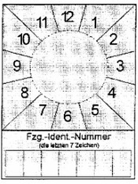
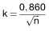
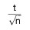
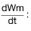
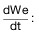
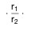
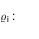

StVZO
Ausfertigungsdatum: 26.04.2012
Vollzitat:
"Straßenverkehrs-Zulassungs-Ordnung vom 26. April 2012 (BGBl. I S. 679), die zuletzt durch Artikel 1 der Verordnung vom 10. Juni 2024 (BGBl. 2024 I Nr. 191) geändert worden ist"
| Stand: | Zuletzt geändert durch Art. 1 V v. 10.6.2024 I Nr. 191 |
(+++ Textnachweis ab: 5.5.2012 +++)Die V wurde als Artikel 1 der V v. 26.4.2012 I 679 vom Bundesministerium für Verkehr, Bau und Stadtentwicklung, vom Bundesministeriun für Umwelt, Naturschutz und Reaktorsicherheit und vom Bundesministerium des Innern nach Anhörung der beteiligten Kreise mit Zustimmung des Bundesrates erlassen. Sie tritt gem. Artikel 2 dieser V am 5.5.2012 in Kraft.
| §§ 1 bis 15l | (weggefallen) |
| § 16 | Grundregel der Zulassung |
| § 17 | Einschränkung und Entziehung der Zulassung |
| § 18 | (weggefallen) |
| § 19 | Erteilung und Wirksamkeit der Betriebserlaubnis |
| § 20 | Allgemeine Betriebserlaubnis für Typen |
| § 21 | Betriebserlaubnis für Einzelfahrzeuge |
| § 21a | Anerkennung von Genehmigungen und Prüfzeichen auf Grund internationaler Vereinbarungen und von Rechtsakten der Europäischen Gemeinschaften |
| § 21b | Anerkennung von Prüfungen auf Grund von Rechtsakten der Europäischen Gemeinschaften |
| § 21c | (weggefallen) |
| § 22 | Betriebserlaubnis für Fahrzeugteile |
| § 22a | Bauartgenehmigung für Fahrzeugteile |
| § 23 | Gutachten für die Einstufung eines Fahrzeugs als Oldtimer |
| §§ 24 bis 28 | (weggefallen) |
| § 29 | Untersuchung der Kraftfahrzeuge und Anhänger |
| § 29a | Datenübermittlung |
| §§ 29b bis 29h | (weggefallen) |
| § 30 | Beschaffenheit der Fahrzeuge |
| § 30a | Durch die Bauart bestimmte Höchstgeschwindigkeit sowie maximales Drehmoment und maximale Nutzleistung des Motors |
| § 30b | Berechnung des Hubraums |
| § 30c | Vorstehende Außenkanten, Frontschutzsysteme |
| § 30d | Kraftomnibusse |
| § 31 | Verantwortung für den Betrieb der Fahrzeuge |
| § 31a | Fahrtenbuch |
| § 31b | Überprüfung mitzuführender Gegenstände |
| § 31c | Überprüfung von Fahrzeuggewichten |
| § 31d | Gewichte, Abmessungen und Beschaffenheit ausländischer Fahrzeuge |
| § 31e | Geräuscharme ausländische Kraftfahrzeuge |
| § 32 | Abmessungen von Fahrzeugen und Fahrzeugkombinationen |
| § 32a | Mitführen von Anhängern |
| § 32b | Unterfahrschutz |
| § 32c | Seitliche Schutzvorrichtungen |
| § 32d | Kurvenlaufeigenschaften |
| § 32e | Schutzstrukturen an land- oder forstwirtschaftlichen Zugmaschinen |
| § 33 | Schleppen von Fahrzeugen |
| § 34 | Achslast und Gesamtgewicht |
| § 34a | Besetzung, Beladung und Kennzeichnung von Kraftomnibussen |
| § 34b | Laufrollenlast und Gesamtgewicht von Gleiskettenfahrzeugen |
| § 35 | Motorleistung |
| § 35a | Sitze, Sicherheitsgurte, Rückhaltesysteme, Rückhalteeinrichtungen für Kinder, Rollstuhlnutzer und Rollstühle |
| § 35b | Einrichtungen zum sicheren Führen der Fahrzeuge |
| § 35c | Heizung und Lüftung |
| § 35d | Einrichtungen zum Auf- und Absteigen an Fahrzeugen und Betätigungsraum |
| § 35e | Türen |
| § 35f | Notausstiege in Kraftomnibussen |
| § 35g | Feuerlöscher in Kraftomnibussen |
| § 35h | Erste-Hilfe-Material in Kraftfahrzeugen |
| § 35i | Gänge, Anordnung von Fahrgastsitzen und Beförderung von Fahrgästen in Kraftomnibussen |
| § 35j | Brennverhalten der Innenausstattung bestimmter Kraftomnibusse |
| § 36 | Bereifung und Laufflächen |
| § 36a | Radabdeckungen, Ersatzräder |
| § 37 | Gleitschutzeinrichtungen und Schneeketten |
| § 38 | Lenkeinrichtung |
| § 38a | Sicherungseinrichtungen gegen unbefugte Benutzung von Kraftfahrzeugen |
| § 38b | Fahrzeug-Alarmsysteme |
| § 39 | Rückwärtsgang |
| § 39a | Betätigungseinrichtungen, Kontrollleuchten und Anzeiger |
| § 40 | Scheiben, Scheibenwischer, Scheibenwascher, Entfrostungs- und Trocknungsanlagen für Scheiben |
| § 41 | Bremsen und Unterlegkeile |
| § 41a | Druckgasanlagen und Druckbehälter |
| § 41b | Automatischer Blockierverhinderer |
| § 42 | Anhängelast hinter Kraftfahrzeugen und Leergewicht |
| § 43 | Einrichtungen zur Verbindung von Fahrzeugen |
| § 44 | Stützeinrichtung und Stützlast |
| § 45 | Kraftstoffbehälter |
| § 46 | Kraftstoffleitungen |
| § 47 | Abgase |
| § 47a | (weggefallen) |
| § 47b | (weggefallen) |
| § 47c | Ableitung von Abgasen |
| § 47d | Kohlendioxidemissionen, Kraftstoffverbrauch, Reichweite, Stromverbrauch |
| § 47e | Genehmigung, Nachrüstung und Nachfüllen von Klimaanlagen |
| § 47f | Kraftstoffe, emissionsbedeutsame Betriebsstoffe und Systeme zur Verringerung der Stickoxid-Emissionen |
| § 48 | Emissionsklassen für Kraftfahrzeuge |
| § 49 | Geräuschentwicklung und Schalldämpferanlage |
| § 49a | Lichttechnische Einrichtungen, allgemeine Grundsätze |
| § 50 | Scheinwerfer für Fern- und Abblendlicht |
| § 51 | Begrenzungsleuchten, vordere Rückstrahler, Spurhalteleuchten |
| § 51a | Seitliche Kenntlichmachung |
| § 51b | Umrissleuchten |
| § 51c | Parkleuchten, Park-Warntafeln |
| § 52 | Zusätzliche Scheinwerfer und Leuchten |
| § 52a | Rückfahrscheinwerfer |
| § 53 | Schlussleuchten, Bremsleuchten, Rückstrahler |
| § 53a | Warndreieck, Warnleuchte, Warnblinkanlage, Warnweste |
| § 53b | Ausrüstung und Kenntlichmachung von Anbaugeräten und Hubladebühnen |
| § 53c | Tarnleuchten |
| § 53d | Nebelschlussleuchten |
| § 54 | Fahrtrichtungsanzeiger |
| § 54a | Innenbeleuchtung in Kraftomnibussen |
| § 54b | Windsichere Handlampe |
| § 55 | Einrichtungen für Schallzeichen |
| § 55a | Elektromagnetische Verträglichkeit |
| § 56 | Spiegel und andere Einrichtungen für indirekte Sicht |
| § 57 | Geschwindigkeitsmessgerät und Wegstreckenzähler |
| § 57a | Fahrtschreiber und Kontrollgerät |
| § 57b | Prüfung der Fahrtenschreiber und Kontrollgeräte |
| § 57c | Ausrüstung von Kraftfahrzeugen mit Geschwindigkeitsbegrenzern und ihre Benutzung |
| § 57d | Einbau und Prüfung von Geschwindigkeitsbegrenzern |
| § 58 | Geschwindigkeitsschilder |
| § 59 | Fabrikschilder, sonstige Schilder, Fahrzeug-Identifizierungsnummer |
| § 59a | Nachweis der Übereinstimmung mit der Richtlinie 96/53/EG |
| § 60 | Flüssiggasanlagen in Fahrzeugen |
| § 60a | (weggefallen) |
| § 61 | Halteeinrichtungen für Beifahrer sowie Fußstützen und Ständer von zweirädrigen Kraftfahrzeugen |
| § 61a | Besondere Vorschriften für Anhänger hinter Fahrrädern mit Hilfsmotor |
| § 62 | Elektrische Einrichtungen von elektrisch angetriebenen Kraftfahrzeugen |
| § 63 | Anwendung der für Kraftfahrzeuge geltenden Vorschriften |
| § 63a | Fahrräder und Fahrradanhänger |
| § 64 | Lenkeinrichtung, sonstige Ausrüstung und Bespannung |
| § 64a | Einrichtungen für Schallzeichen |
| § 64b | Kennzeichnung |
| § 65 | Bremsen |
| § 66 | Rückspiegel |
| § 66a | Lichttechnische Einrichtungen |
| § 67 | Lichttechnische Einrichtungen an Fahrrädern |
| § 67a | Lichttechnische Einrichtungen an Fahrradanhängern |
| § 68 | Zuständigkeiten |
| § 69 | (weggefallen) |
| § 69a | Ordnungswidrigkeiten |
| § 69b | (weggefallen) |
| § 70 | Ausnahmen |
| § 71 | Auflagen bei Ausnahmegenehmigungen |
| § 72 | Übergangsbestimmungen |
| § 73 | Technische Festlegungen |
| Anlage I | (weggefallen) |
| Anlage II | (weggefallen) |
| Anlage III | (weggefallen) |
| Anlage IV | (weggefallen) |
| Anlage V | (weggefallen) |
| Anlage Va | (weggefallen) |
| Anlage Vb | (weggefallen) |
| Anlage Vc | (weggefallen) |
| Anlage Vd | (weggefallen) |
| Anlage VI | (weggefallen) |
| Anlage VII | (weggefallen) |
| Anlage VIII | Untersuchung der Fahrzeuge |
| Anlage VIIIa | Durchführung der Hauptuntersuchung |
| Anlage VIIIb | Anerkennung der Überwachungsorganisationen |
| Anlage VIIIc | Anerkennung von Kraftfahrzeugwerkstätten zur Durchführung von Sicherheitsprüfungen und/oder Untersuchungen der Abgase sowie Schulung der verantwortlichen Personen und Fachkräfte |
| Anlage VIIId | Untersuchungsstellen zur Durchführung von Hauptuntersuchungen, Sicherheitsprüfungen, Untersuchungen der Abgase und wiederkehrenden Gasanlagenprüfungen |
| Anlage VIIIe | Bereitstellung von Vorgaben für die Durchführung von Hauptuntersuchungen und Sicherheitsprüfungen; Auswertung von Erkenntnissen |
| Anlage IX | Prüfplakette für die Untersuchung von Kraftfahrzeugen und Anhängern |
| Anlage IXa | (weggefallen) |
| Anlage IXb | Prüfmarke und SP-Schild für die Durchführung von Sicherheitsprüfungen |
| Anlage X | Fahrgasttüren, Notausstiege, Gänge und Anordnung von Fahrgastsitzen in Kraftomnibussen |
| Anlage XI | (weggefallen) |
| Anlage XIa | (weggefallen) |
| Anlage XIb | (weggefallen) |
| Anlage XII | Bedingungen für die Gleichwertigkeit von Luftfederungen und bestimmten anderen Federungssystemen an der (den) Antriebsachse(n) des Fahrzeugs |
| Anlage XIII | Zulässige Zahl von Sitzplätzen und Stehplätzen in Kraftomnibussen |
| Anlage XIV | Emissionsklassen für Kraftfahrzeuge |
| Anlage XV | Zeichen „Geräuscharmes Kraftfahrzeug“ |
| Anlage XVI | Maßnahmen gegen die Emission verunreinigender Stoffe aus Dieselmotoren zum Antrieb von land- oder forstwirtschaftlichen Zugmaschinen |
| Anlage XVII | Gassystemeinbauprüfungen und sonstige Gasanlagenprüfungen |
| Anlage XVIIa | Anerkennung von Kraftfahrzeugwerkstätten zur Durchführung von Gassystemeinbauprüfungen oder von wiederkehrenden und sonstigen Gasanlagenprüfungen sowie Schulung der verantwortlichen Personen und Fachkräfte |
| Anlage XVIII | Prüfung der Fahrtenschreiber |
| Anlage XVIIIa | Durchführung der Prüfungen der Fahrtenschreiber |
| Anlage XVIIIb | Prüfstellen für die Durchführung von Prüfungen der Fahrtenschreiber und der Geschwindigkeitsbegrenzer |
| Anlage XVIIIc | Anerkennung von Fahrtenschreiberherstellern für die Durchführung von Prüfungen der Fahrtenschreiber oder der Geschwindigkeitsbegrenzer sowie von Fahrzeugherstellern oder Fahrzeugimporteuren für die Durchführung von Einbauprüfungen der Fahrtenschreiber |
| Anlage XVIIId | Beauftragung von Kraftfahrzeugwerkstätten zur Durchführung von Prüfungen der Fahrtenschreiber oder der Geschwindigkeitsbegrenzer |
| Anlage XIX | (weggefallen) |
| Anlage XX | (weggefallen) |
| Anlage XXI | Kriterien für lärmarme Kraftfahrzeuge |
| Anlage XXII | Anforderungen an Stickoxid-Minderungssysteme (NOx-Minderungssysteme) mit hoher Minderungsleistung zur Einhaltung eines Emissionswerts von weniger als 270 mg/km NOx für Kraftfahrzeuge mit Selbstzündungsmotor (NOxMS-Pkw) |
| Anlage XXIII | Maßnahmen gegen die Verunreinigung der Luft durch Gase und Partikel von Kraftfahrzeugen mit Fremdzündungsmotoren und Selbstzündungsmotoren (Definition schadstoffarmer Personenkraftwagen) |
| Anlage XXIV | Maßnahmen gegen die Verunreinigung der Luft durch Gase von Kraftfahrzeugen mit Fremd- und Selbstzündungsmotoren (Definition bedingt schadstoffarmer Personenkraftwagen) |
| Anlage XXV | Maßnahmen gegen die Verunreinigung der Luft durch Gase von Kraftfahrzeugen mit Fremd- oder Selbstzündungsmotoren (Definition schadstoffarmer Personenkraftwagen gemäß Europa-Norm) |
| Anlage XXVI | Maßnahmen gegen die Verunreinigung der Luft durch Partikel von Kraftfahrzeugen mit Selbstzündungsmotor |
| Anlage XXVII | Maßnahmen gegen die Verunreinigung der Luft durch Partikel von Nutzfahrzeugen sowie von mobilen Maschinen und Geräten mit Selbstzündungsmotor |
| Anlage XXVIII | Beispiel für einen Warnhinweis vor der Verwendung einer nach hinten gerichteten Rückhalteeinrichtung für Kinder auf Beifahrerplätzen mit Airbag |
| Anlage XXIX | EG-Fahrzeugklassen |
| Muster 1 | (weggefallen) |
| Muster 1a | (weggefallen) |
| Muster 1b | (weggefallen) |
| Muster 1c | (weggefallen) |
| Muster 1d | (weggefallen) |
| Muster 1e | (weggefallen) |
| Muster 2a | (weggefallen) |
| Muster 2b | (weggefallen) |
| Muster 2c | (weggefallen) |
| Muster 2d | Datenbestätigung |
| Muster 3 | (weggefallen) |
| Muster 4 | (weggefallen) |
| Muster 5 | (weggefallen) |
| Muster 6 | (weggefallen) |
| Muster 6a | (weggefallen) |
| Muster 7 | (weggefallen) |
| Muster 8 | (weggefallen) |
| Muster 8a | (weggefallen) |
| Muster 9 | (weggefallen) |
| Muster 10 | (weggefallen) |
| Muster 11 | (weggefallen) |
| Muster 12 | (weggefallen) |
| Muster 13 | (weggefallen) |
| „Betriebserlaubnis erteilt“. |
| 1. | allgemein | 2,55 m, |
| 2. | bei land- oder forstwirtschaftlichen Arbeitsgeräten, bei selbstfahrenden land- oder forstwirtschaftlichen Arbeitsmaschinen und bei Zugmaschinen und Sonderfahrzeugen mit auswechselbaren land- oder forstwirtschaftlichen Anbaugeräten, wenn sie für land- oder forstwirtschaftliche Zwecke gemäß § 6 Absatz 5 der Fahrerlaubnis-Verordnung eingesetzt werden | 3,00 m, |
| 3. | bei Anhängern hinter Krafträdern | 1,00 m, |
| 4. | bei festen oder abnehmbaren Aufbauten von klimatisierten Fahrzeugen, die für die Beförderung von Gütern in temperaturgeführtem Zustand ausgerüstet sind und deren Seitenwände einschließlich Wärmedämmung mindestens 45 mm dick sind | 2,60 m, |
| 5. | bei Personenkraftwagen | 2,50 m, |
| 6. | bei Fahrzeugen mit angebauten Geräten für die Straßenunterhaltung | 3,00 m. |
| (2) Bei Kraftfahrzeugen, Fahrzeugkombinationen und Anhängern einschließlich mitgeführter austauschbarer Ladungsträger (§ 42 Absatz 3) darf die höchstzulässige Höhe über alles folgendes Maß nicht überschreiten: | 4,00 m. |
| 1. | bei Kraftfahrzeugen und Anhängern – ausgenommen Kraftomnibusse und Sattelanhänger – | 12,00 m, |
| 2. | bei zweiachsigen Kraftomnibussen – einschließlich abnehmbarer Zubehörteile – | 13,50 m, |
| 3. | bei Kraftomnibussen mit mehr als zwei Achsen – einschließlich abnehmbarer Zubehörteile – | 15,00 m, |
| 4. | bei Kraftomnibussen, die als Gelenkfahrzeug ausgebildet sind (Kraftfahrzeuge, deren Nutzfläche durch ein Gelenk unterteilt ist, bei denen der angelenkte Teil jedoch kein selbstständiges Fahrzeug darstellt) | 18,75 m. |
| 1. | bei Sattelkraftfahrzeugen (Sattelzugmaschine mit Sattelanhänger) und Fahrzeugkombinationen (Zügen) nach Art eines Sattelkraftfahrzeugs – ausgenommen Sattelkraftfahrzeugen nach Nummer 2 – | 15,50 m, | |
| 2. | bei Sattelkraftfahrzeugen (Sattelzugmaschine mit Sattelanhänger), wenn die höchstzulässigen Teillängen des Sattelanhängers | ||
| a) | Achse Zugsattelzapfen bis zur hinteren Begrenzung 12,00 m und | ||
| b) | vorderer Überhangradius 2,04 m | ||
| nicht überschritten werden, | 16,50 m, | ||
| 3. | bei Zügen, ausgenommen Züge nach Nummer 4: | ||
| a) | Kraftfahrzeuge außer Zugmaschinen mit Anhängern | 18,00 m, | |
| b) | Zugmaschinen mit Anhängern | 18,75 m, | |
| 4. | bei Zügen, die aus einem Lastkraftwagen und einem Anhänger zur Güterbeförderung bestehen, | 18,75 m. | |
| Dabei dürfen die höchstzulässigen Teillängen folgende Maße nicht überschreiten: | |||
| a) | größter Abstand zwischen dem vordersten äußeren Punkt der Ladefläche hinter dem Führerhaus des Lastkraftwagens und dem hintersten äußeren Punkt der Ladefläche des Anhängers der Fahrzeugkombination, abzüglich des Abstands zwischen der hinteren Begrenzung des Kraftfahrzeugs und der vorderen Begrenzung des Anhängers | 15,65 m | |
| und | |||
| b) | größter Abstand zwischen dem vordersten äußeren Punkt der Ladefläche hinter dem Führerhaus des Lastkraftwagens und dem hintersten äußeren Punkt der Ladefläche des Anhängers der Fahrzeugkombination | 16,40 m. | |
| Bei Fahrzeugen mit Aufbau – bei Lastkraftwagen jedoch ohne Führerhaus – gelten die Teillängen einschließlich Aufbau. | |||
| (4a) Bei Fahrzeugkombinationen, die aus einem Kraftomnibus und einem Anhänger bestehen, beträgt die höchstzulässige Länge, unter Beachtung der Vorschriften in Absatz 3 Nummer 1 bis 3 | 18,75 m. |
| 1. | Breite: | ||
| a) | bei Krafträdern sowie dreirädrigen und vierrädrigen Kraftfahrzeugen | 2,00 m, | |
| b) | bei zweirädrigen Kleinkrafträdern und Fahrrädern mit Hilfsmotor jedoch | 1,00 m, | |
| 2. | Höhe: | 2,50 m, | |
| 3. | Länge: | 4,00 m. | |
| § 36 | (Bereifung und Laufflächen); |
| § 41 Absatz 11 | (Bremsen an einachsigen Anhängern und zweiachsigen Anhängern mit einem Achsabstand von weniger als 1,0 m). |
| § 35 | (Motorleistung); |
| § 41 Absatz 10 und 18 | (Auflaufbremse); |
| § 41 Absatz 15 und 18 | (Dauerbremse). |
| 1. | Einzelachslast | ||
| a) | Einzelachsen | 10,00 t | |
| b) | Einzelachsen (angetrieben) | 11,50 t; | |
| 2. | Doppelachslast von Kraftfahrzeugen unter Beachtung der Vorschriften für die Einzelachslast | ||
| a) | Achsabstand weniger als 1,0 m | 11,50 t | |
| b) | Achsabstand 1,0 m bis weniger als 1,3 m | 16,00 t | |
| c) | Achsabstand 1,3 m bis weniger als 1,8 m | 18,00 t | |
| d) | Achsabstand 1,3 m bis weniger als 1,8 m, wenn die Antriebsachse mit Doppelbereifung und Luftfederung oder einer als gleichwertig anerkannten Federung nach Anlage XII ausgerüstet ist oder jede Antriebsachse mit Doppelbereifung ausgerüstet ist und dabei die höchstzulässige Achslast von 9,50 t je Achse nicht überschritten wird, | 19,00 t; | |
| 3. | Doppelachslast von Anhängern unter Beachtung der Vorschriften für die Einzelachslast | ||
| a) | Achsabstand weniger als 1,0 m | 11,00 t | |
| b) | Achsabstand 1,0 m bis weniger als 1,3 m | 16,00 t | |
| c) | Achsabstand 1,3 m bis weniger als 1,8 m | 18,00 t | |
| d) | Achsabstand 1,8 m oder mehr | 20,00 t; | |
| 4. | Dreifachachslast unter Beachtung der Vorschriften für die Doppelachslast | ||
| a) | Achsabstände nicht mehr als 1,3 m | 21,00 t | |
| b) | Achsabstände mehr als 1,3 m und nicht mehr als 1,4 m | 24,00 t. | |
| 1. | Fahrzeuge mit nicht mehr als zwei Achsen | ||
| a) | Kraftfahrzeuge – ausgenommen Kraftomnibusse – und Anhänger jeweils | 18,00 t | |
| b) | Kraftomnibusse | 19,50 t; | |
| 2. | Fahrzeuge mit mehr als zwei Achsen – ausgenommen Kraftfahrzeuge nach Nummern 3 und 4 – | ||
| a) | Kraftfahrzeuge | 25,00 t | |
| b) | Kraftfahrzeuge mit einer Doppelachslast nach Absatz 4 Nummer 2 Buchstabe d | 26,00 t | |
| c) | Anhänger | 24,00 t | |
| d) | Kraftomnibusse, die als Gelenkfahrzeuge gebaut sind | 28,00 t; | |
| 3. | Kraftfahrzeuge mit mehr als drei Achsen – ausgenommen Kraftfahrzeuge nach Nummer 4 – | ||
| a) | Kraftfahrzeuge mit zwei Doppelachsen, deren Mitten mindestens 4,0 m voneinander entfernt sind | 32,00 t | |
| b) | Kraftfahrzeuge mit zwei gelenkten Achsen und mit einer Doppelachslast nach Absatz 4 Nummer 2 Buchstabe d und deren höchstzulässige Belastung, bezogen auf den Abstand zwischen den Mitten der vordersten und der hintersten Achse, 5,00 t je Meter nicht übersteigen darf, nicht mehr als | 32,00 t; | |
| 4. | Kraftfahrzeuge mit mehr als vier Achsen unter Beachtung der Vorschriften in Nummer 3 | 32,00 t. | |
| 1. | Fahrzeugkombinationen mit weniger als vier Achsen | 28,00 t; | |
| 2. | Züge mit vier Achsen | ||
| zweiachsiges Kraftfahrzeug mit zweiachsigem Anhänger | 36,00 t; | ||
| 3. | zweiachsige Sattelzugmaschine mit zweiachsigem Sattelanhänger | ||
| a) | bei einem Achsabstand des Sattelanhängers von 1,3 m und mehr | 36,00 t | |
| b) | bei einem Achsabstand des Sattelanhängers von mehr als 1,8 m, wenn die Antriebsachse mit Doppelbereifung und Luftfederung oder einer als gleichwertig anerkannten Federung nach Anlage XII ausgerüstet ist, | 38,00 t; | |
| 4. | andere Fahrzeugkombinationen mit vier Achsen | ||
| a) | mit Kraftfahrzeug nach Absatz 5 Nummer 2 Buchstabe a | 35,00 t | |
| b) | mit Kraftfahrzeug nach Absatz 5 Nummer 2 Buchstabe b | 36,00 t; | |
| 5. | Fahrzeugkombinationen mit mehr als vier Achsen oder mit Gleiskettenfahrzeugen | 40,00 t; | |
| 6. | Sattelkraftfahrzeug im Rahmen intermodaler Beförderungsvorgänge im Sinne des Artikels 2 der Richtlinie 96/53/EG, bestehend aus | ||
| a) | zweiachsigem Kraftfahrzeug mit dreiachsigem Sattelanhänger, das einen oder mehrere Container oder Wechselaufbauten mit einer maximalen Gesamtlänge von bis zu 45 Fuß befördert | 42,00 t, | |
| b) | dreiachsigem Kraftfahrzeug mit zwei- oder dreiachsigem Sattelanhänger, das einen oder mehrere Container oder Wechselaufbauten mit einer maximalen Gesamtlänge von bis zu 45 Fuß befördert | 44,00 t. | |
| 28,00 t | (Absatz 6 Nummer 1), |
| 36,00 t | (Absatz 6 Nummer 2 und 3 Buchstabe a und Nummer 4 Buchstabe b), |
| 38,00 t | (Absatz 6 Nummer 3 Buchstabe b), |
| 35,00 t | (Absatz 6 Nummer 4 Buchstabe a), |
| 40,00 t | (Absatz 6 Nummer 5) oder |
| 44,00 t | (Absatz 6 Nummer 6), |
| A: | Brennbare feste Stoffe (flammen- und glutbildend), |
| B: | Brennbare flüssige Stoffe (flammenbildend) und |
| C: | Brennbare gasförmige Stoffe (flammenbildend) |
 (Bergpiktogramm mit Schneeflocke) nach der Regelung Nr. 117 der Wirtschaftskommission der Vereinten Nationen für Europa (UNECE) – Einheitliche Bedingungen für die Genehmigung der Reifen hinsichtlich der Rollgeräuschemissionen und der Haftung auf nassen Oberflächen und/oder des Rollwiderstandes (ABl. L 218 vom 12.8.2016, S. 1) gekennzeichnet sind.
(Bergpiktogramm mit Schneeflocke) nach der Regelung Nr. 117 der Wirtschaftskommission der Vereinten Nationen für Europa (UNECE) – Einheitliche Bedingungen für die Genehmigung der Reifen hinsichtlich der Rollgeräuschemissionen und der Haftung auf nassen Oberflächen und/oder des Rollwiderstandes (ABl. L 218 vom 12.8.2016, S. 1) gekennzeichnet sind. |
Lichttechnische Einrichtung | Minimale Höhe [mm] | Maximale Höhe [mm] |
|---|---|---|
| Scheinwerfer für Abblendlicht | 400 | 1 200 |
| Rückstrahler vorne | 400 | 1 200 |
| Hinten: Schlussleuchte, Rückstrahler | 250 | 1 200 |
| Art des Fahrzeugs | Art der Untersuchung und Zeitabstand | ||
|---|---|---|---|
| Hauptuntersuchung Monate | Sicherheitsprüfung Monate | ||
| 2.1.1 | Krafträder | 24 | – |
| 2.1.2 | Personenkraftwagen sowie Krankenkraftwagen und Behinderten-Transportfahrzeuge mit nicht mehr als acht Fahrgastplätzen | ||
| 2.1.2.1 | Personenkraftwagen allgemein | ||
| 2.1.2.1.1 | bei erstmals in den Verkehr gekommenen Personenkraftwagen für die erste oder bei Personenkraftwagen nach Nummer 2.2 bei Wechsel des Halters innerhalb der ersten sieben Monate nach Erstzulassung und durchgeführter Hauptuntersuchung für die zweite Hauptuntersuchung | 36 | – |
| 2.1.2.1.2 | für die weiteren Hauptuntersuchungen | 24 | – |
| 2.1.2.2 | Personenkraftwagen zur Personenbeförderung nach dem Personenbeförderungsgesetz oder nach § 1 Nummer 4 Buchstabe d, g und i der Freistellungs-Verordnung | 12 | – |
| 2.1.2.3 | Krankenkraftwagen und Behinderten-Transportfahrzeuge mit nicht mehr als acht Fahrgastplätzen | 12 | – |
| 2.1.3 | Kraftomnibusse und andere Kraftfahrzeuge mit mehr als acht Fahrgastplätzen | ||
| 2.1.3.1 | bei erstmals in den Verkehr gekommenen Fahrzeugen in den ersten zwölf Monaten | 12 | – |
| 2.1.3.2 | für die weiteren Untersuchungen von zwölf bis 36 Monate vom Tag der Erstzulassung an | 12 | 6 |
| 2.1.3.3 | für die weiteren Untersuchungen | 12 | 3/6/9 |
| 2.1.4 | Kraftfahrzeuge, die zur Güterbeförderung bestimmt sind, selbstfahrende Arbeitsmaschinen, Zugmaschinen sowie Kraftfahrzeuge, die nicht unter 2.1.1 bis 2.1.3 oder 2.1.6 fallen | ||
| 2.1.4.1 | mit einer bauartbestimmten Höchstgeschwindigkeit von nicht mehr als 40 km/h oder einer zulässigen Gesamtmasse ≤ 3,5 t | 24 | – |
| 2.1.4.2 | mit einer zulässigen Gesamtmasse > 3,5 t ≤ 7,5 t | 12 | – |
| 2.1.4.3 | mit einer zulässigen Gesamtmasse > 7,5 t ≤ 12 t | ||
| 2.1.4.3.1 | bei erstmals in den Verkehr gekommenen Fahrzeugen in den ersten 36 Monaten | 12 | – |
| 2.1.4.3.2 | für die weiteren Untersuchungen | 12 | 6 |
| 2.1.4.4 | mit einer zulässigen Gesamtmasse > 12 t | ||
| 2.1.4.4.1 | bei erstmals in den Verkehr gekommenen Fahrzeugen in den ersten 24 Monaten | 12 | – |
| 2.1.4.4.2 | für die weiteren Untersuchungen | 12 | 6 |
| 2.1.5 | Anhänger, einschließlich angehängte Arbeitsmaschinen und Wohnanhänger | ||
| 2.1.5.1 | mit einer zulässigen Gesamtmasse ≤ 0,75 t oder ohne eigene Bremsanlage | ||
| 2.1.5.1.1 | bei erstmals in den Verkehr gekommenen Fahrzeugen für die erste Hauptuntersuchung | 36 | – |
| 2.1.5.1.2 | für die weiteren Hauptuntersuchungen | 24 | – |
| 2.1.5.2 | die entsprechend § 58 für eine zulässige Höchstgeschwindigkeit von nicht mehr als 40 km/h gekennzeichnet sind oder mit einer zulässigen Gesamtmasse > 0,75 t ≤ 3,5 t | 24 | – |
| 2.1.5.3 | mit einer zulässigen Gesamtmasse > 3,5 t ≤ 10 t | 12 | – |
| 2.1.5.4 | mit einer zulässigen Gesamtmasse > 10 t | ||
| 2.1.5.4.1 | bei erstmals in den Verkehr gekommenen Fahrzeugen in den ersten 24 Monaten | 12 | – |
| 2.1.5.4.2 | für die weiteren Untersuchungen | 12 | 6 |
| 2.1.6 | Wohnmobile | ||
| 2.1.6.1 | mit einer zulässigen Gesamtmasse ≤ 3,5 t | ||
| 2.1.6.1.1 | bei erstmals in den Verkehr gekommenen Fahrzeugen für die erste Hauptuntersuchung | 36 | – |
| 2.1.6.1.2 | für die weiteren Hauptuntersuchungen | 24 | – |
| 2.1.6.2 | mit einer zulässigen Gesamtmasse > 3,5 t ≤ 7,5 t | ||
| 2.1.6.2.1 | bei erstmals in den Verkehr gekommenen Fahrzeugen in den ersten 72 Monaten | 24 | – |
| 2.1.6.2.2 | für die weiteren Hauptuntersuchungen | 12 | – |
| 2.1.6.3 | mit einer zulässigen Gesamtmasse > 7,5 t | 12 | – |
| Untersuchungspunkt (Bauteil, System) | Untersuchungskriterium | |
| Pflichtuntersuchungen | Ergänzungsuntersuchungen (Beispiele) | |
| Gesamtanlage | ● ● ● ● ● ● ● | Einhaltung von Vorgaben Betriebsbremswirkung Feststellbremswirkung Gleichmäßigkeit Funktion der Dauerbrems- anlage – Auffälligkeiten Abstufbarkeit/Zeitverhalten – Auffälligkeiten Löseverhalten | ● ● ● | Hilfsbremswirkung Funktion des automatischen Blockierverhinderers Dichtheit |
| Einrichtungen zur Energiebeschaffung | ● | Füllzeit – Auffälligkeiten |
| Untersuchungspunkt (Bauteil, System) | Untersuchungskriterium | |||
|---|---|---|---|---|
| Pflichtuntersuchungen | Ergänzungsuntersuchungen (Beispiele) | |||
| Einrichtungen zur Energiebevorratung | ● ● | Zustand – Auffälligkeiten Funktion der Entwässerungseinrichtung | ● ● | Zustand Ausführung |
| Betätigungs- und Übertragungseinrichtungen | ● | Zustand – Auffälligkeiten | ● | Zustand |
| Auflaufeinrichtung | ● ● | Zustand – Auffälligkeiten Funktion | ● ● | Zustand Ausführung |
| Steuer- und Regeleinrichtungen (Ventile) | ● ● ● ● ● ● | Zustand – Auffälligkeiten bei Druckluftbremsanlagen: Einstellung und Funktion des automatisch lastabhängigen Bremskraftreglers Funktion der Abreißsicherung Funktion der selbsttätigen Bremsung Funktion des Löseventils am Anhänger Funktion der Drucksicherung (bei nicht SP-pflichtigen Fahrzeugen) | ● ● ● ● | Zustand Ausführung Funktion des Bremskraftverstärkers Funktion der Drucksicherung |
| Radbremse/Zuspanneinrichtung | ● ● | Zustand – Auffälligkeiten Funktion | ● ● ● ● | Zustand Funktion der Nachstelleinrichtung Einstellung Ausführung |
| Prüfeinrichtungen und Prüfanschlüsse | ● | Zustand – Auffälligkeiten | ● | Zustand |
| Kontroll- und Warneinrichtungen | ● | Funktion | ||
| Gesamtanlage | ● | Einhaltung von Vorgaben | ||
| Betätigungseinrichtungen | ● ● ● | Zustand – Auffälligkeiten Ausführung – Zulässigkeit Funktion der Lenkanlage | ● ● | Zustand Lenkkräfte – Auffälligkeit, Zulässigkeit |
| Übertragungseinrichtungen | ● | Zustand – Auffälligkeiten | ● ● | Zustand Einstellung |
| Lenkhilfe | ● | Funktion | ● ● | Zustand Dichtheit |
| Lenkungsdämpfer | ● | Zustand |
| Gesamtsystem | ● | Einhaltung von Vorgaben | ||
| Scheiben | ● ● | Zustand – Auffälligkeiten Beeinträchtigung des Sichtfeldes | ● ● | Zustand Ausführung – Zulässigkeit |
| Untersuchungspunkt (Bauteil, System) | Untersuchungskriterium | |||
|---|---|---|---|---|
| Pflichtuntersuchungen | Ergänzungsuntersuchungen (Beispiele) | |||
| Rückspiegel | ● ● | Zustand – Auffälligkeiten Ausführung, Anzahl – Zulässigkeit | ● ● | Zustand Beeinträchtigung der Sicht |
| Scheibenwischer | ● ● | Zustand – Auffälligkeiten Funktion | ● | Zustand |
| Scheibenwaschanlage | ● | Funktion | ||
| Gesamtsystem | ● | Einhaltung von Vorgaben |
| Scheinwerfer und Leuchten | ● ● ● ● ● | Zustand – Auffälligkeiten Ausführung – Zulässigkeit Anzahl – Zulässigkeit Funktion Einstellung der Scheinwerfer | ● ● ● ● | Zustand Prüfzeichen Blinkfrequenz von Fahrtrichtungsanzeiger und Warnblinkanlage Anbaumaße und Sichtwinkel – Zulässigkeit |
| Rückstrahler und retroreflektierende Einrichtungen | ● ● ● | Zustand – Auffälligkeiten Ausführung – Zulässigkeit Anzahl – Zulässigkeit | ● ● ● | Zustand Prüfzeichen Anbaumaße und Sichtwinkel – Zulässigkeit |
| elektrische Leitungen | ● | Zustand – Auffälligkeiten | ● ● | Zustand Verlegung, Absicherung |
| Batterien | ● | Zustand – Auffälligkeiten | ● | Zustand |
| elektrische Verbindungs- einrichtungen | ● ● ● | Zustand – Auffälligkeiten Ausführung – Zulässigkeit Anzahl – Zulässigkeit | ● ● | Zustand Funktion (Kontaktbelegung) |
| Kontroll- und Warneinrichtungen | ● | Funktion | ||
| andere Teile | ● | Zustand – Auffälligkeiten | ● | Zustand |
| Gesamtsystem | ● | Einhaltung von Vorgaben | ||
| Achsen | ● | Zustand – Auffälligkeiten | ● ● | Zustand Art und Qualität der Reparaturausführung |
| Untersuchungspunkt (Bauteil, System) | Untersuchungskriterium | |||
|---|---|---|---|---|
| Pflichtuntersuchungen | Ergänzungsuntersuchungen (Beispiele) | |||
| Aufhängung | ● ● | Zustand – Auffälligkeiten Ausführung – Zulässigkeit (Kraftrad) | ● | Zustand |
| Federn, Stabilisator | ● | Zustand – Auffälligkeiten | ● ● | Zustand Ausführung – Zulässigkeit |
| pneumatische und hydro- pneumatische Federung | ● | Zustand – Auffälligkeiten | ● ● | Zustand Funktion und Einstellung der Ventile |
| Schwingungsdämpfer/ Achsdämpfung | ● ● | Zustand – Auffälligkeiten Ausführung – Zulässigkeit | ● | Zustand |
| Räder | ● ● | Zustand – Auffälligkeiten Ausführung – Zulässigkeit | ● | Zustand |
| Reifen | ● ● | Zustand – Auffälligkeiten Ausführung – Zulässigkeit | ● | Zustand |
| Gesamtsystem | ● | Einhaltung von Vorgaben | ||
| Rahmen/tragende Teile | ● | Zustand – Auffälligkeiten | ● | Zustand |
| Aufbau | ● ● | Zustand – Auffälligkeiten Ausführung – Zulässigkeit/Befestigung | ● | Zustand |
| Unterfahrschutz/seitliche Schutzvorrichtung | ● ● | Zustand – Auffälligkeiten Ausführung – Zulässigkeit | ● | Zustand |
| mechanische Verbindungs- einrichtungen | ● | Zustand – Auffälligkeiten | ● ● ● | Zustand Ausführung – Zulässigkeit Funktion |
| Stützeinrichtungen | ● | Zustand – Auffälligkeiten | ● ● | Zustand Funktion |
| Reserveradhalterung | ● ● | Zustand – Auffälligkeiten Ausführung – Zulässigkeit | ● ● | Zustand Funktion |
| Heizung (nicht elektrisch und nicht mit Motorkühlmittel als Wärmequelle) | ● ● | Zustand – Auffälligkeiten Ausführung | ● ● ● | Zustand Prüf- bzw. Austauschfristen Funktion |
| Kraftradverkleidung | ● ● | Zustand – Auffälligkeiten Ausführung – Zulässigkeit | ● | Zustand |
| Untersuchungspunkt (Bauteil, System) | Untersuchungskriterium | |||
|---|---|---|---|---|
| Pflichtuntersuchungen | Ergänzungsuntersuchungen (Beispiele) | |||
| andere Teile | ● | Zustand – Auffälligkeiten | ● ● | Zustand Ausführung – Zulässigkeit |
| Antrieb | ● | Zustand – Auffälligkeiten | ● | Zustand |
| Sicherheitsgurte oder andere Rückhaltesysteme | ● ● ● | Einhaltung von Vorgaben Zustand – Auffälligkeiten Anzahl, Anbringung – Zulässigkeit | ● ● | Ausführung – Zulässigkeit Funktion |
| Airbag | ● | Einhaltung von Vorgaben | ● | Einhaltung der vom Hersteller vorgegebenen Austauschfrist |
| Überrollschutz | ● | Einhaltung von Vorgaben | ||
| fahrdynamische Systeme mit Eingriff in die Brems-/Lenkanlage | ● | Einhaltung von Vorgaben | ||
| sonstige Ausstattungen | ● | Einhaltung von Vorgaben |
| Sicherung gegen unbefugte Benutzung/Diebstahlsicherung/Alarmanlage | ● ● | Ausführung – Zulässigkeit Funktion | ● | Zustand |
| Unterlegkeile | ● ● | Zustand – Auffälligkeiten Ausführung, Anzahl, Anbringung – Zulässigkeit | ● | Zustand |
| Einrichtungen für Schallzeichen | ● ● | Ausführung – Zulässigkeit Funktion | ● | Zustand |
| Warndreieck/Warnleuchte/Warnweste, Verbandskasten | ● | Ausführung – Zulässigkeit | ● | Zustand |
| Geschwindigkeitsmessgerät | ● ● | Ausführung – Zulässigkeit Funktion | ● | Genauigkeit |
| Fahrtschreiber/Kontrollgerät | ● ● | Vorhandensein von Einbauschild und Verplombung Einhaltung der Prüffrist | ● ● | Zustand Funktion |
| Geschwindigkeitsbegrenzer | ● ● ● ● | Einhaltung von Vorgaben Ausführung, Einbau – Zulässigkeit Vorhandensein von Prüfbescheinigung bzw. Verplombung Funktion, falls durchführbar | ● ● ● | Zustand Manipulationssicherheit Funktion |
| Untersuchungspunkt (Bauteil, System) | Untersuchungskriterium | |||
|---|---|---|---|---|
| Pflichtuntersuchungen | Ergänzungsuntersuchungen (Beispiele) | |||
| Geschwindigkeitsschild(er) | ● ● | Zustand – Auffälligkeiten Ausführung, Anzahl, Anbringung – Zulässigkeit | ● | Zustand |
| weitere sicherheits- relevante Ausstattungen | ● | Einhaltung von Vorgaben | ||
| Schalldämpferanlage | ● ● ● | Zustand – Auffälligkeiten Ausführung – Zulässigkeit Geräuschentwicklung – Auffälligkeiten | ● ● | Zustand Messung Standgeräusch |
| Motor/Antrieb/Aufbau/Kapselung | ● | Geräuschentwicklung – Auffälligkeiten | ● ● | Zustand Messung Fahrgeräusch |
| Schalldämpferanlage | ● ● ● | Zustand – Auffälligkeiten Ausführung – Zulässigkeit, Kennzeichnung der Auspuffanlage Geräuschentwicklung – Auffälligkeiten | ● ● ● | Zustand Messung Standgeräusch bei nicht nachgewiesener Zulässigkeit Messung Standgeräusch |
| Motor/Antrieb/Aufbau/Kapselung | ● | Geräuschentwicklung – Auffälligkeiten | ● ● | Zustand Messung Fahrgeräusch |
| schadstoffrelevante Bauteile/ Abgasanlage | ● ● | Zustand – Auffälligkeiten Ausführung – Zulässigkeit | ||
| Abgasreinigungssystem | ● | Abgasverhalten – Zulässigkeit |
| schadstoffrelevante Bauteile/ Abgasanlage | ● ● | Zustand – Auffälligkeiten Ausführung – Zulässigkeit |
| Untersuchungspunkt (Bauteil, System) | Untersuchungskriterium | |||
|---|---|---|---|---|
| Pflichtuntersuchungen | Ergänzungsuntersuchungen (Beispiele) | |||
| Motormanagement-/ Abgasreinigungssysteme | ● ● | Abgasverhalten – Zulässigkeit OBD-Daten (Modus 01) – Zulässigkeit | ● | OBD-Fehlercodes (Modus 03) – Zulässigkeit |
| Zündanlage/andere elektrische und elektronische Einrichtungen | ● | Zustand – Auffälligkeiten |
| Motor/Antrieb/Lenkanlage/Tank/Kraftstoffleitungen/Bremsanlage/Klimaanlage/Batterie | ● ● | Zustand – Auffälligkeiten Ausführung – Zulässigkeit | ● ● | Zustand Dichtheit |
| gesamte Gasanlage | ● ● ● | Zustand – Auffälligkeiten Ausführung – Zulässigkeit Dichtheit | ● ● | Zustand Kennzeichnungen der Bauteile |
| gesamte Wasserstoffanlage | ● | Einhaltung von Vorgaben |
| gesamter elektrischer Antrieb | ● | Einhaltung von Vorgaben |
| gesamter Antrieb | ● | Einhaltung von Vorgaben |
| einzelne Systeme | ● | Einhaltung von Vorgaben |
| Gesamtsystem | ● | Einhaltung von Vorgaben | ||
| Ein-, Aus- und Notausstiege | ● ● ● | Zustand – Auffälligkeiten Ausführung, Anzahl – Zulässigkeit Funktion der Reversiereinrichtung | ● ● | Zustand Funktion |
| Hebeeinrichtungen/Hublifte, fremdkraftbetätigte Rampen | ● ● | Zustand – Auffälligkeiten Funktion | ● ● | Zustand Funktion |
| Untersuchungspunkt (Bauteil, System) | Untersuchungskriterium | |||
|---|---|---|---|---|
| Pflichtuntersuchungen | Ergänzungsuntersuchungen (Beispiele) | |||
| Bodenbelag und Trittstufen | ● ● | Zustand – Auffälligkeiten Ausführung | ● | Zustand |
| Platz für Fahrer und Begleit- personal | ● ● | Zustand – Auffälligkeiten Ausführung | ● | Zustand |
| Sitz-/Steh-/Liegeplätze, Durchgänge | ● ● | Zustand – Auffälligkeiten Ausführung, Anzahl – Zulässigkeit | ● ● | Zustand Übereinstimmung mit Angaben auf Schild |
| Festhalteeinrichtungen, Rückhalteeinrichtungen | ● ● ● | Zustand – Auffälligkeiten Ausführung, Anzahl, Anbringung – Zulässigkeit Funktion | ● | Ausführung – Zulässigkeit |
| Fahrgastverständigungssystem | ● | Funktion | ● | Zustand |
| Innenbeleuchtung | ● | Funktion | ● | Zustand |
| Ziel-/Streckenschild, Liniennummer | ● | Ausführung | ● ● | Funktion der Beleuchtungs- einrichtung Zustand |
| Unternehmeranschrift | ● | Ausführung | ||
| Feuerlöscher | ● | Einhaltung der Prüffrist | ● | Zustand |
| Brand-/Rauchmelder | ● | Funktion | ● | Zustand |
| Verbandkästen einschließlich Inhalt und Unterbringung | ● ● | Zustand – Auffälligkeiten Ausführung | ● | Zustand |
| Gesamtsystem | ● | Einhaltung von Vorgaben | ||
| Taxischild/Beleuchtungseinrichtung | ● | Ausführung | ● ● | Zustand Funktion |
| Fahrzeugfarbe | ● | Ausführung – Zulässigkeit | ||
| Unternehmeranschrift | ● | Ausführung | ||
| Fahrpreisanzeiger | ● ● | Ausführung Verplombung | ● | Zustand |
| Alarmeinrichtung | ● ● | Ausführung – Zulässigkeit Funktion | ● | Zustand |
| Kennzeichnung | ● | Ausführung, Anbringung – Zulässigkeit | ● | Zustand |
| Inneneinrichtung | ● | Ausführung | ● | Zustand |
| Untersuchungspunkt (Bauteil, System) | Untersuchungskriterium | |
| Pflichtuntersuchungen | Ergänzungsuntersuchungen (Beispiele) | |
| Fahrzeug-Identifizierungsnummer | ● ● | Zustand – Auffälligkeiten Ausführung – Übereinstimmung mit den Fahrzeugdokumenten | ● | Zustand |
| Fabrikschild | ● | Ausführung, Anbringung – Zulässigkeit | ● | Übereinstimmung mit den Fahrzeugdokumenten |
| Nachweis der Übereinstimmung mit der Richtlinie 96/53/EG | ● ● | Zustand – Auffälligkeiten Ausführung – Auffälligkeiten | ● | Übereinstimmung mit den tatsächlichen Maßen |
| amtliches Kennzeichen (vorne und hinten) | ● ● | Zustand Ausführung | ||
| Fahrzeugdokumente | ● | Übereinstimmung der Angaben mit den tatsächlichen Verhältnissen |
| 1 | 2 | 3 | 4 | 5 | 6 | 7 | |
|---|---|---|---|---|---|---|---|
| Untersuchungsstellen/ Anforderungen | Prüfstellen | Prüfstützpunkte | Prüfplätze | Anerkannte Kraftfahrzeugwerkstätten zur Durchführung von | |||
| SP | AU | AUK | GWP | ||||
| 1. Grundstück | Lage und Größe müssen ordnungsgemäße HU/AU/SP an zu erwartender Zahl von Fahrzeugen gewährleisten. | Muss so beschaffen sein, dass Störungen im öffentlichen Verkehrsraum durch den Betrieb nicht entstehen. | Geeigneter Platz zur Durchführung einer HU/AU/SP an mindestens einem Fahrzeug muss vorhanden sein. | Mindestgröße ergibt sich aus 2. | Mindestgröße ergibt sich aus 2. | Mindestgröße ergibt sich aus 2. | Mindestgröße ergibt sich aus 2. |
| 2. Bauliche Anforderungen | Prüfhalle muss festeingebaute Prüfeinrichtungen überdecken. Ihre Abmessungen richten sich nach der Anzahl der Prüfgassen und deren Ausrüstung. Die Länge und Höhe wird durch den Einbau der jeweiligen Prüfgeräte und die Abmessungen der zu untersuchenden Fahrzeuge bestimmt. | Ausreichend bemessene Halle oder überdachter Platz in Abhängigkeit von den zu untersuchenden Fahrzeugen (z. B. nur Fahrzeuge bis zu einer bestimmten zul. Gesamtmasse). | – | Ausreichend bemessene Halle oder überdachter Platz, wo ein Lastkraftwagenzug geprüft werden kann. | Ausreichend bemessene Halle oder geschlossener Prüfraum. Die Größe richtet sich nach der Art der zu untersuchenden Kraftfahrzeuge entsprechend der Anerkennung (z. B. nur Fahrzeuge bis zu einer bestimmten zul. Gesamtmasse). | Geeigneter und geschlossener Prüfraum, wo mindestens ein Kraftrad untersucht werden kann. | Ausreichend bemessene Halle oder überdachter Platz in Abhängigkeit von den zu untersuchenden Fahrzeugen (z. B. nur Fahrzeuge bis zu einer bestimmten zul. Gesamtmasse). |
| 3. Grube, Hebebühnen oder Rampe mit ausreichender Länge und Beleuchtungsmöglichkeit sowie mit Einrichtung zum Freiheben der Achsen oder Spieldetektoren | X | X Jedoch entbehrlich, sofern nur Krafträder untersucht werden. | X Jedoch entbehrlich, sofern nur Fahrzeuge mit Vmax./zul.≤ 40 km/h untersucht werden. | X | – | – | X Jedoch ohne Einrichtung zum Freiheben der Achsen oder Spieldetektoren. |
| 4. Ortsfester Bremsprüfstand | X | X1) | X1) | X1) | – | – | – |
| 5. Schreibendes Bremsmessgerät | X2) | X2) | X2) | X2) | – | – | – |
| 6. Prüfgerät zur Funktionsprüfung von Druckluftbremsanlagen | X3) | X3) | X3) | X3) | – | – | – |
| 7. Druckluftbeschaffungsanlage ausreichender Größe und Leistung | – | – | – | X | – | – | – |
| 8. Füll- und Entlüftergerät sowie Pedalstütze (Prüfung) für Hydraulikbremsanlagen | – | – | – | X4) | – | – | – |
| 9. Mess- und Prüfgeräte | |||||||
| 9.1 zur Prüfung einzelner Bremsaggregate und Bremsventile | – | – | – | X5) | – | – | – |
| 9.2 zur Prüfung des Luftpressers | – | – | – | X5) | – | – | – |
| 10. Bandmaß oder anderes Längenmessmittel (≥ 20 m), Zeitmesser | X | X | X | Nur Zeitmesser | – | – | – |
| 11. Scheinwerfereinstellprüfgerät und ebene Fläche für die Aufstellung des Fahrzeugs | X | X | X6) | – | – | – | – |
| 12. Prüfgerät für die elektrischen Verbindungseinrichtungen zwischen Kraftfahrzeug und Anhänger | X | X | X | – | – | – | – |
| 13. Lehren für die Überprüfung von Zugösen und Bolzen der Anhängerkupplung, Zugsattelzapfen, Sattelkupplungen, Kupplungskugeln | X7) X7) X7) X | X7) X7) X7) X | X7) X7) X7) X | X7) X7) X7) X | – | – | – |
| 14. Messgeräte zur Messung der Spitzenkraft nach Anhang V der Richtlinie 2001/85/EG | X8) | X8) | X8) | X8) | – | – | – |
| 15. Prüfgerät zur Funktionsprüfung von Geschwindigkeitsbegrenzern | X9) | X9) | X9) | – | – | – | – |
| 16. Ausstattung mit Spezialwerkzeugen nach Art der zu erledigenden Montagearbeiten | – | – | – | X | – | – | – |
| 17. Messgerät zur Ermittlung der Temperatur des Motors | X | X | X | – | X | X | – |
| 18. Geräte zur Prüfung von Schließwinkeln, Zündzeitpunkt und Motordrehzahl | X10) | X10) | X10) | – | X10) | X11) | – |
| 19. CO-Abgasmessgerät oder Abgasmessgerät für Fremdzündungsmotoren | X10) | X10) | X10) | – | X10) | X | – |
| 20. Abgasmessgerät für Fremdzündungsmotoren | X | X | X12) | – | X13) | – | – |
| 21. Abgasmessgerät für Kompressionszündungsmotoren | X | X | X12) | – | X14) | X15) | – |
| 22. Prüf- und Diagnosegerät zur Prüfung von OBD-Kfz | X | X | X12) | – | X | – | – |
| 23. Messgerät für Geräuschmessung | X | X | X | – | – | – | – |
| 24. Prüfmittel für die Gasanlagenprüfung: Lecksuchspray für die zu prüfenden Betriebsgase (LPG, CNG) zum Auffinden von Gasundichtigkeiten | X16) | X16) | X16) | – | – | – | X |
| 25. Einrichtungen für die Systemdatenprüfung und/oder Prüfungen über die elektronische Fahrzeugschnittstelle | X | X | X | X17) | – | – | – |
| 26. Fußkraftmessgerät (Bremsanlagen) | X19) | X18) | X18) | X18) | – | – | – |

| Durchmesser | 35 mm |
| Schrifthöhe der Ziffern bei den Monatszahlen | 4 mm |
| Schrifthöhe der Ziffern bei der Jahreszahl | 5 mm |
| Höhe des ebenen Strichs über und unter den Zahlen 1 bis 12 | 3 mm |
| Strichdicke | 0,7 mm |
| 2008 | blau |
| 2009 | gelb |
| 2010 | braun |
| 2011 | rosa |
| 2012 | grün |
| 2013 | orange. |
| schwarz | RAL 9005 |
| braun | RAL 8004 |
| rosa | RAL 3015 |
| grün | RAL 6018 |
| gelb | RAL 1012 |
| blau | RAL 5015 |
| orange | RAL 2000. |
| 1 | Vorgeschriebene Beschaffenheit | ||
| 1.1 | Muster | ||
|  |  | ||
| SP-Schild | Prüfmarke | ||
| 1.2 | Abmessungen und Gestaltung | ||
| 1.2.1 | Prüfmarke | ||
| 1.2.1.1 | Allgemeines | ||
| Material: | Folie oder Festkörper aus Kunststoff | ||
| Kantenlänge der Prüfmarke: | 24,5 mm x 24,5 mm | ||
| Strichfarben: | schwarz | ||
| Schriftart: | Helvetica medium | ||
| Schriftfarbe: | schwarz. | ||
| 1.2.1.2 | Grundkörper von Prüfmarken, die als Festkörper ausgebildet sind | ||
| Durchmesser: | 35 mm | ||
| Höhe: | 3 mm | ||
| Farbe: | grau | ||
| Umrandung: | keine. | ||
| 1.2.1.3 | Fläche des Pfeiles: | ||
| Kantenlänge des Pfeilschaftes: | 17,3 mm x 17,3 mm | ||
| Kantenlänge der Pfeilspitze: | Basislinie: 17,3 mm | ||
| Seitenlinien: 12,2 mm | |||
| Farbe: | jeweils entsprechend dem Kalenderjahr, in dem die nächste Sicherheitsprüfung durchgeführt werden muss (Durchführungsjahr). Sie ist für das Durchführungsjahr 1999 – rosa 2000 – grün 2001 – orange 2002 – blau 2003 – gelb 2004 – braun. Die Farben wiederholen sich für die folgenden Kalenderjahre jeweils in dieser Reihenfolge. | ||
| Strichstärke der Umrandung: | 0,7 mm | ||
| Anordnung Text „SP“: | vertikal zentriert, Buchstabenunterkante 10 mm unter der Pfeilspitze | ||
| Schrifthöhe Text „SP“: | 4 mm | ||
| Anordnung Jahreszahl: | vertikal und horizontal zentriert | ||
| Schrifthöhe Jahreszahl: | 5 mm. | ||
| 1.2.1.4 | Restfläche: | ||
| Farbe: | grau | ||
| Umrandung: | keine. | ||
| 1.2.2 | SP-Schild | ||
| 1.2.2.1 | Allgemeines | ||
| Material: | Folie, Kunststoff oder Metall | ||
| Kantenlänge (Höhe x Breite): | 80 mm x 60 mm | ||
| Grundfarbe: | grau | ||
| Strichfarben: | schwarz | ||
| Schriftfarben: | schwarz. | ||
| 1.2.2.2 | Quadrat Monatsangabe | ||
| Kantenlänge: | 60 mm | ||
| Anordnung der Monatszahlen: | 1 bis 12 jeweils um 30 Grad im Uhrzeigersinn versetzt, an einem fiktiven Kreisring von 40 mm Durchmesser außen angesetzt | ||
| Schriftart: | Helvetica medium, zweistellige Zahlen in Engschrift | ||
| Schrifthöhe: | 5 mm | ||
| Linien zwischen den Monatszahlen: | sechs jeweils fiktiv durch den Mittelpunkt des Quadrates verlaufende, um 30 Grad versetzte Linien | ||
| Strichstärke: | 0,5 mm. | ||
| 1.2.2.3 | Kreisfläche | ||
| Beschaffenheit: | Damit die Prüfmarke von dem SP-Schild abgelöst werden kann, ohne dieses zu zerstören, sollte die Kreisfläche mindestens 1 mm positiv erhaben sein. | ||
| Anordnung Mittelpunkt: | auf den Mittelpunkt des Quadrates (Monatsangabe) zentriert | ||
| Innendurchmesser: | 35 mm | ||
| Umrandung: | keine | ||
| Grundfarbe: | grau. | ||
| 1.2.2.4 | Feld, „Fzg.-Ident.-Nummer“ | ||
| Anordnung: | je 2 mm Abstand zur seitlichen und unteren Außenkante | ||
| Kantenlänge (Höhe x Breite): | 12 mm x 56 mm | ||
| Einzelfelder (Höhe x Breite): | 7 Felder, 12 mm x 8 mm | ||
| Strichstärke: | 0,5 mm | ||
| Schrift: | Helvetica medium | ||
| Schrifthöhe („Fzg.- Ident.-Nummer“): | 3 mm | ||
| Schrifthöhe („die letzten 7 Zeichen“): | 2 mm. | ||
| Bei Ausführung des SP-Schildes als Folie muss das Feld nach der Beschriftung mit einer zusätzlichen Schutzfolie gesichert werden. | |||
| 1.2.3 | Farbtöne der Beschriftung und des Untergrundes | ||
| Farbregister RAL 840 HR, herausgegeben vom RAL Deutsches Institut für Gütesicherung und Kennzeichnung e. V., Siegburger Straße 39, 53757 St. Augustin. | |||
| Als Farbton ist zu verwenden: | schwarz | – RAL 9005 | |
| braun | – RAL 8004 | ||
| rosa | – RAL 3015 | ||
| grün | – RAL 6018 | ||
| gelb | – RAL 1012 | ||
| blau | – RAL 5015 | ||
| orange | – RAL 2000 | ||
| grau | – RAL 7035. | ||
| 1.2.4 | Dauerbeanspruchung | ||
| Prüfmarke und SP-Schild müssen so beschaffen sein, dass sie für die Dauer ihrer Gültigkeit den Beanspruchungen beim Betrieb des Fahrzeugs standhalten. | |||
 | Der Gang muss so ausgelegt sein, dass der freie Durchlass der nebenstehend abgebildeten Messvorrichtung möglich ist. Sitze im Bereich der vorderen Fahrgasttüren (§ 35b Abs. 2) dürfen zur Prüfung weggeklappt werden, soweit dies einfach und ohne großen Kraftaufwand möglich und die Betätigungsart klar ersichtlich ist. Die Messvorrichtung muss bei der Prüfung senkrecht geführt werden. |
| Abmessungen der Messvorrichtung [mm] | Kraftomnibusse mit Stehplätzen | Kraftomnibusse ohne Stehplätze | ||||
|---|---|---|---|---|---|---|
| mit mehr als 16 Fahrgastplätzen (vgl. 1.1.1) | mit bis zu 16 Fahrgastplätzen (vgl. 1.1.2) | mit mehr als 16 Fahrgastplätzen (vgl. 1.2.1) | mit bis zu 16 Fahrgastplätzen (vgl. 1.2.2) | |||
| 900 | 900 | 900 | 900 | ||
| 500 | 500 | 500 (350)3) | 300 | ||
| 500 (400)2) | 500 | 400 | 300 | ||
| 350 | 350 | 300 (220)4) | 300 | ||
| 550 | 550 | 450 | 450 | ||
| 1 900 (1 800)2) | 1 900 | 1 800 (1 650)3) | 1 500 | ||
Erläuterungen:
| ||||||
| Breite des Sitzpolsters auf jeder Seite – gemessen ab einer durch die Mitte des betreffenden Sitzes verlaufenden Vertikalebene | F≧ | 200 mm für Einzelsitze und für Sitzbänke für zwei oder mehr Fahrgäste |
| Breite des verfügbaren Raumes – gemessen in einer Horizontalebene entlang der Rückenlehne des Sitzes in einer Höhe zwischen 270 und 650 mm über dem Sitzpolster | G≧ G≧ | 250 mm für Einzelsitze 225 mm für Sitzbänke für zwei oder mehr Fahrgäste |
| Höhe des Sitzpolsters bezogen auf den Boden unter den Füßen des Fahrgastes – gemessen vom Boden bis zu einer horizontalen Ebene, die die Oberfläche des höchsten Punktes des Sitzpolsters berührt | I = | 400 ... 500 mm bei Radkästen ist eine Verringerung bis auf 350 mm möglich. |
| Tiefe des Sitzpolsters – Abstand zwischen zwei Vertikalebenen, die die Vorderkante des Sitzpolsters berühren – gemessen in einer horizontalen Ebene, die die Oberfläche des höchsten Punktes des Sitzpolsters berührt | K≧ | 350 mm |
| gleichgerichtete Sitze: Abstand zwischen der Vorderseite der Rückenlehne eines Sitzes und der Rückseite der Rückenlehne davor – gemessen in der Horizontalen und in jeder Höhe zwischen der Oberfläche des Sitzpolsters und einer Höhe von 620 mm über dem Boden | H1≧ 650 mm |
| quergestellte, einander gegenüber angeordnete Sitze: Abstand zwischen den Vorderseiten der Rückenlehnen – gemessen in Querrichtung im höchsten Punkt der Sitzpolster | H2≧ 1 300 mm |

| Maße für A und A1 [mm] | Kraftomnibusse mit Stehplätzen (vgl. 1.1.1 und 1.1.2) | Kraftomnibusse ohne Stehplätze mit mehr als 16 Fahrgastplätzen (vgl. 1.2.1) |
|---|---|---|
| A | 1 100 | 950 |
| A11) | 1 2002) | 1 100 |
| Verschieben der unteren Platte nach rechts oder links innerhalb der Außenkanten der oberen Platte möglich | Beispiel für eine verschobene untere Platte: es ist die bei Verschiebung nach links maximal zulässige Stellung dargestellt |
| Notfenster oder Nottür je Fahrzeuglängsseite | Notluke | Notfenster oder Nottür an der Fahrzeugvorder- oder -rückseite | |
|---|---|---|---|
| Kraftomnibusse mit bis zu 16 Fahrgastplätzen | 1 | 1 oder 1 | |
| Kraftomnibusse mit bis zu 22 Fahrgastplätzen | 2 | 1 | 1 |
| Kraftomnibusse mit bis zu 35 Fahrgastplätzen | 2 | 1 | 1 |
| Kraftomnibusse mit bis zu 50 Fahrgastplätzen | 3 | 1 | 1 |
| Kraftomnibusse mit bis zu 80 Fahrgastplätzen | 3 | 2 | 2 |
| Kraftomnibusse mit mehr als 80 Fahrgastplätzen | 4 | 2 | 2 |
| Höhe | Breite | Fläche | Bemerkungen | |
|---|---|---|---|---|
| Notfenster | – | – | 0,4 m2 | In die Öffnungen muss ein Rechteck von 0,5 m Höhe und 0,7 m Breite hineinpassen*) |
| Notluke | – | – | 0,4 m2 | |
| Nottür | 1,25 m | 0,55 m | – | – |


| 1 | Beschreibung des Motors | |||||||||||||||
| 1.1 | Marke: .......... | |||||||||||||||
| 1.2 | Typ: .......... | |||||||||||||||
| 1.3 | Arbeitsweise: Viertakt/Zweitakt2) | |||||||||||||||
| 1.4 | Bohrung: .......... mm | |||||||||||||||
| 1.5 | Hub: .......... mm | |||||||||||||||
| 1.6 | Zahl der Zylinder: .......... | |||||||||||||||
| 1.7 | Hubraum: .......... cm3 | |||||||||||||||
| 1.8 | Kompressionsverhältnis3) : .......... | |||||||||||||||
| 1.9 | Art der Kühlung: .......... | |||||||||||||||
| 1.10 | Aufladung mit/ohne2) Beschreibung des Systems: .......... | |||||||||||||||
| .......... | ||||||||||||||||
| 1.11 | Luftfilter: Zeichnungen oder Marken und Typen: .......... | |||||||||||||||
| .......... | ||||||||||||||||
| 2 | Zusätzliche Einrichtungen zur Verminderung der Abgastrübung (falls vorhanden und nicht unter einem anderen Punkt erfasst) Beschreibung und Skizzen: .......... | |||||||||||||||
| 3 | Kraftstoff-Speisesystem | |||||||||||||||
| 3.1 | Beschreibung und Skizzen der Ansaugleitungen nebst Zubehör (Vorwärmer, Ansaugschalldämpfer usw.): .......... | |||||||||||||||
| 3.2 | Kraftstoffzufuhr: .......... | |||||||||||||||
| 3.2.1 | Kraftstoffpumpe: .......... | |||||||||||||||
| Druck3) .......... | oder charakteristisches Diagramm3) .......... | |||||||||||||||
| 3.2.2 | Einspritzvorrichtung: .......... | |||||||||||||||
| 3.2.2.1 | Pumpe | |||||||||||||||
| 3.2.2.1.1 | Marke(n): .......... | |||||||||||||||
| 3.2.2.1.2 | Typ(en): .......... | |||||||||||||||
| 3.2.2.1.3 | Einspritzmenge: .......... | mm3 je Hub bei .......... U/min | ||||||||||||||
| der Pumpe1) bei Vollförderung oder charakteristisches Diagramm 2) 1) : .......... | ||||||||||||||||
| .......... | ||||||||||||||||
| Angabe des verwendeten Verfahrens: am Motor/auf dem Pumpenprüfstand2) | ||||||||||||||||
| 3.2.2.1.4 | Einspritzzeitpunkt: .......... | |||||||||||||||
| 3.2.2.1.4.1 | Verstellkurve des Spritzverstellers: .......... | |||||||||||||||
| 3.2.2.1.4.2 | Einstellung des Einspritzzeitpunkts: .......... | |||||||||||||||
| 3.2.2.2 | Einspritzleitungen | |||||||||||||||
| 3.2.2.2.1 | Länge: .......... | |||||||||||||||
| 3.2.2.2.2 | Lichter Durchmesser: .......... | |||||||||||||||
| 3.2.2.3 | Einspritzdüse(n): .......... | |||||||||||||||
| 3.2.2.3.1 | Marke(n): .......... | |||||||||||||||
| 3.2.2.3.2 | Typ(en): .......... | |||||||||||||||
| 3.2.2.3.3 | Einspritzdruck: .......... bar1) | |||||||||||||||
| oder Einspritzdiagramm2) 1) : .......... | ||||||||||||||||
| 3.2.2.4 | Regler | |||||||||||||||
| 3.2.2.4.1 | Marke(n): .......... | |||||||||||||||
| 3.2.2.4.2 | Typ(en): .......... | |||||||||||||||
| 3.2.2.4.3 | Drehzahl bei Beginn der Abregelung bei Last: .......... U/min | |||||||||||||||
| 3.2.2.4.4 | Größte Drehzahl ohne Last: .......... U/min | |||||||||||||||
| 3.2.2.4.5 | Leerlaufdrehzahl: .......... U/min | |||||||||||||||
| 3.3 | Kaltstarteinrichtung | |||||||||||||||
| 3.3.1 | Marke(n): .......... | |||||||||||||||
| 3.3.2 | Typ(en): .......... | |||||||||||||||
| 3.3.3 | Beschreibung: .......... | |||||||||||||||
| 4 | Ventile | |||||||||||||||
| 4.1 | Maximale Ventilhübe und Öffnungs- sowie Schließwinkel, bezogen auf die Totpunkte: .......... | |||||||||||||||
| .......... | ||||||||||||||||
| 4.2 | Prüf- und/oder Einstellspiel2) : .......... | |||||||||||||||
| 5 | Auspuffanlage | |||||||||||||||
| 5.1 | Beschreibung und Skizzen: .......... | |||||||||||||||
| 5.2 | Mittlerer Gegendruck bei größter Leistung: .......... | |||||||||||||||
| .......... mm WS/Pascal (Pa) | ||||||||||||||||
| 6 | Kraftübertragung | |||||||||||||||
| 6.1 | Trägheitsmoment des Motorschwungrades: .......... | |||||||||||||||
| .......... | ||||||||||||||||
| 6.2 | Zusätzliches Trägheitsmoment, wenn das Getriebe sich in Leerlaufstellung befindet: .......... | |||||||||||||||
| .......... | ||||||||||||||||
| 7 | Zusätzliche Angaben über die Prüfbedingungen | |||||||||||||||
| 7.1 | Verwendetes Schmiermittel | |||||||||||||||
| 7.1.1 | Marke(n): .......... | |||||||||||||||
| 7.1.2 | Typ(en): .......... | |||||||||||||||
| (Wenn dem Kraftstoff ein Schmiermittel zugesetzt ist, muss der Prozentanteil des Öls angegeben werden) | ||||||||||||||||
| 8 | Kenndaten des Motors | |||||||||||||||
| 8.1 | Drehzahl im Leerlauf: .......... U/min3) | |||||||||||||||
| 8.2 | Drehzahl bei Höchstleistung: .......... U/min3) | |||||||||||||||
| 8.3 | Leistung an den sechs Messpunkten nach Punkt 2.1 des Anhangs III | |||||||||||||||
| 8.3.1 | Leistung des Motors auf dem Prüfstand: | |||||||||||||||
| (nach BSI-CUNA-DIN-GOST-IGM-ISO-SAE- usw. Norm) | ||||||||||||||||
| 8.3.2 | Leistung an den Rädern der Zugmaschine | |||||||||||||||
| ||||||||||||||||
| XM | Wert des Absorptionskoeffizienten, gemessen bei freier Beschleunigung nach Nummer 2.4; |
| XL | korrigierter Wert des Absorptionskoeffizienten bei freier Beschleunigung; |
| SM | Wert des Absorptionskoeffizienten, gemessen bei gleichbleibender Drehzahl (Nummer 2.1 des Anhangs III), der dem bei gleichem Luftdurchsatz vorgeschriebenen Grenzwert am nächsten kommt; |
| SL | Wert des Absorptionskoeffizienten, der nach Nummer 4.2 des Anhangs III für den Luftdurchsatz vorgeschrieben ist, der dem Messpunkt entspricht, der zum Wert SM führte; |
| L | effektive Länge des Lichtstrahls im Trübungsmessgerät. |

| Grenzwerte und Einheiten | Verfahren | |
|---|---|---|
| Dichte 15/4 °C | 0,830 ± 0,005 | ASTM D 1 298-67 |
| Siedeverlauf 50 % 90 % Siedeende | min. 245 °C 330 ± 10 °C max. 370 °C | ASTM D 86-67 |
| Cetanzahl | 54 ± 3 | ASTM D 976-66 |
| kinematische Viskosität bei 100 °F | 3 ± 0,5 cSt | ASTM D 445-65 |
| Schwefelgehalt | 0,4 ± 0,1 Gew. % | ASTM D 129-64 |
| Flammpunkt | min. 55 °C | ASTM D 93-71 |
| Trübungspunkt | max. –7 °C | ASTM D 2 500-66 |
| Anilinpunkt | 69 °C ± 5 °C | ASTM D 611-64 |
| Kohlenstoffanteil für 10 % Rückstand | max. 0,2 Gew. % | ASTM D 524-64 |
| Aschegehalt | max. 0,01 Gew. % | ASTM D 482-63 |
| Wassergehalt | max. 0,05 Gew. % | ASTM D 95-70 |
| Kupferlamellenkorrosion bei 100 °C | max. 1 | ASTM D 130-68 |
| unterer Heizwert | { 10 250 ± 100 kcal/kg 18 450 ± 180 BTU/lb} | ASTM D 2-68 (Ap. VI) |
| Säurezahl | null mg KOH/g | ASTM D 974-64 |
| Nennwerte des Luftdurchsatzes G Liter/Sekunde | Absorptionskoeffizient k m–1 |
|---|---|
| ≦ 42 45 50 | 2,26 2,19 2,08 |
| 55 60 65 70 | 1,985 1,90 1,84 1,775 |
| 75 80 85 | 1,72 1,665 1,62 |
| 90 95 100 | 1,575 1,535 1,495 |
| 105 110 115 | 1,465 1,425 1,395 |
| 120 125 130 | 1,37 1,345 1,32 |
| 135 140 145 | 1,30 1,27 1,25 |
| 150 155 160 | 1,225 1,205 1,19 |
| 165 170 175 | 1,17 1,155 1,14 |
| 180 185 190 | 1,125 1,11 1,095 |
| 195 ≧ 200 | 1,08 1,065 |

| Name der Behörde | |||
| Drehzahl U/min | Nennwert des Luftdurchsatzes G (l/s) | Grenzwerte der Absorption (m–1) | Gemessener Absorptionswert (m–1) |
|---|---|---|---|
| 1. .......... | .......... | .......... | .......... |
| 2. .......... | .......... | .......... | .......... |
| 3. .......... | .......... | .......... | .......... |
| 4. .......... | .......... | .......... | .......... |
| 5. .......... | .......... | .......... | .......... |
| 6. .......... | .......... | .......... | .......... |
| Muster |
| Bescheinigung Nummer: 1/XXXX |
| Digitale Fahrtenschreiber |
| Bescheinigung über das Herunterladen von Daten/ |
| über die Unmöglichkeit des Herunterladens von Daten* |
| Der Fahrtenschreiber, der nachfolgend unter Nummer 2 beschrieben ist und im Fahrzeug mit dem amtlichen Kennzeichen: .......... eingebaut war/ist*, wurde ausgetauscht am: (Datum) .......... |
| Angaben zum Fahrtenschreiber |
| Motorleistung | |||
|---|---|---|---|
| weniger als 75 kW | von 75 kW bis weniger als 150 kW | 150 kW oder mehr | |
| Fahrgeräusch | 77 dB(A) | 78 dB(A) | 80 dB(A) |
| Motorbremsgeräusch1) | 77 dB(A) | 78 dB(A) | 80 dB(A) |
| Druckluftgeräusch1) | 72 dB(A) | 72 dB(A) | 72 dB(A) |
| Rundumgeräusch2) | 77 dB(A) | 78 dB(A) | 80 dB(A) |

| Anhang I (zu Nummer 2) | Beschreibungsbogen/Informations-Dokument |
| Anhang II (zu Nummer 5) | Verwendungsbereich |
| Anhang III (zu Nummer 11) | Antrag auf Erteilung einer Allgemeinen Betriebserlaubnis für ein NOxMS-Pkw bei einer Hardware-Nachrüstung oder bei einem Software-Update |
| Anhang IV (zu Nummer 14.2) | Bescheinigung der Abnahme des ordnungsgemäßen Einbaus eines NOxMS-Pkw (Hardware-Nachrüstung oder Software-Update) zur Vorlage bei der Zulassungsbehörde |
| ABE | Allgemeine Betriebserlaubnis |
| AGR | Abgasrückführung |
| AU | Abgasuntersuchung |
| °C | Grad Celsius |
| cm3 | Kubikzentimeter |
| CO2 | Kohlendioxid (Kohlenstoffdioxid) |
| CO2-alt | CO2-Ergebnis bei Messung im Zustand vor der technischen Änderung |
| CO2-neu | CO2-Ergebnis bei Messung nach Einbau des NOxMS-Pkw |
| ECO2 | CO2-Erhöhungsfaktor |
| EG | Europäische Gemeinschaft |
| EU | Europäische Union |
| ft3 | cubic-feet (Kubikfuß) |
| g/ft3 | Gramm pro cubic-feet (Kubikfuß) |
| g/m3 | Gramm pro Kubikmeter |
| g/km | Gramm pro Kilometer |
| GPS | Globales Positionierungssystem |
| Gwb | Gleichwertigkeitsbescheinigung |
| h | Hour (Stunde) |
| K | Kelvin |
| KBA | Kraftfahrt-Bundesamt |
| km | Kilometer |
| km/h | Kilometer pro Stunde |
| kW | Kilowatt |
| m | Meter |
| m3 | Kubikmeter |
| mg/km | Milligramm pro Kilometer |
| ml | Milliliter |
| mm | Millimeter |
| NC | NOx-Control |
| NH3 | Ammoniak |
| NOxMS-Pkw | Stickoxid-Minderungssystem mit hoher Minderungsleistung zur Einhaltung eines Emissionswerts von weniger als 270 mg/km NOx für Kraftfahrzeuge mit Selbstzündungsmotor |
| NOx | Stickoxide |
| NOx-Minderungssystem | Stickoxid-Minderungssystem |
| OBD | On-Board-Diagnose |
| PEMS | Portable-Emission-Measurement-System |
| PM | Partikelmasse |
| PMS | Partikelminderungssystem |
| PN | Partikelanzahl |
| Pt | Platin |
| RDE | Real Driving Emissions (Emissionen im praktischen Fahrbetrieb) |
| s | Sekunde |
| StVZO | Straßenverkehrs-Zulassungs-Ordnung |
| UN | United Nations (Vereinte Nationen) |
| v | Geschwindigkeit (km/h) |
| VO | Verordnung |
| WLTP | Worldwide harmonized Light vehicles Test Procedure (Weltweit harmonisiertes Prüfverfahren für leichte Kraftfahrzeuge) |
| 0 | Inhaltsübersicht |
| 1 | Vorschriften zur Erlangung der Betriebserlaubnis |
| 1.1 | Anwendungsbereich |
| 1.2 | Begriffsbestimmungen |
| 1.3 | Anforderungen |
| 1.4 | Antrag auf Erteilung der Betriebserlaubnis |
| 1.5 | Genehmigungsverfahren |
| 1.6 | Änderungen an genehmigten Fahrzeugtypen und des Wartungsplans |
| 1.7 | Prüfungen |
| 1.8 | Überprüfung der Einhaltung der Vorschriften in der Produktion und während der Fahrzeuglebensdauer |
| 1.9 | (weggefallen) |
| 1.10 | Genehmigungsbehörde |
| 1.11 | Mitteilung über die Prüfung |
| 1.12 | Anerkennung von Prüfungen in anderen Staaten |
| 2 | Kriterien für die Ausdehnung der Betriebserlaubnis, Beschreibung des Fahrzeugs, Hauptmerkmale des Motors, Wartungsplan |
| 2.1 | Kriterien für die Ausdehnung der Betriebserlaubnis |
| 2.2 | Beschreibung des Fahrzeugs, Hauptmerkmale des Motors, der emissionsmindernden und -relevanten Bauteile des Fahrzeugtyps, für den die Betriebserlaubnis beantragt wird |
| 2.3 | Wartungsplan für die emissionsmindernden und -relevanten Bauteile |
| 3 | Durchführung der Prüfungen der gas- und partikelförmigen luftverunreinigenden Emissionen |
| 3.1 | Einleitung |
| 3.2 | Übersicht über die Prüfungen |
| 3.2.1 | Vorbereitung |
| 3.2.2 | Prüfung der Abgasemissionen |
| 3.2.3 | Prüfung der Verdunstungsemissionen |
| 3.3 | Prüffahrzeug und Kraftstoff |
| 3.3.1 | Prüffahrzeug |
| 3.3.2 | Zusätzliche Vorrichtungen am Prüffahrzeug |
| 3.3.3 | Kraftstoff |
| 3.4 | Prüfeinrichtungen |
| 3.4.1 | Fahrleistungsprüfstand |
| 3.4.2 | Abgas- und Partikelentnahmeeinrichtung |
| 3.4.3 | Einrichtung zur Ermittlung der Verdunstungsemissionen |
| 3.4.4 | Analysegeräte |
| 3.4.5 | Volumenmessung |
| 3.4.6 | Gase |
| 3.4.7 | Zusätzliche Messgeräte |
| 3.4.8 | Abgasentnahmesystem |
| 3.5 | Vorbereitung der Prüfungen |
| 3.5.1 | Anpassung der äquivalenten Schwungmassen an die translatorisch bewegten Massen des Fahrzeugs |
| 3.5.2 | Einstellung der Bremse auf dem Prüfstand |
| 3.5.3 | Vorbereitung der Messeinrichtungen |
| 3.5.4 | Vorbereitung des Fahrzeugs |
| 3.6 | Emissionsprüfungen |
| 3.6.1 | Allgemeine Vorschriften |
| 3.6.2 | Fahrzeuge mit Fremdzündungsmotoren |
| 3.6.2.1 | Allgemeines zum Prüfablauf |
| 3.6.2.2 | Prüfung der Tankatmungsverluste |
| 3.6.2.3 | Prüfung der Abgasemissionen |
| 3.6.2.4 | Prüfung der Verdunstungsemissionen beim Heißabstellen |
| 3.6.3 | Fahrzeuge mit Selbstzündungsmotoren |
| 3.6.3.1 | Allgemeines zum Prüfablauf |
| 3.6.3.2 | Prüfung der Abgasemissionen |
| 3.6.4 | Prüfung gemäß § 47a |
| 3.7 | Gas-, Partikelentnahme, Analyse |
| 3.7.1 | Probenahme |
| 3.7.2 | Analyse |
| 3.7.3 | Bestimmung der Menge der emittierten luftverunreinigenden Gase und Partikel |
| 3.8 | Fahrkurven zur Bestimmung der durchschnittlichen Emissionsmengen |
| 3.8.1 | Allgemeines |
| 3.8.2 | Zulässige Abweichungen |
| 3.8.3 | Verwendung des Getriebes |
| 3.8.4 | Weitere Hinweise zum Durchfahren der Fahrkurven |
| 3.9 | Fahrleistungsprüfstand |
| 3.9.1 | Verfahren zur Kalibrierung des Fahrleistungsprüfstands |
| 3.9.1.1 | Allgemeines |
| 3.9.1.2 | Kalibrierung der Leistungsanzeige in Abhängigkeit von der aufgenommenen Leistung |
| 3.9.2 | Fahrwiderstand eines Fahrzeugs |
| 3.9.2.1 | Allgemeines |
| 3.9.2.2 | Beschreibung der Fahrbahn |
| 3.9.2.3 | Metereologische Bedingungen |
| 3.9.2.4 | Zustand und Vorbereitung des Prüffahrzeugs |
| 3.9.2.5 | Messverfahren für die Energieänderung beim Auslaufversuch |
| 3.9.2.6 | Messverfahren für das Drehmoment bei konstanter Geschwindigkeit |
| 3.9.3 | Überprüfung der Gesamtschwungmassen des Fahrleistungsprüfstands bei elektrischer Simulation |
| 3.9.3.1 | Allgemeines |
| 3.9.3.2 | Prinzip |
| 3.9.3.3 | Vorschriften |
| 3.9.3.4 | Kontrollverfahren |
| 3.9.3.5 | Technische Anmerkung |
| 3.10 | Beschreibung der Gas- und Partikelentnahmesysteme |
| 3.10.1 | Einleitung |
| 3.10.2 | Kriterien für das System mit variabler Verdünnung beim Messen gas- und partikelförmiger Luftverunreinigungen im Abgas |
| 3.10.3 | Beschreibung der Systeme |
| 3.10.4 | Ermittlung der Massenemissionen |
| 3.11 | Kalibrierverfahren für die Geräte |
| 3.11.1 | Erstellung der Kalibrierkurve des Analysators |
| 3.11.2 | Überprüfung der Wirksamkeit des NOx-Konverters |
| 3.11.3 | Kalibrierung des Entnahmesystems mit konstantem Volumen (CVS-System) |
| 3.11.4 | Überprüfung des Gesamtsystems |
| 3.12 | Kalibrierung der Messkammer und Berechnung der Verdunstungsemissionen |
| 3.12.1 | Kalibrierung der gasdichten Kammer zur Ermittlung der Verdunstungsemissionen |
| 3.12.2 | Berechnung der Verdunstungsemissionen |
| 3.13 | Berechnung der emittierten Mengen gas- und partikelförmiger Luftverunreinigungen |
| 3.13.1 | Allgemeines |
| 3.13.2 | Volumenbestimmungen |
| 3.13.3 | Berechnung der korrigierten Konzentration luftverunreinigender Gase im Auffangbeutel |
| 3.13.4 | Berechnung des Feuchtekorrekturfaktors für NO |
| 3.13.5 | Bestimmung der mittleren CH-Konzentration bei Selbstzündungsmotoren |
| 4 | Ermittlung des Verschlechterungsfaktors und des Verschlechterungswerts |
| 4.1 | Allgemeines |
| 4.2 | Durchführung der Dauerlaufprüfung |
| 4.3 | Berechnung |
| 4.4 | Schlussbericht |
| 5 | Prüfkraftstoffspezifikation |
| 5.1 | Technische Daten des Prüfkraftstoffes für die Prüfung der Fahrzeuge mit Fremdzündungsmotor |
| 5.2 | Technische Daten des Prüfkraftstoffs für die Prüfung der Fahrzeuge mit Selbstzündungsmotor |
| 5.3 | Prüfkraftstoff für die Prüfung von Flüssiggasfahrzeugen mit Fremdzündungsmotor |
| 6 | Formblatt: Mitteilung über die Betriebserlaubnis |
| Anhang I | Fahrzeugbeschreibung gemäß Anlage XXIII |
| Anhang II | Hauptmerkmale des Motors und Angaben über die Durchführung der Prüfungen gemäß Anlage XXIII |
| Abgasreinigungssystem | Verschlechterungs- | |||||
|---|---|---|---|---|---|---|
| faktor | wert | |||||
| CH | CO | NOx | Partikel | Verdunstungsemission | ||
| 1. | Fremdzündungsmotor mit Oxidationskatalysator | 1,3 | 1,2 | 1,0 | – | 0,0 |
| 2. | Fremdzündungsmotor ohne Katalysator | 1,3 | 1,2 | 1,0 | – | 0,0 |
| 3. | Fremdzündungsmotor mit Dreiwegekatalysator | 1,3 | 1,2 | 1,1 | – | 0,0 |
| 4. | Dieselmotoren | 1,0 | 1,1 | 1,0 | 1,2 | – |
| a) | ≥ 20 000 | – 1 Promille der Produktion |
| b) | ≥ 2 000 < 20 000 | – fünf Fahrzeuge pro Quartal |
| c) | < 2 000 | – vier Fahrzeuge pro Jahr. |
| x + k · S ≤ L | |||||||
| x : | jeweiliges arithmetisches Mittel der Emissionen gas- und partikelförmiger Luftverunreinigungen | ||||||
| L : | zulässiger Grenzwert unter Berücksichtigung der jeweiligen Verschlechterungsfaktoren und -werte | ||||||
| S : | Standardabweichung  | ||||||
| n : | Zahl der Prüfungen | ||||||
| k : | statistischer Faktor, der von n abhängt und in der folgenden Tabelle angegeben ist | ||||||
| xi : | Messwert der Emissionen gasförmiger Luftverunreinigungen | ||||||
| n | 2 | 3 | 4 | 5 | 6 | 7 | |
| k | 0,973 | 0,613 | 0,489 | 0,421 | 0,376 | 0,342 | |
| n | 8 | 9 | 10 | 11 | 12 | 13 | |
| k | 0,317 | 0,296 | 0,279 | 0,265 | 0,253 | 0,242 | |
| n | 14 | 15 | 16 | 17 | 18 | 19 | |
| k | 0,233 | 0,224 | 0,216 | 0,210 | 0,203 | 0,198 | |
| wenn n ≥ 20, |  | ||||||


| Bezugsmasse des Fahrzeugs Pr (kg) | Äquivalente Schwungmasse I (kg) |
|---|---|
| 480 < Pr ≦ 480 | 450 |
| 480 < Pr ≦ 540 | 510 |
| 540 < Pr ≦ 600 | 570 |
| 600 < Pr ≦ 650 | 625 |
| 650 < Pr ≦ 700 | 680 |
| 700 < Pr ≦ 780 | 740 |
| 780 < Pr ≦ 820 | 800 |
| 820 < Pr ≦ 880 | 850 |
| 880 < Pr ≦ 940 | 910 |
| 940 < Pr ≦ 990 | 960 |
| 990 < Pr ≦ 1 050 | 1 020 |
| 1 050 < Pr ≦ 1 110 | 1 080 |
| 1 110 < Pr ≦ 1 160 | 1 130 |
| 1 160 < Pr ≦ 1 220 | 1 190 |
| 1 220 < Pr ≦ 1 280 | 1 250 |
| 1 280 < Pr ≦ 1 330 | 1 300 |
| 1 330 < Pr ≦ 1 390 | 1 360 |
| 1 390 < Pr ≦ 1 450 | 1 420 |
| 1 450 < Pr ≦ 1 500 | 1 470 |
| 1 500 < Pr ≦ 1 560 | 1 530 |
| 1 560 < Pr ≦ 1 620 | 1 590 |
| 1 620 < Pr ≦ 1 670 | 1 640 |
| 1 670 < Pr ≦ 1 730 | 1 700 |
| 1 730 < Pr ≦ 1 790 | 1 760 |
| 1 790 < Pr ≦ 1 870 | 1 810 |
| 1 870 < Pr ≦ 1 980 | 1 930 |
| 1 980 < Pr ≦ 2 100 | 2 040 |
| 2 100 < Pr ≦ 2 210 | 2 150 |
| 2 210 < Pr ≦ 2 320 | 2 270 |
| 2 320 < Pr ≦ 2 440 | 2 380 |
| 2 440 < Pr ≦ 2 610 | 2 490 |
| 2 610 < Pr ≦ 2 830 | 2 720 |
| 2 830 < Pr ≦ 2 830 | 2 940 |


| t | v | t | v | t | v | t | v | t | v | t | v | t | v |
|---|---|---|---|---|---|---|---|---|---|---|---|---|---|
| 0 | 0,0 | 20 | 0,0 | 40 | 24,0 | 60 | 38,9 | 80 | 41,4 | 100 | 48,8 | 120 | 24,8 |
| 1 | 0,0 | 21 | 4,8 | 41 | 24,5 | 61 | 39,6 | 81 | 42,0 | 101 | 49,4 | 121 | 19,5 |
| 2 | 0,0 | 22 | 9,5 | 42 | 24,9 | 62 | 40,1 | 82 | 43,0 | 102 | 49,7 | 122 | 14,2 |
| 3 | 0,0 | 23 | 13,8 | 43 | 25,7 | 63 | 40,2 | 83 | 44,3 | 103 | 49,9 | 123 | 8,9 |
| 4 | 0,0 | 24 | 18,5 | 44 | 27,5 | 64 | 39,6 | 84 | 46,0 | 104 | 49,7 | 124 | 3,5 |
| 5 | 0,0 | 25 | 23,0 | 45 | 30,7 | 65 | 39,4 | 85 | 47,2 | 105 | 46,9 | 125 | 0,0 |
| 6 | 0,0 | 26 | 27,2 | 46 | 34,0 | 66 | 39,8 | 86 | 48,0 | 106 | 48,0 | 126 | 0,0 |
| 7 | 0,0 | 27 | 27,8 | 47 | 36,5 | 67 | 39,9 | 87 | 48,4 | 107 | 48,1 | 127 | 0,0 |
| 8 | 0,0 | 28 | 29,1 | 48 | 36,9 | 68 | 39,8 | 88 | 48,9 | 108 | 48,6 | 128 | 0,0 |
| 9 | 0,0 | 29 | 33,3 | 49 | 36,5 | 69 | 39,6 | 89 | 49,4 | 109 | 49,4 | 129 | 0,0 |
| 10 | 0,0 | 30 | 34,9 | 50 | 36,4 | 70 | 39,6 | 90 | 49,4 | 110 | 50,2 | 130 | 0,0 |
| 11 | 0,0 | 31 | 36,0 | 51 | 34,3 | 71 | 40,4 | 91 | 49,1 | 111 | 51,2 | 131 | 0,0 |
| 12 | 0,0 | 32 | 36,2 | 52 | 30,6 | 72 | 41,2 | 92 | 48,9 | 112 | 51,8 | 132 | 0,0 |
| 13 | 0,0 | 33 | 35,6 | 53 | 27,5 | 73 | 41,4 | 93 | 48,8 | 113 | 52,1 | 133 | 0,0 |
| 14 | 0,0 | 34 | 34,6 | 54 | 25,4 | 74 | 40,9 | 94 | 48,9 | 114 | 51,8 | 134 | 0,0 |
| 15 | 0,0 | 35 | 33,6 | 55 | 25,4 | 75 | 40,1 | 95 | 49,6 | 115 | 51,0 | 135 | 0,0 |
| 16 | 0,0 | 36 | 32,8 | 56 | 28,5 | 76 | 40,2 | 96 | 48,9 | 116 | 46,0 | 136 | 0,0 |
| 17 | 0,0 | 37 | 31,9 | 57 | 31,9 | 77 | 40,9 | 97 | 48,1 | 117 | 40,7 | 137 | 0,0 |
| 18 | 0,0 | 38 | 27,4 | 58 | 34,8 | 78 | 41,8 | 98 | 47,5 | 118 | 35,4 | 138 | 0,0 |
| 19 | 0,0 | 39 | 24,0 | 59 | 37,3 | 79 | 41,8 | 99 | 48,0 | 119 | 30,1 | 139 | 0,0 |
| t | v | t | v | t | v | t | v | t | v | t | v | t | v |
| 140 | 0,0 | 160 | 0,0 | 180 | 41,5 | 200 | 67,8 | 220 | 80,5 | 240 | 91,2 | 260 | 87,1 |
| 141 | 0,0 | 161 | 0,0 | 181 | 43,8 | 201 | 70,0 | 221 | 81,4 | 241 | 91,2 | 261 | 86,6 |
| 142 | 0,0 | 162 | 0,0 | 182 | 42,6 | 202 | 72,6 | 222 | 82,1 | 242 | 90,9 | 262 | 85,9 |
| 143 | 0,0 | 163 | 0,0 | 183 | 38,6 | 203 | 74,0 | 223 | 82,9 | 243 | 90,9 | 263 | 85,3 |
| 144 | 0,0 | 164 | 5,3 | 184 | 36,5 | 204 | 75,3 | 224 | 84,0 | 244 | 90,9 | 264 | 84,7 |
| 145 | 0,0 | 165 | 10,6 | 185 | 31,2 | 205 | 76,4 | 225 | 85,6 | 245 | 90,9 | 265 | 83,8 |
| 146 | 0,0 | 166 | 15,9 | 186 | 28,5 | 206 | 76,4 | 226 | 87,1 | 246 | 90,9 | 266 | 84,3 |
| 147 | 0,0 | 167 | 21,2 | 187 | 27,7 | 207 | 76,1 | 227 | 87,9 | 247 | 90,9 | 267 | 83,7 |
| 148 | 0,0 | 168 | 26,6 | 188 | 29,1 | 208 | 76,0 | 228 | 88,4 | 248 | 90,6 | 268 | 83,5 |
| 149 | 0,0 | 169 | 31,9 | 189 | 29,9 | 209 | 75,6 | 229 | 88,5 | 249 | 90,3 | 269 | 83,2 |
| 150 | 0,0 | 170 | 35,7 | 190 | 32,2 | 210 | 75,6 | 230 | 88,4 | 250 | 89,8 | 270 | 82,9 |
| 151 | 0,0 | 171 | 39,1 | 191 | 35,7 | 211 | 75,6 | 231 | 87,9 | 251 | 88,7 | 271 | 83,0 |
| 152 | 0,0 | 172 | 41,5 | 192 | 39,4 | 212 | 75,6 | 232 | 87,9 | 252 | 87,9 | 272 | 83,4 |
| 153 | 0,0 | 173 | 42,5 | 193 | 43,9 | 213 | 75,6 | 233 | 88,2 | 253 | 87,2 | 273 | 83,8 |
| 154 | 0,0 | 174 | 41,4 | 194 | 49,1 | 214 | 76,0 | 234 | 88,7 | 254 | 86,9 | 274 | 84,5 |
| 155 | 0,0 | 175 | 40,4 | 195 | 53,9 | 215 | 76,3 | 235 | 89,3 | 255 | 86,4 | 275 | 85,3 |
| 156 | 0,0 | 176 | 39,8 | 196 | 58,3 | 216 | 77,1 | 236 | 89,6 | 256 | 86,3 | 276 | 86,1 |
| 157 | 0,0 | 177 | 40,2 | 197 | 60,0 | 217 | 78,1 | 237 | 90,3 | 257 | 86,7 | 277 | 86,9 |
| 158 | 0,0 | 178 | 40,6 | 198 | 63,2 | 218 | 79,0 | 238 | 90,6 | 258 | 86,9 | 278 | 88,4 |
| 159 | 0,0 | 179 | 40,9 | 199 | 65,2 | 219 | 79,7 | 239 | 91,1 | 259 | 87,1 | 279 | 89,2 |
| t | v | t | v | t | v | t | v | t | v | t | v | t | v |
| 280 | 89,5 | 300 | 79,0 | 320 | 44,3 | 340 | 0,0 | 360 | 49,6 | 380 | 58,7 | 400 | 0,0 |
| 281 | 90,1 | 301 | 78,2 | 321 | 39,9 | 341 | 0,0 | 361 | 50,9 | 381 | 58,6 | 401 | 0,0 |
| 282 | 90,1 | 302 | 77,4 | 322 | 34,6 | 342 | 0,0 | 362 | 51,7 | 382 | 57,9 | 402 | 0,0 |
| 283 | 89,8 | 303 | 76,0 | 323 | 32,3 | 343 | 0,0 | 363 | 52,3 | 383 | 56,5 | 403 | 4,2 |
| 284 | 88,8 | 304 | 74,2 | 324 | 30,7 | 344 | 0,0 | 364 | 54,1 | 384 | 54,9 | 404 | 9,5 |
| 285 | 87,7 | 305 | 72,4 | 325 | 29,8 | 345 | 0,0 | 365 | 55,5 | 385 | 53,9 | 405 | 14,5 |
| 286 | 86,3 | 306 | 70,5 | 326 | 27,4 | 346 | 0,0 | 366 | 55,7 | 386 | 50,5 | 406 | 20,1 |
| 287 | 84,5 | 307 | 68,6 | 327 | 24,9 | 347 | 1,6 | 367 | 56,2 | 387 | 46,7 | 407 | 25,4 |
| 288 | 82,9 | 308 | 66,8 | 328 | 20,1 | 348 | 6,9 | 368 | 56,0 | 388 | 41,4 | 408 | 30,7 |
| 289 | 82,9 | 309 | 64,9 | 329 | 17,4 | 349 | 12,2 | 369 | 55,5 | 389 | 37,0 | 409 | 36,0 |
| 290 | 82,9 | 310 | 62,0 | 330 | 12,9 | 350 | 17,5 | 370 | 55,8 | 390 | 32,7 | 410 | 40,2 |
| 291 | 82,2 | 311 | 59,5 | 331 | 7,6 | 351 | 22,9 | 371 | 57,1 | 391 | 28,2 | 411 | 41,2 |
| 292 | 80,6 | 312 | 56,6 | 332 | 2,3 | 352 | 27,8 | 372 | 57,9 | 392 | 23,3 | 412 | 44,3 |
| 293 | 80,5 | 313 | 54,4 | 333 | 0,0 | 353 | 32,2 | 373 | 57,9 | 393 | 19,3 | 413 | 46,7 |
| 294 | 80,6 | 314 | 52,3 | 334 | 0,0 | 354 | 36,2 | 374 | 57,9 | 394 | 14,0 | 414 | 48,3 |
| 295 | 80,5 | 315 | 50,7 | 335 | 0,0 | 355 | 38,1 | 375 | 57,9 | 395 | 8,7 | 415 | 48,4 |
| 296 | 79,8 | 316 | 49,2 | 336 | 0,0 | 356 | 40,6 | 376 | 57,9 | 396 | 3,4 | 416 | 48,3 |
| 297 | 79,7 | 317 | 49,1 | 337 | 0,0 | 357 | 42,8 | 377 | 57,9 | 397 | 0,0 | 417 | 47,8 |
| 298 | 79,7 | 318 | 48,3 | 338 | 0,0 | 358 | 45,2 | 378 | 58,1 | 398 | 0,0 | 418 | 47,2 |
| 299 | 79,7 | 319 | 46,7 | 339 | 0,0 | 359 | 48,3 | 379 | 58,6 | 399 | 0,0 | 419 | 46,3 |
| t | v | t | v | t | v | t | v | t | v | t | v | t | v |
| 420 | 45,1 | 440 | 0,0 | 460 | 54,1 | 480 | 56,6 | 500 | 21,2 | 520 | 25,7 | 540 | 40,6 |
| 421 | 40,2 | 441 | 0,0 | 461 | 56,0 | 481 | 56,3 | 501 | 16,6 | 521 | 28,5 | 541 | 40,2 |
| 422 | 34,9 | 442 | 0,0 | 462 | 56,5 | 482 | 56,5 | 502 | 11,6 | 522 | 30,6 | 542 | 40,2 |
| 423 | 29,6 | 443 | 0,0 | 463 | 57,3 | 483 | 56,6 | 503 | 6,4 | 523 | 32,3 | 543 | 40,2 |
| 424 | 24,3 | 444 | 0,0 | 464 | 58,1 | 484 | 57,1 | 504 | 1,6 | 524 | 33,8 | 544 | 39,3 |
| 425 | 19,0 | 445 | 0,0 | 465 | 57,9 | 485 | 56,6 | 505 | 0,0 | 525 | 35,4 | 545 | 37,2 |
| 426 | 13,7 | 446 | 0,0 | 466 | 58,1 | 486 | 56,3 | 506 | 0,0 | 526 | 37,0 | 546 | 31,9 |
| 427 | 8,4 | 447 | 0,0 | 467 | 58,3 | 487 | 56,3 | 507 | 0,0 | 527 | 38,3 | 547 | 26,6 |
| 428 | 3,1 | 448 | 5,3 | 468 | 57,9 | 488 | 56,3 | 508 | 0,0 | 528 | 39,4 | 548 | 21,2 |
| 429 | 0,0 | 449 | 10,6 | 469 | 57,5 | 489 | 56,0 | 509 | 0,0 | 529 | 40,1 | 549 | 15,9 |
| 430 | 0,0 | 450 | 15,9 | 470 | 57,9 | 490 | 55,7 | 510 | 0,0 | 530 | 40,2 | 550 | 10,6 |
| 431 | 0,0 | 451 | 21,2 | 471 | 57,9 | 491 | 55,8 | 511 | 1,9 | 531 | 40,2 | 551 | 5,3 |
| 432 | 0,0 | 452 | 26,6 | 472 | 57,3 | 492 | 53,9 | 512 | 5,6 | 532 | 40,2 | 552 | 0,0 |
| 433 | 0,0 | 453 | 31,0 | 473 | 57,1 | 493 | 51,5 | 513 | 8,9 | 533 | 40,2 | 553 | 0,0 |
| 434 | 0,0 | 454 | 37,2 | 474 | 57,0 | 494 | 48,4 | 514 | 10,5 | 534 | 40,2 | 554 | 0,0 |
| 435 | 0,0 | 455 | 42,5 | 475 | 56,6 | 495 | 45,1 | 515 | 13,7 | 535 | 40,2 | 555 | 0,0 |
| 436 | 0,0 | 456 | 44,7 | 476 | 56,6 | 496 | 41,0 | 516 | 15,4 | 536 | 41,2 | 556 | 0,0 |
| 437 | 0,0 | 457 | 46,8 | 477 | 56,6 | 497 | 36,2 | 517 | 16,9 | 537 | 41,5 | 557 | 0,0 |
| 438 | 0,0 | 458 | 50,7 | 478 | 56,6 | 498 | 31,9 | 518 | 19,2 | 538 | 41,8 | 558 | 0,0 |
| 439 | 0,0 | 459 | 53,1 | 479 | 56,6 | 499 | 26,6 | 519 | 22,5 | 539 | 41,2 | 559 | 0,0 |
| t | v | t | v | t | v | t | v | t | v | t | v | t | v |
| 560 | 0,0 | 580 | 28,5 | 600 | 34,8 | 620 | 0,0 | 640 | 0,0 | 660 | 41,2 | 680 | 0,0 |
| 561 | 0,0 | 581 | 28,2 | 601 | 35,4 | 621 | 0,0 | 641 | 0,0 | 661 | 41,8 | 681 | 0,0 |
| 562 | 0,0 | 582 | 27,4 | 602 | 36,0 | 622 | 0,0 | 642 | 0,0 | 662 | 43,9 | 682 | 0,0 |
| 563 | 0,0 | 583 | 27,2 | 603 | 36,2 | 623 | 0,0 | 643 | 0,0 | 663 | 43,1 | 683 | 0,0 |
| 564 | 0,0 | 584 | 26,7 | 604 | 36,2 | 624 | 0,0 | 644 | 0,0 | 664 | 42,3 | 684 | 0,0 |
| 565 | 0,0 | 585 | 27,4 | 605 | 36,2 | 625 | 0,0 | 645 | 0,0 | 665 | 42,5 | 685 | 0,0 |
| 566 | 0,0 | 586 | 27,5 | 606 | 36,5 | 626 | 0,0 | 646 | 3,2 | 666 | 42,6 | 686 | 0,0 |
| 567 | 0,0 | 587 | 27,4 | 607 | 38,1 | 627 | 0,0 | 647 | 7,2 | 667 | 42,6 | 687 | 0,0 |
| 568 | 0,0 | 588 | 26,7 | 608 | 40,4 | 628 | 0,0 | 648 | 12,6 | 668 | 41,8 | 688 | 0,0 |
| 569 | 5,3 | 589 | 26,6 | 609 | 41,8 | 629 | 0,0 | 649 | 16,4 | 669 | 41,0 | 689 | 0,0 |
| 570 | 10,6 | 590 | 26,6 | 610 | 42,6 | 630 | 0,0 | 650 | 20,1 | 670 | 38,0 | 690 | 0,0 |
| 571 | 15,9 | 591 | 26,7 | 611 | 43,5 | 631 | 0,0 | 651 | 22,5 | 671 | 34,4 | 691 | 0,0 |
| 572 | 20,9 | 592 | 27,4 | 612 | 42,0 | 632 | 0,0 | 652 | 24,6 | 672 | 29,8 | 692 | 0,0 |
| 573 | 23,5 | 593 | 28,3 | 613 | 36,7 | 633 | 0,0 | 653 | 28,2 | 673 | 26,4 | 693 | 0,0 |
| 574 | 25,7 | 594 | 29,8 | 614 | 31,4 | 634 | 0,0 | 654 | 31,5 | 674 | 23,3 | 694 | 2,3 |
| 575 | 27,4 | 595 | 30,9 | 615 | 26,1 | 635 | 0,0 | 655 | 33,8 | 675 | 18,7 | 695 | 5,3 |
| 576 | 27,4 | 596 | 32,5 | 616 | 20,8 | 636 | 0,0 | 656 | 35,7 | 676 | 14,0 | 696 | 7,1 |
| 577 | 21,4 | 597 | 33,8 | 617 | 15,4 | 637 | 0,0 | 657 | 37,5 | 677 | 9,3 | 697 | 10,5 |
| 578 | 28,2 | 598 | 34,0 | 618 | 10,1 | 638 | 0,0 | 658 | 39,4 | 678 | 5,6 | 698 | 14,8 |
| 579 | 28,5 | 599 | 34,1 | 619 | 4,8 | 639 | 0,0 | 659 | 40,7 | 679 | 3,2 | 699 | 18,2 |
| t | v | t | v | t | v | t | v | t | v | t | v | t | v |
| 700 | 21,7 | 720 | 24,1 | 740 | 41,0 | 760 | 15,1 | 780 | 44,3 | 800 | 45,1 | 820 | 50,9 |
| 701 | 23,5 | 721 | 19,3 | 741 | 42,6 | 761 | 10,0 | 781 | 45,1 | 801 | 45,9 | 821 | 50,7 |
| 702 | 26,4 | 722 | 14,5 | 742 | 43,6 | 762 | 4,8 | 782 | 45,5 | 802 | 48,3 | 822 | 49,2 |
| 703 | 26,9 | 723 | 10,0 | 743 | 44,4 | 763 | 2,4 | 783 | 46,5 | 803 | 49,9 | 823 | 48,3 |
| 704 | 26,6 | 724 | 7,2 | 744 | 44,9 | 764 | 2,4 | 784 | 46,5 | 804 | 51,5 | 824 | 48,1 |
| 705 | 26,6 | 725 | 4,8 | 745 | 45,5 | 765 | 0,8 | 785 | 46,5 | 805 | 53,1 | 825 | 48,1 |
| 706 | 29,3 | 726 | 3,4 | 746 | 46,0 | 766 | 0,0 | 786 | 46,3 | 806 | 53,1 | 826 | 48,1 |
| 707 | 30,9 | 727 | 0,8 | 747 | 46,0 | 767 | 4,8 | 787 | 45,9 | 807 | 54,1 | 827 | 48,1 |
| 708 | 32,3 | 728 | 0,8 | 748 | 45,5 | 768 | 10,1 | 788 | 45,5 | 808 | 54,7 | 828 | 47,6 |
| 709 | 34,6 | 729 | 5,1 | 749 | 45,4 | 769 | 15,4 | 789 | 45,5 | 809 | 55,2 | 829 | 47,5 |
| 710 | 36,2 | 730 | 10,5 | 750 | 45,1 | 770 | 20,8 | 790 | 45,5 | 810 | 55,0 | 830 | 47,5 |
| 711 | 36,2 | 731 | 15,4 | 751 | 44,3 | 771 | 25,4 | 791 | 45,4 | 811 | 54,7 | 831 | 47,2 |
| 712 | 35,6 | 732 | 20,1 | 752 | 43,1 | 772 | 28,2 | 792 | 44,4 | 812 | 54,7 | 832 | 46,5 |
| 713 | 36,5 | 733 | 22,5 | 753 | 41,0 | 773 | 29,6 | 793 | 44,3 | 813 | 54,6 | 833 | 45,4 |
| 714 | 37,5 | 734 | 25,7 | 754 | 37,8 | 774 | 31,4 | 794 | 44,3 | 814 | 54,1 | 834 | 44,6 |
| 715 | 37,8 | 735 | 29,0 | 755 | 34,6 | 775 | 33,3 | 795 | 44,3 | 815 | 53,3 | 835 | 43,5 |
| 716 | 36,2 | 736 | 31,5 | 756 | 30,6 | 776 | 35,4 | 796 | 44,3 | 816 | 53,1 | 836 | 41,0 |
| 717 | 34,8 | 737 | 34,6 | 757 | 26,6 | 777 | 37,3 | 797 | 44,3 | 817 | 52,3 | 837 | 38,1 |
| 718 | 33,0 | 738 | 37,2 | 758 | 24,0 | 778 | 40,2 | 798 | 44,3 | 818 | 51,5 | 838 | 35,4 |
| 719 | 29,0 | 739 | 39,4 | 759 | 20,1 | 779 | 42,6 | 799 | 44,4 | 819 | 51,3 | 839 | 33,0 |
| t | v | t | v | t | v | t | v | t | v | t | v | t | v |
| 840 | 30,9 | 860 | 46,7 | 880 | 46,8 | 900 | 43,3 | 920 | 36,4 | 940 | 40,2 | 960 | 3,2 |
| 841 | 30,9 | 861 | 46,8 | 881 | 46,7 | 901 | 42,8 | 921 | 37,7 | 941 | 39,6 | 961 | 8,5 |
| 842 | 32,3 | 862 | 46,7 | 882 | 46,5 | 902 | 42,6 | 922 | 38,6 | 942 | 39,6 | 962 | 13,8 |
| 843 | 33,6 | 863 | 45,2 | 883 | 45,9 | 903 | 42,6 | 923 | 38,9 | 943 | 38,8 | 963 | 19,2 |
| 844 | 34,4 | 864 | 44,3 | 884 | 45,2 | 904 | 42,6 | 924 | 39,3 | 944 | 39,4 | 964 | 24,5 |
| 845 | 35,4 | 865 | 43,5 | 885 | 45,1 | 905 | 42,3 | 925 | 40,1 | 945 | 40,4 | 965 | 28,2 |
| 846 | 36,4 | 866 | 41,5 | 886 | 45,1 | 906 | 42,2 | 926 | 40,4 | 946 | 41,2 | 966 | 29,9 |
| 847 | 37,3 | 867 | 40,2 | 887 | 44,4 | 907 | 42,2 | 927 | 40,6 | 947 | 40,4 | 967 | 32,2 |
| 848 | 38,6 | 868 | 39,4 | 888 | 43,8 | 908 | 41,7 | 928 | 40,7 | 948 | 38,6 | 968 | 34,0 |
| 849 | 40,2 | 869 | 39,9 | 889 | 42,8 | 909 | 41,2 | 929 | 41,0 | 949 | 35,4 | 969 | 35,4 |
| 850 | 41,8 | 870 | 40,4 | 890 | 43,5 | 910 | 41,2 | 930 | 40,6 | 950 | 32,3 | 970 | 37,0 |
| 851 | 42,8 | 871 | 41,0 | 891 | 44,3 | 911 | 41,7 | 931 | 40,2 | 951 | 27,2 | 971 | 39,4 |
| 852 | 42,8 | 872 | 41,4 | 892 | 44,7 | 912 | 41,5 | 932 | 40,3 | 952 | 21,9 | 972 | 42,3 |
| 853 | 43,1 | 873 | 42,2 | 893 | 45,1 | 913 | 41,0 | 933 | 40,2 | 953 | 16,6 | 973 | 44,3 |
| 854 | 43,5 | 874 | 43,3 | 894 | 44,7 | 914 | 39,6 | 934 | 39,8 | 954 | 11,3 | 974 | 45,2 |
| 855 | 43,8 | 875 | 44,3 | 895 | 45,1 | 915 | 37,8 | 935 | 39,4 | 955 | 6,0 | 975 | 45,7 |
| 856 | 44,7 | 876 | 44,7 | 896 | 45,1 | 916 | 35,7 | 936 | 39,1 | 956 | 0,6 | 976 | 45,9 |
| 857 | 45,2 | 877 | 45,7 | 897 | 45,1 | 917 | 34,8 | 937 | 39,1 | 957 | 0,0 | 977 | 45,9 |
| 858 | 46,3 | 878 | 46,7 | 898 | 44,6 | 918 | 34,8 | 938 | 39,4 | 958 | 0,0 | 978 | 45,9 |
| 859 | 46,5 | 879 | 47,0 | 899 | 44,1 | 919 | 34,9 | 939 | 40,2 | 959 | 0,0 | 979 | 44,6 |
| t | v | t | v | t | v | t | v | t | v | t | v | t | v |
| 980 | 44,3 | 1000 | 37,8 | 1020 | 12,2 | 1040 | 0,0 | 1060 | 32,2 | 1080 | 29,0 | 1100 | 0,0 |
| 981 | 43,8 | 1001 | 38,6 | 1021 | 6,9 | 1041 | 0,0 | 1061 | 35,1 | 1081 | 24,1 | 1101 | 0,2 |
| 982 | 43,1 | 1002 | 39,6 | 1022 | 1,6 | 1042 | 0,0 | 1062 | 37,0 | 1082 | 19,8 | 1102 | 1,0 |
| 983 | 42,6 | 1003 | 39,9 | 1023 | 0,0 | 1043 | 0,0 | 1063 | 38,6 | 1083 | 17,9 | 1103 | 2,6 |
| 984 | 41,8 | 1004 | 40,4 | 1024 | 0,0 | 1044 | 0,0 | 1064 | 39,9 | 1084 | 17,1 | 1104 | 5,8 |
| 985 | 41,4 | 1005 | 41,0 | 1025 | 0,0 | 1045 | 0,0 | 1065 | 41,2 | 1085 | 16,1 | 1105 | 11,1 |
| 986 | 40,6 | 1006 | 41,2 | 1026 | 0,0 | 1046 | 0,0 | 1066 | 42,6 | 1086 | 15,3 | 1106 | 16,1 |
| 987 | 38,6 | 1007 | 41,0 | 1027 | 0,0 | 1047 | 0,0 | 1067 | 43,1 | 1087 | 14,6 | 1107 | 20,6 |
| 988 | 35,4 | 1008 | 40,2 | 1028 | 0,0 | 1048 | 0,0 | 1068 | 44,1 | 1088 | 14,0 | 1108 | 22,5 |
| 989 | 34,6 | 1009 | 38,8 | 1029 | 0,0 | 1049 | 0,0 | 1069 | 44,9 | 1089 | 13,8 | 1109 | 23,3 |
| 990 | 34,6 | 1010 | 38,1 | 1030 | 0,0 | 1050 | 0,0 | 1070 | 45,5 | 1090 | 14,2 | 1110 | 25,7 |
| 991 | 35,1 | 1011 | 37,3 | 1031 | 0,0 | 1051 | 0,0 | 1071 | 45,1 | 1091 | 14,5 | 1111 | 29,1 |
| 992 | 36,2 | 1012 | 36,9 | 1032 | 0,0 | 1052 | 0,0 | 1072 | 44,3 | 1092 | 14,0 | 1112 | 32,2 |
| 993 | 37,0 | 1013 | 36,2 | 1033 | 0,0 | 1053 | 1,9 | 1073 | 43,5 | 1093 | 13,8 | 1113 | 33,6 |
| 994 | 36,7 | 1014 | 35,4 | 1034 | 0,0 | 1054 | 6,4 | 1074 | 43,5 | 1094 | 12,9 | 1114 | 34,1 |
| 995 | 36,7 | 1015 | 34,8 | 1035 | 0,0 | 1055 | 11,7 | 1075 | 42,3 | 1095 | 11,3 | 1115 | 34,3 |
| 996 | 37,0 | 1016 | 33,0 | 1036 | 0,0 | 1056 | 17,1 | 1076 | 39,4 | 1096 | 8,0 | 1116 | 34,4 |
| 997 | 36,5 | 1017 | 28,2 | 1037 | 0,0 | 1057 | 22,4 | 1077 | 36,2 | 1097 | 6,8 | 1117 | 34,9 |
| 998 | 36,5 | 1018 | 22,9 | 1038 | 0,0 | 1058 | 27,4 | 1078 | 34,6 | 1098 | 4,2 | 1118 | 36,2 |
| 999 | 36,5 | 1019 | 17,5 | 1039 | 0,0 | 1059 | 29,8 | 1079 | 33,2 | 1099 | 1,6 | 1119 | 37,0 |
| t | v | t | v | t | v | t | v | t | v | t | v | t | v |
| 1120 | 38,3 | 1140 | 41,8 | 1160 | 0,0 | 1180 | 32,2 | 1200 | 10,5 | 1220 | 34,6 | 1240 | 9,7 |
| 1121 | 39,4 | 1141 | 41,0 | 1161 | 0,0 | 1181 | 26,9 | 1201 | 15,8 | 1221 | 35,1 | 1241 | 6,4 |
| 1122 | 40,2 | 1142 | 39,6 | 1162 | 0,0 | 1182 | 21,6 | 1202 | 19,3 | 1222 | 35,4 | 1242 | 4,0 |
| 1123 | 40,1 | 1143 | 37,8 | 1163 | 0,0 | 1183 | 16,3 | 1203 | 20,8 | 1223 | 35,2 | 1243 | 1,1 |
| 1124 | 39,9 | 1144 | 34,6 | 1164 | 0,0 | 1184 | 10,9 | 1204 | 20,9 | 1224 | 34,9 | 1244 | 0,0 |
| 1125 | 40,2 | 1145 | 32,2 | 1165 | 0,0 | 1185 | 5,6 | 1205 | 20,3 | 1225 | 34,6 | 1245 | 0,0 |
| 1126 | 40,9 | 1146 | 28,2 | 1166 | 0,0 | 1186 | 0,3 | 1206 | 20,6 | 1226 | 34,6 | 1246 | 0,0 |
| 1127 | 41,5 | 1147 | 25,7 | 1167 | 0,0 | 1187 | 0,0 | 1207 | 21,1 | 1227 | 34,4 | 1247 | 0,0 |
| 1128 | 41,8 | 1148 | 22,5 | 1168 | 0,0 | 1188 | 0,0 | 1208 | 21,1 | 1228 | 32,3 | 1248 | 0,0 |
| 1129 | 42,5 | 1149 | 17,2 | 1169 | 3,4 | 1189 | 0,0 | 1209 | 22,5 | 1229 | 31,4 | 1249 | 0,0 |
| 1130 | 42,8 | 1150 | 11,9 | 1170 | 8,7 | 1190 | 0,0 | 1210 | 24,9 | 1230 | 30,9 | 1250 | 0,0 |
| 1131 | 43,3 | 1151 | 6,6 | 1171 | 14,0 | 1191 | 0,0 | 1211 | 27,4 | 1231 | 31,5 | 1251 | 0,0 |
| 1132 | 43,5 | 1152 | 1,3 | 1172 | 19,3 | 1192 | 0,0 | 1212 | 29,9 | 1232 | 31,9 | 1252 | 1,6 |
| 1133 | 43,5 | 1153 | 0,0 | 1173 | 24,6 | 1193 | 0,0 | 1213 | 31,7 | 1233 | 32,2 | 1253 | 1,6 |
| 1134 | 43,5 | 1154 | 0,0 | 1174 | 29,9 | 1194 | 0,0 | 1214 | 33,8 | 1234 | 31,4 | 1254 | 1,6 |
| 1135 | 43,3 | 1155 | 0,0 | 1175 | 34,0 | 1195 | 0,0 | 1215 | 34,6 | 1235 | 28,2 | 1255 | 1,6 |
| 1136 | 43,1 | 1156 | 0,0 | 1176 | 37,0 | 1196 | 0,0 | 1216 | 35,1 | 1236 | 24,9 | 1256 | 1,6 |
| 1137 | 43,1 | 1157 | 0,0 | 1177 | 37,8 | 1197 | 0,3 | 1217 | 35,1 | 1237 | 20,9 | 1257 | 2,6 |
| 1138 | 42,6 | 1158 | 0,0 | 1178 | 37,0 | 1198 | 2,4 | 1218 | 34,6 | 1238 | 16,1 | 1258 | 4,8 |
| 1139 | 42,5 | 1159 | 0,0 | 1179 | 36,2 | 1199 | 5,6 | 1219 | 34,1 | 1239 | 12,9 | 1259 | 6,4 |
| t | v | t | v | t | v | t | v | t | v | t | v | t | v |
| 1260 | 8,0 | 1280 | 39,4 | 1300 | 45,5 | 1320 | 0,0 | 1340 | 13,0 | 1360 | 26,6 | ||
| 1261 | 10,1 | 1281 | 38,6 | 1301 | 46,7 | 1321 | 0,0 | 1341 | 18,3 | 1361 | 24,9 | ||
| 1262 | 12,9 | 1282 | 37,8 | 1302 | 46,8 | 1322 | 0,0 | 1342 | 21,2 | 1362 | 22,5 | ||
| 1263 | 16,1 | 1283 | 37,8 | 1303 | 46,7 | 1323 | 0,0 | 1343 | 24,3 | 1363 | 17,7 | ||
| 1264 | 16,9 | 1284 | 37,8 | 1304 | 45,1 | 1324 | 0,0 | 1344 | 27,0 | 1364 | 12,9 | ||
| 1265 | 15,3 | 1285 | 37,8 | 1305 | 39,8 | 1325 | 0,0 | 1345 | 29,5 | 1365 | 8,4 | ||
| 1266 | 13,7 | 1286 | 37,8 | 1306 | 34,4 | 1326 | 0,0 | 1346 | 31,4 | 1366 | 4,0 | ||
| 1267 | 12,2 | 1287 | 37,8 | 1307 | 29,1 | 1327 | 0,0 | 1347 | 32,7 | 1367 | 0,0 | ||
| 1268 | 14,2 | 1288 | 38,6 | 1308 | 23,8 | 1328 | 0,0 | 1348 | 34,3 | 1368 | 0,0 | ||
| 1269 | 17,7 | 1289 | 38,8 | 1309 | 18,5 | 1329 | 0,0 | 1349 | 35,2 | 1369 | 0,0 | ||
| 1270 | 22,5 | 1290 | 39,4 | 1310 | 13,2 | 1330 | 0,0 | 1350 | 35,6 | 1370 | 0,0 | ||
| 1271 | 27,4 | 1291 | 39,8 | 1311 | 7,9 | 1331 | 0,0 | 1351 | 36,0 | 1371 | 0,0 | ||
| 1272 | 31,4 | 1292 | 40,2 | 1312 | 2,6 | 1332 | 0,0 | 1352 | 35,4 | ||||
| 1273 | 33,8 | 1293 | 40,9 | 1313 | 0,0 | 1333 | 0,0 | 1353 | 34,8 | ||||
| 1274 | 35,1 | 1294 | 41,2 | 1314 | 0,0 | 1334 | 0,0 | 1354 | 34,0 | ||||
| 1275 | 35,7 | 1295 | 41,4 | 1315 | 0,0 | 1335 | 0,0 | 1355 | 33,0 | ||||
| 1276 | 37,0 | 1296 | 41,8 | 1316 | 0,0 | 1336 | 0,0 | 1356 | 32,2 | ||||
| 1277 | 38,0 | 1297 | 42,2 | 1317 | 0,0 | 1337 | 0,0 | 1357 | 31,5 | ||||
| 1278 | 38,8 | 1298 | 43,5 | 1318 | 0,0 | 1338 | 2,4 | 1358 | 29,8 | ||||
| 1279 | 39,4 | 1299 | 44,7 | 1319 | 0,0 | 1339 | 7,7 | 1359 | 28,2 |
| t | v | t | v | t | v | t | v | t | v | t | v | t | v |
|---|---|---|---|---|---|---|---|---|---|---|---|---|---|
| 0 | 0,0 | 20 | 52,9 | 40 | 59,3 | 60 | 71,6 | 80 | 75,4 | 100 | 78,0 | 120 | 77,3 |
| 1 | 0,0 | 21 | 53,9 | 41 | 59,5 | 61 | 72,0 | 81 | 75,4 | 101 | 78,5 | 121 | 76,7 |
| 2 | 0,0 | 22 | 54,8 | 42 | 59,5 | 62 | 72,2 | 82 | 75,6 | 102 | 79,0 | 122 | 76,2 |
| 3 | 3,2 | 23 | 55,6 | 43 | 59,5 | 63 | 72,4 | 83 | 75,7 | 103 | 79,1 | 123 | 76,1 |
| 4 | 7,8 | 24 | 56,1 | 44 | 59,5 | 64 | 72,5 | 84 | 75,7 | 104 | 79,0 | 124 | 76,4 |
| 5 | 13,0 | 25 | 56,4 | 45 | 59,5 | 65 | 73,0 | 85 | 75,9 | 105 | 79,0 | 125 | 76,9 |
| 6 | 18,1 | 26 | 57,4 | 46 | 59,5 | 66 | 73,5 | 86 | 75,7 | 106 | 78,8 | 126 | 77,0 |
| 7 | 23,3 | 27 | 57,7 | 47 | 59,6 | 67 | 74,0 | 87 | 75,6 | 107 | 78,8 | 127 | 77,2 |
| 8 | 27,8 | 28 | 57,6 | 48 | 60,0 | 68 | 74,4 | 88 | 75,4 | 108 | 79,0 | 128 | 77,0 |
| 9 | 31,5 | 29 | 56,7 | 49 | 60,4 | 69 | 74,8 | 89 | 74,8 | 109 | 79,1 | 129 | 77,0 |
| 10 | 35,0 | 30 | 56,1 | 50 | 62,1 | 70 | 75,3 | 90 | 74,4 | 110 | 79,3 | 130 | 77,0 |
| 11 | 38,6 | 31 | 55,5 | 51 | 63,2 | 71 | 75,4 | 91 | 74,3 | 111 | 79,4 | 131 | 77,2 |
| 12 | 41,5 | 32 | 55,6 | 52 | 64,3 | 72 | 75,6 | 92 | 74,4 | 112 | 79,6 | 132 | 77,2 |
| 13 | 43,6 | 33 | 55,9 | 53 | 65,4 | 73 | 75,7 | 93 | 74,8 | 113 | 79,6 | 133 | 77,2 |
| 14 | 46,0 | 34 | 56,4 | 54 | 66,6 | 74 | 75,9 | 94 | 75,4 | 114 | 79,6 | 134 | 77,0 |
| 15 | 48,1 | 35 | 57,4 | 55 | 67,8 | 75 | 76,1 | 95 | 75,7 | 115 | 79,4 | 135 | 76,1 |
| 16 | 48,2 | 36 | 58,0 | 56 | 69,0 | 76 | 75,9 | 96 | 76,2 | 116 | 79,0 | 136 | 74,0 |
| 17 | 49,3 | 37 | 58,2 | 57 | 69,9 | 77 | 75,7 | 97 | 76,7 | 117 | 78,6 | 137 | 69,6 |
| 18 | 50,6 | 38 | 58,7 | 58 | 70,7 | 78 | 75,6 | 98 | 77,2 | 118 | 78,1 | 138 | 66,2 |
| 19 | 51,8 | 39 | 59,0 | 59 | 71,2 | 79 | 75,4 | 99 | 77,5 | 119 | 77,8 | 139 | 63,5 |
| t | v | t | v | t | v | t | v | t | v | t | v | t | v |
| 140 | 63,0 | 160 | 75,3 | 180 | 69,3 | 200 | 69,8 | 220 | 69,3 | 240 | 75,6 | 260 | 79,0 |
| 141 | 62,7 | 161 | 75,4 | 181 | 67,8 | 201 | 69,5 | 221 | 69,5 | 241 | 75,4 | 261 | 79,0 |
| 142 | 62,7 | 162 | 75,6 | 182 | 66,7 | 202 | 69,5 | 222 | 69,8 | 242 | 75,3 | 262 | 79,0 |
| 143 | 62,9 | 163 | 75,7 | 183 | 66,7 | 203 | 69,3 | 223 | 70,6 | 243 | 75,4 | 263 | 79,0 |
| 144 | 63,5 | 164 | 76,5 | 184 | 67,7 | 204 | 69,1 | 224 | 71,2 | 244 | 75,6 | 264 | 78,8 |
| 145 | 64,5 | 165 | 77,0 | 185 | 69,0 | 205 | 69,1 | 225 | 71,9 | 245 | 75,9 | 265 | 78,6 |
| 146 | 65,9 | 166 | 77,2 | 186 | 69,9 | 206 | 69,3 | 226 | 72,5 | 246 | 76,4 | 266 | 77,5 |
| 147 | 67,5 | 167 | 77,2 | 187 | 70,6 | 207 | 69,8 | 227 | 73,0 | 247 | 77,0 | 267 | 76,7 |
| 148 | 69,3 | 168 | 77,0 | 188 | 70,1 | 208 | 70,6 | 228 | 73,6 | 248 | 77,2 | 268 | 76,4 |
| 149 | 70,3 | 169 | 76,9 | 189 | 69,6 | 209 | 70,7 | 229 | 74,8 | 249 | 77,2 | 269 | 75,9 |
| 150 | 70,9 | 170 | 76,1 | 190 | 69,1 | 210 | 69,9 | 230 | 75,4 | 250 | 77,2 | 270 | 75,1 |
| 151 | 71,2 | 171 | 75,1 | 191 | 69,3 | 211 | 68,5 | 231 | 75,9 | 251 | 77,2 | 271 | 74,3 |
| 152 | 71,4 | 172 | 74,3 | 192 | 69,8 | 212 | 66,7 | 232 | 76,2 | 252 | 77,2 | 272 | 74,0 |
| 153 | 71,7 | 173 | 73,8 | 193 | 70,6 | 213 | 65,4 | 233 | 76,1 | 253 | 77,3 | 273 | 73,6 |
| 154 | 71,9 | 174 | 73,5 | 194 | 71,2 | 214 | 64,3 | 234 | 76,1 | 254 | 77,5 | 274 | 73,3 |
| 155 | 72,2 | 175 | 73,2 | 195 | 71,7 | 215 | 64,3 | 235 | 75,9 | 255 | 77,5 | 275 | 73,0 |
| 156 | 72,7 | 176 | 73,0 | 196 | 72,2 | 216 | 64,8 | 236 | 75,9 | 256 | 77,3 | 276 | 72,7 |
| 157 | 73,5 | 177 | 72,8 | 197 | 72,0 | 217 | 65,9 | 237 | 75,9 | 257 | 78,1 | 277 | 72,4 |
| 158 | 73,8 | 178 | 72,4 | 198 | 71,4 | 218 | 67,5 | 238 | 75,7 | 258 | 78,6 | 278 | 71,9 |
| 159 | 74,4 | 179 | 70,7 | 199 | 70,6 | 219 | 68,7 | 239 | 75,6 | 259 | 79,0 | 279 | 71,6 |
| t | v | t | v | t | v | t | v | t | v | t | v | t | v |
| 280 | 71,1 | 300 | 53,7 | 320 | 74,8 | 340 | 92,1 | 360 | 92,3 | 380 | 90,4 | 400 | 91,8 |
| 281 | 69,9 | 301 | 57,2 | 321 | 75,3 | 341 | 92,6 | 361 | 92,0 | 381 | 90,1 | 401 | 92,5 |
| 282 | 68,8 | 302 | 60,3 | 322 | 75,7 | 342 | 93,0 | 362 | 91,8 | 382 | 90,1 | 402 | 93,0 |
| 283 | 67,5 | 303 | 62,9 | 323 | 76,7 | 343 | 93,3 | 363 | 91,7 | 383 | 90,1 | 403 | 93,3 |
| 284 | 64,5 | 304 | 64,6 | 324 | 77,7 | 344 | 93,4 | 364 | 91,7 | 384 | 90,2 | 404 | 93,3 |
| 285 | 62,1 | 305 | 66,1 | 325 | 78,8 | 345 | 93,9 | 365 | 91,5 | 385 | 90,7 | 405 | 93,3 |
| 286 | 60,3 | 306 | 67,2 | 326 | 79,9 | 346 | 94,4 | 366 | 91,5 | 386 | 91,2 | 406 | 93,3 |
| 287 | 57,6 | 307 | 68,2 | 327 | 80,9 | 347 | 94,6 | 367 | 91,5 | 387 | 91,5 | 407 | 93,3 |
| 288 | 55,8 | 308 | 68,8 | 328 | 82,0 | 348 | 94,7 | 368 | 91,7 | 388 | 91,8 | 408 | 93,3 |
| 289 | 54,7 | 309 | 69,6 | 329 | 83,1 | 349 | 94,9 | 369 | 91,7 | 389 | 92,1 | 409 | 93,1 |
| 290 | 53,5 | 310 | 70,4 | 330 | 84,3 | 350 | 94,9 | 370 | 91,7 | 390 | 92,3 | 410 | 93,0 |
| 291 | 52,2 | 311 | 71,2 | 331 | 85,4 | 351 | 94,7 | 371 | 91,7 | 391 | 92,3 | 411 | 92,8 |
| 292 | 51,0 | 312 | 71,9 | 332 | 86,5 | 352 | 94,6 | 372 | 91,7 | 392 | 92,0 | 412 | 92,8 |
| 293 | 49,2 | 313 | 72,4 | 333 | 87,6 | 353 | 94,2 | 373 | 91,7 | 393 | 91,7 | 413 | 93,0 |
| 294 | 47,6 | 314 | 72,7 | 334 | 88,8 | 354 | 93,9 | 374 | 91,7 | 394 | 91,5 | 414 | 93,1 |
| 295 | 46,3 | 315 | 73,0 | 335 | 89,7 | 355 | 93,6 | 375 | 91,7 | 395 | 91,0 | 415 | 93,3 |
| 296 | 46,1 | 316 | 73,2 | 336 | 90,7 | 356 | 93,4 | 376 | 91,7 | 396 | 90,5 | 416 | 93,4 |
| 297 | 46,0 | 317 | 73,6 | 337 | 91,5 | 357 | 93,3 | 377 | 91,5 | 397 | 90,2 | 417 | 93,9 |
| 298 | 47,4 | 318 | 74,0 | 338 | 91,7 | 358 | 93,1 | 378 | 91,3 | 398 | 90,7 | 418 | 94,7 |
| 299 | 50,5 | 319 | 74,1 | 339 | 91,8 | 359 | 92,6 | 379 | 90,9 | 399 | 91,2 | 419 | 95,0 |
| t | v | t | v | t | v | t | v | t | v | t | v | t | v |
| 420 | 95,5 | 440 | 93,1 | 460 | 93,3 | 480 | 88,6 | 500 | 88,0 | 520 | 88,1 | 540 | 90,1 |
| 421 | 96,2 | 441 | 93,1 | 461 | 93,4 | 481 | 88,4 | 501 | 87,8 | 521 | 88,3 | 541 | 90,1 |
| 422 | 96,3 | 442 | 93,1 | 462 | 93,4 | 482 | 88,3 | 502 | 87,5 | 522 | 88,4 | 542 | 90,1 |
| 423 | 96,3 | 443 | 93,1 | 463 | 93,6 | 483 | 88,3 | 503 | 87,3 | 523 | 88,6 | 543 | 90,1 |
| 424 | 96,2 | 444 | 93,1 | 464 | 93,8 | 484 | 88,3 | 504 | 87,3 | 524 | 88,8 | 544 | 90,1 |
| 425 | 95,8 | 445 | 93,3 | 465 | 93,8 | 485 | 88,3 | 505 | 87,2 | 525 | 88,8 | 545 | 90,1 |
| 426 | 95,5 | 446 | 93,4 | 466 | 93,8 | 486 | 88,3 | 506 | 87,0 | 526 | 88,9 | 546 | 90,1 |
| 427 | 95,2 | 447 | 93,4 | 467 | 93,6 | 487 | 88,3 | 507 | 87,0 | 527 | 89,1 | 547 | 89,9 |
| 428 | 95,0 | 448 | 93,6 | 468 | 93,4 | 488 | 88,4 | 508 | 87,0 | 528 | 89,2 | 548 | 89,9 |
| 429 | 94,9 | 449 | 93,6 | 469 | 93,3 | 489 | 88,4 | 509 | 86,8 | 529 | 89,4 | 549 | 89,9 |
| 430 | 94,7 | 450 | 93,6 | 470 | 93,0 | 490 | 88,4 | 510 | 86,8 | 530 | 89,6 | 550 | 89,7 |
| 431 | 94,4 | 451 | 93,4 | 471 | 92,5 | 491 | 88,4 | 511 | 86,8 | 531 | 89,7 | 551 | 89,4 |
| 432 | 94,2 | 452 | 93,3 | 472 | 91,8 | 492 | 88,4 | 512 | 86,8 | 532 | 89,9 | 552 | 89,1 |
| 433 | 94,1 | 453 | 93,3 | 473 | 91,7 | 493 | 88,4 | 513 | 86,8 | 533 | 90,1 | 553 | 88,8 |
| 434 | 93,9 | 454 | 93,3 | 474 | 91,0 | 494 | 88,6 | 514 | 86,8 | 534 | 90,1 | 554 | 88,6 |
| 435 | 93,9 | 455 | 93,3 | 475 | 90,2 | 495 | 88,6 | 515 | 86,8 | 535 | 90,1 | 555 | 88,4 |
| 436 | 93,8 | 456 | 93,3 | 476 | 90,1 | 496 | 88,4 | 516 | 86,8 | 536 | 90,1 | 556 | 88,3 |
| 437 | 93,6 | 457 | 93,3 | 477 | 89,7 | 497 | 88,3 | 517 | 87,0 | 537 | 90,1 | 557 | 87,8 |
| 438 | 93,4 | 458 | 93,1 | 478 | 89,2 | 498 | 88,3 | 518 | 87,2 | 538 | 90,1 | 558 | 87,5 |
| 439 | 93,3 | 459 | 93,1 | 479 | 88,8 | 499 | 88,1 | 519 | 87,6 | 539 | 90,1 | 559 | 87,2 |
| t | v | t | v | t | v | t | v | t | v | t | v | t | v |
| 560 | 87,0 | 580 | 82,2 | 600 | 77,7 | 620 | 79,9 | 640 | 74,8 | 660 | 82,0 | 680 | 81,2 |
| 561 | 86,5 | 581 | 81,5 | 601 | 77,2 | 621 | 81,4 | 641 | 74,3 | 661 | 82,2 | 681 | 80,6 |
| 562 | 85,9 | 582 | 80,9 | 602 | 77,0 | 622 | 82,8 | 642 | 74,0 | 662 | 82,7 | 682 | 80,1 |
| 563 | 85,7 | 583 | 80,2 | 603 | 76,9 | 623 | 83,9 | 643 | 74,0 | 663 | 83,1 | 683 | 79,9 |
| 564 | 85,4 | 584 | 79,3 | 604 | 76,7 | 624 | 84,7 | 644 | 74,4 | 664 | 83,6 | 684 | 79,8 |
| 565 | 85,1 | 585 | 78,3 | 605 | 77,0 | 625 | 85,2 | 645 | 75,3 | 665 | 83,9 | 685 | 79,6 |
| 566 | 84,6 | 586 | 77,5 | 606 | 77,7 | 626 | 86,2 | 646 | 76,4 | 666 | 84,4 | 686 | 79,6 |
| 567 | 84,3 | 587 | 77,3 | 607 | 78,8 | 627 | 86,8 | 647 | 77,5 | 667 | 84,9 | 687 | 79,9 |
| 568 | 83,9 | 588 | 77,2 | 608 | 79,0 | 628 | 87,0 | 648 | 78,5 | 668 | 84,7 | 688 | 80,4 |
| 569 | 83,8 | 589 | 77,2 | 609 | 78,8 | 629 | 87,5 | 649 | 79,6 | 669 | 84,6 | 689 | 80,7 |
| 570 | 83,6 | 590 | 77,3 | 610 | 78,6 | 630 | 88,0 | 650 | 80,7 | 670 | 84,1 | 690 | 81,4 |
| 571 | 83,6 | 591 | 77,8 | 611 | 77,2 | 631 | 88,6 | 651 | 81,5 | 671 | 84,1 | 691 | 82,2 |
| 572 | 83,6 | 592 | 78,6 | 612 | 75,7 | 632 | 89,1 | 652 | 82,2 | 672 | 84,3 | 692 | 83,0 |
| 573 | 83,6 | 593 | 78,8 | 613 | 74,3 | 633 | 89,1 | 653 | 83,1 | 673 | 84,4 | 693 | 83,5 |
| 574 | 83,8 | 594 | 79,0 | 614 | 74,1 | 634 | 88,4 | 654 | 83,9 | 674 | 84,7 | 694 | 83,6 |
| 575 | 83,6 | 595 | 79,0 | 615 | 74,1 | 635 | 87,6 | 655 | 84,4 | 675 | 84,7 | 695 | 83,8 |
| 576 | 83,6 | 596 | 78,8 | 616 | 74,3 | 636 | 86,2 | 656 | 83,8 | 676 | 84,3 | 696 | 84,3 |
| 577 | 83,5 | 597 | 78,8 | 617 | 75,4 | 637 | 84,4 | 657 | 83,0 | 677 | 83,8 | 697 | 85,1 |
| 578 | 83,0 | 598 | 78,6 | 618 | 76,9 | 638 | 80,7 | 658 | 82,2 | 678 | 83,1 | 698 | 85,7 |
| 579 | 82,7 | 599 | 78,1 | 619 | 78,8 | 639 | 77,5 | 659 | 82,0 | 679 | 82,2 | 699 | 86,4 |
| t | v | t | v | t | v | t | v | t | v | t | v | t | v |
| 700 | 87,2 | 720 | 94,6 | 740 | 78,0 | 760 | 5,3 | ||||||
| 701 | 87,6 | 721 | 94,1 | 741 | 76,5 | 761 | 3,2 | ||||||
| 702 | 88,1 | 722 | 93,4 | 742 | 75,3 | 762 | 1,1 | ||||||
| 703 | 88,4 | 723 | 92,8 | 743 | 73,3 | 763 | 0,0 | ||||||
| 704 | 89,2 | 724 | 92,1 | 744 | 71,1 | 764 | 0,0 | ||||||
| 705 | 89,9 | 725 | 91,8 | 745 | 68,3 | 765 | 0,0 | ||||||
| 706 | 90,2 | 726 | 91,3 | 746 | 63,0 | ||||||||
| 707 | 90,2 | 727 | 90,9 | 747 | 57,7 | ||||||||
| 708 | 90,7 | 728 | 90,4 | 748 | 52,4 | ||||||||
| 709 | 90,9 | 729 | 89,2 | 749 | 47,1 | ||||||||
| 710 | 91,2 | 730 | 87,8 | 750 | 43,1 | ||||||||
| 711 | 91,5 | 731 | 87,0 | 751 | 39,4 | ||||||||
| 712 | 91,7 | 732 | 86,4 | 752 | 34,5 | ||||||||
| 713 | 92,1 | 733 | 85,5 | 753 | 31,3 | ||||||||
| 714 | 92,8 | 734 | 85,1 | 754 | 27,9 | ||||||||
| 715 | 93,6 | 735 | 84,4 | 755 | 24,2 | ||||||||
| 716 | 94,6 | 736 | 83,6 | 756 | 19,9 | ||||||||
| 717 | 95,0 | 737 | 82,5 | 757 | 15,6 | ||||||||
| 718 | 95,2 | 738 | 81,2 | 758 | 11,2 | ||||||||
| 719 | 95,0 | 739 | 79,6 | 759 | 8,0 |


| n | 4 | 5 | 6 | 7 | 8 | 9 |
| t | 3,2 | 2,8 | 2,6 | 2,5 | 2,4 | 2,3 |
 | 1,6 | 1,25 | 1,06 | 0,94 | 0,85 | 0,77 |
| n | 10 | 11 | 12 | 13 | 14 | 15 |
| t | 2,3 | 2,2 | 2,2 | 2,2 | 2,2 | 2,2 |
|  | 0,73 | 0,66 | 0,64 | 0,61 | 0,59 | 0,57 |


| CR: | Motordrehmoment auf der Straße |
| Cm: | Motordrehmoment auf dem Prüfstand mit mechanisch simulierten Schwungmassen |
| Ce: | Motordrehmoment auf dem Prüfstand mit elektrisch simulierten Schwungmassen |
| φ r1 | Trägheitsmoment des Fahrzeugantriebs bezogen auf die Antriebsräder |
| φ r2: | Trägheitsmoment der nicht angetriebenen Räder |
| φRm: | Trägheitsmoment des Prüfstands mit mechanisch simulierten Schwungmassen |
| φRe: | Mechanisches Trägheitsmoment des Prüfstands mit elektrisch simulierten Schwungmassen |
| M: | Masse des Fahrzeugs auf der Fahrbahn |
| I: | äquivalente Schwungmasse des Prüfstands mit mechanisch simulierten Schwungmassen |
| IM: | mechanische Schwungmasse eines Prüfstands mit elektrisch simulierten Schwungmassen |
| Fs: | resultierende Kraft bei konstanter Geschwindigkeit |
| C1: | resultierendes Drehmoment der elektrisch simulierten Schwungmassen |
| F1: | resultierende Kraft der elektrisch simulierten Schwungmassen |
 | Winkelbeschleunigung der Antriebsräder |
 | Winkelbeschleunigung der nicht angetriebenen Räder |
|  | Winkelbeschleunigung des Prüfstands mit mechanischen Schwungmassen |
|  | Winkelbeschleunigung des Prüfstands mit elektrischen Schwungmassen |
| ƴ: | lineare Beschleunigung |
| r1: | Reifenradius der Antriebsräder unter Last |
| r2: | Reifenradius der nicht angetriebenen Räder unter Last |
| Rm: | Rollenradius des Prüfstands mit mechanischen Schwungmassen |
| Re: | Rollenradius des Prüfstands mit elektrischen Schwungmassen |
| k1: | Koeffizient, der von der Getriebeübersetzung und den verschiedenen Schwungmassen der Kraftübertragung sowie vom „Wirkungsgrad“ abhängig ist |
| k2: | Übersetzungsverhältnis der Kraftübertragung „Wirkungsgrad“ |
| k3: | Übersetzungsverhältnis der Kraftübertragung · „Wirkungsgrad“ |


| Luftdruck (korrigiert) (PB) | ± 0,03 | kPa |
| Umgebungstemperatur (T) | ± 0,3 | K |
| Lufttemperatur am LFE-Eintritt (ETI) | ± 0,15 | K |
| Unterdruck vor LFE (EPI) | ± 0,01 | kPa |
| Druckabfall durch LFE-Düse (EDP) | ± 0,001 | kPa |
| Lufttemperatur am Einlass der PDP-CVS-Pumpe (PTI) | ± 0,3 | K |
| Lufttemperatur am Auslass der PDP-CVS-Pumpe (PTO) | ± 0,3 | K |
| Unterdruck am Einlass der CVS-Pumpe (PPI) | ± 0,022 | kPa |
| Druckhöhe am Auslass der CVS-Pumpe (PPO) | ± 0,022 | kPa |
| Pumpendrehzahl während der Prüfung (n) | ± 1 | Umdrehung |
| Dauer der Prüfung (t) (bei mind. 120 s) | ± 0,05 | s |


| Luftdruck (korrigiert) (PB) | ± 0,03 | kPa |
| Lufttemperatur am LFE-Eintritt (ETI) | ± 0,15 | K |
| Unterdruck von LFE (EPI) | ± 0,01 | kPa |
| Druckabfall durch LFE-Düse (EDP) | ± 0,001 | kPa |
| Luftdurchflussmenge (Qs) | ± 0,5 | % |
| Unterdruck am CFV-Eintritt (PPI) | ± 0,02 | kPa |
| Temperatur am Venturi-Rohr-Eintritt (Tv) | ± 0,2 | K |


| H/C-Verhältnis der Kohlenwasserstoffe für Tankatmungsverluste | = 2,33 |
| H/C-Verhältnis der Kohlenwasserstoffe für Heißabstellphase | = 2,20 |


| mi: | emittierte Menge der gasförmigen Luftverunreinigung i in g/Testphase |
| Vverd: | Volumen der verdünnten Abgase korrigiert auf Normalbedingungen (273,2 K, 101,33 kPa) in I/Testphase |
|  | rel. Dichte der gasförmigen Luftverunreinigung unter Normalbedingungen (273,2 K, 101,33 kPa) |
| kH: | Feuchtigkeitskorrekturfaktor für die Berechnung der emittierten Stickoxidmengen (bei CH und CO keine Feuchtekorrektur zulässig) |
| Ci: | Konzentration der gasförmigen Luftverunreinigung in den verdünnten Abgasen, ausgedrückt in ppm und korrigiert mit deren Konzentration in der Verdünnungsluft. |


 : : | Integral der vom beheizten HFID-Analysator während der Prüfzeit (t2 – t1) aufgezeichneten Werte |
| Ce: | CH-Konzentration, gemessen in den verdünnten Abgasen in ppm |
| Ce: | ersetzt direkt CCH in allen entsprechenden Gleichungen |
| Zyklus | Zyklusgeschwindigkeit in km/h |
|---|---|
| 1 | 64 |
| 2 | 48 |
| 3 | 64 |
| 4 | 64 |
| 5 | 56 |
| 6 | 48 |
| 7 | 56 |
| 8 | 72 |
| 9 | 56 |
| 10 | 89 |
| 11 | 113 |
| Anforderungen | Prüfung nach | |
|---|---|---|
| ROZ | min. 96,0 | DIN 51 756 |
| MOZ | min. 86,0 | DIN 51 756 |
| Dichte bei 15 °C | min. 0,750 kg/l max. 0,770 | DIN 51 757 |
| Dampfdruck nach Reid | min. 0,56 bar max. 0,64 | DIN 51 754 |
| Siedeverlauf | DIN 51 751 | |
| Siedebeginn | min. 24 °C max. 40 | |
| 10 Vol.-%-Punkt | min. 42 °C max. 58 | |
| 50 Vol.-%-Punkt | min. 90 °C max. 110 | |
| 90 Vol.-%-Punkt | min. 150 °C max. 170 | |
| Siedeende | min. 185 °C max. 205 °C | |
| Rückstand | max. 2 Vol.-% | |
| Kohlenwasserstoffanalyse (FIA) | DIN EN 10 | |
| Olefine | max. 15 Vol.-% | |
| Aromaten | max. 45 Vol.-% | |
| Gesättigte Kohlenwasserstoffe | Rest | |
| Oxidationsstabilität | min. 480 Minuten | DIN EN 9 |
| Abdampfrückstand | max. 4 mg/100 ml | DIN EN 5 |
| Schwefelgehalt | max. 0,04 Gew.-% | DIN EN 41 oder DIN 51 400 |
| Bleigehalt | max. 0,010 g/l | DIN 51 769 Gaschromatographie |
| Anforderungen | Prüfung nach | |
|---|---|---|
| Dichte bei 15 °C | min. 0,835 kg/l max. 0,845 kg/l | DIN 51 757 |
| Cetanzahl | min. 48 max. 54 | DIN 51 773 |
| Siedeverlauf | DIN 51 751 | |
| 50 Vol.-%-Punkt | min. 245 °C | |
| 90 Vol.-%-Punkt | min. 320 °C max. 350 °C | |
| Siedeende | max. 370 °C | |
| Viskosität bei 20 °C | min. 3 mm2/s max. 5 mm2/s | DIN 51 561 |
| Schwefelgehalt | min. 0,10 Gew.-% max. 0,30 Gew.-% | DIN EN 41 |
| Flammpunkt | min. 55 °C | DIN 51 755 |
| Grenzwert der Filtrierbarkeit | max. –5 °C | DIN 51 428 |
| Koksrückstand nach Conradson | max. 0,1 Gew.-% | DIN 51 551 |
| Asche | max. 0,01 Gew.-% | DIN EN 7 |
| Wassergehalt | max. 0,05 Gew.-% | DIN 51 777 |
| Kupferkorrosion | max. 1–50 A 3 | DIN 51 769 |
| Neutralisationszahl | max. 0,2 mg KOH/g | DIN 51 558 |
| 0 | Allgemeines |
| 0.1 | Fabrikmarke: |
| 0.2 | Typ und Handelsbezeichnung: |
| 0.3 | Art: |
| 0.4 | Klasse des Fahrzeugs: |
| 0.5 | Name und Anschrift des Herstellers: |
| 0.6 | Name und Anschrift des Beauftragten des Herstellers (ggf.): |
| 1 | Allgemeine Baumerkmale des Fahrzeugs |
| 1.2 | Angetriebene Räder: |
| 2 | Abmessungen und Gewichte |
| 2.6 | Leermasse: Bezugsmasse: |
| 2.7 | Technisch zulässige Gesamtmasse: |
| 3 | Antriebsmaschine (s. Anhang II) |
| 4 | Kraftübertragung |
| 4.3 | Schaltgetriebe:
|
| 4.5 | Übersetzungsverhältnis: 1. Gang 2. Gang 3. Gang 4. Gang 5. Gang Übersetzungsverhältnis des Achsgetriebes |
| 4.12 | Schaltpunkte (mechanisches Getriebe) zwischen den einzelnen Gängen in km/h: |
| 6 | Aufhängung |
| 6.1 | Normalbereifung
|
| Anlagen: | |
| 1. Lichtbilder und/oder Zeichnungen einer repräsentativen Fahrzeugausführung | |
| 2. Beschreibung des Motors nach Anhang II einschließlich der dort geforderten Anlagen | |
| 3. Lichtbilder des Motors und des Motorraums | |
| 4. ff. (ggf. weitere Anlagen auflisten) | |
| 1 | Beschreibung des Motors | ||
| 1.1 | Marke*) | ||
| 1.2 | Typ*) | ||
| 1.3 | Arbeitsweise: Fremdzündung/Selbstzündung, mit Viertakt/Zweitakt2) | ||
| 1.4 | Bohrung | ||
| 1.5 | Hub | ||
| 1.6 | Zahl und Anordnung der Zylinder und Zündfolge | ||
| 1.7 | Hubraum | ||
| 1.8 | Verdichtungsverhältnis3) | ||
| 1.9 | Zeichnungen der Brennräume und Kolben | ||
| 1.10 | Kühlsystem | Art des Kühlsystems (Wasser, Luft) | |
| 1.11 | Aufladung, Art, Kurzbeschreibung | ggf. Typ, Antrieb und/oder Ladedruck, Ladeluftkühlung | |
| 1.12 | Ansaugsystem | (Beschreibung, Einrichtung zur Anpassung der Luftvorwärmung an Außentemperatur) | |
| Ansaugkrümmer | Zeichnung mit Hauptabmessungen | ||
| Luftfilter | |||
| Marke | Zeichnung mit Hauptabmessungen | ||
| Typ | |||
| Ansaugschalldämpfer Marke Typ | ggf. | ||
| 1.13 | Kurbelgehäuseentlüftung | Beschreibung und Skizzen einschließlich der Charakteristik der Drosselstelle(n) | |
| 2 | Zusätzliche Einrichtungen zur Abgasreinigung | ||
| Beschreibung und Skizzen (mit Angabe aller wesentlichen Daten einschließlich Regelbereiche) sowie Kennzeichnung | z. B. Sekundärluftzufuhr Leerlaufsteller Drehzahlschaltgerät Taktventil O2-Sonde Lambda-Steuergerät Katalysator Abgasrückführung Partikelfilter Warneinrichtung für Wartung/Fehlfunktionen Verdunstungsemissionsrelevante Bauteile | ||
| 3 | Ansaug- und Kraftstoffsystem | ||
| 3.1 | Beschreibung und Skizzen der Ansaugleitung nebst Zubehör | z. B. Drosselklappendämpfer, Vorwärmer, zusätzliche Luftanschlüsse | |
| 3.2 | Kraftstoffzufuhr | ggf. Angaben über Schubabschaltung und Leerlaufregelung | |
| 3.2.1 | durch Vergaser Zahl der Vergaser | Angabe der Art | |
| 3.2.1.1 | Marke | Hersteller | |
| 3.2.1.2 | Typ | Typangabe | |
| 3.2.1.3 | Einstellelemente1) | (bei elektronischem Vergaser: z. B. Steuergerät, Temperatursensoren, Drosselklappenansteller usw.) | |
| Leerlaufeinstellung und Eingriffssicherung | Beschreibung und Skizzen | ||
| 3.2.1.3.1 | Düsen | Angaben über Düsenbestückung, Durchmesserangaben | |
| 3.2.1.3.2 | Lufttrichter | Durchmesser | |
| 3.2.1.3.3 | Füllstand in der Schwimmerkammer | Höhe des Füllstands unter Angabe der Prüfbedingungen | |
| 3.2.1.3.4 | Gewicht des Schwimmers | Gewichtsangabe | |
| 3.2.1.3.5 | Schwimmernadel | Durchmesser | |
| 3.2.1.4 | Starthilfe | handbedient oder automatisch | |
| Einstellung der Schließanlage3) | Angabe über die Justierung | ||
| 3.2.1.5 | Kraftstoffpumpe | Druckangabe oder Kennlinie3) | |
| 3.2.2 | Durch Einspritzeinrichtung Beschreibung des Systems | z. B. K-Jetronic und ggf. Luftmengenmesser*) Steuergerät*) Mengenteiler*) Warmlaufregler*) Thermozeitschalter*) Kaltstartventil*) Kraftstoff-Förderpumpe (Typ angeben) Systemdruck (Druck angeben)3) Eingriffssicherung**) Taktventil | |
| Arbeitsweise | z. B. Einspritzung in den Ansaugkrümmer/Vorkammer/Wirbelkammer, Direkteinspritzung | ||
| 3.2.2.1 | Einspritzpumpe | falls nicht in Nummer 3.2.2 enthalten | |
| 3.2.2.1.1 | Marke | ggf. | |
| 3.2.2.1.2 | Typ | ||
| 3.2.2.1.3 | Einspritzmenge mm3 je Hub bei min-1 der Pumpe2) 3) oder Kennlinie2) 3) Kalibrierverfahren: auf dem Prüfstand/am Motor2) | ||
| 3.2.2.1.4 | Einspritzzeitpunkt | ggf. | |
| 3.2.2.1.5 | Einspritzkurve | ggf. | |
| 3.2.2.2 | Einspritzdüse | Kennzeichnung | |
| 3.2.2.3 | Regler | ||
| 3.2.2.3.2 | Typ | ||
| 3.2.2.3.3 | Abregeldrehzahl unter Last | min-1 | |
| 3.2.2.3.4 | Höchstdrehzahl ohne Last | min-1 | |
| 3.2.2.3.5 | Leerlaufdrehzahl: | ||
| 3.2.2.4 | Kaltstarteinrichtung: | ||
| 3.2.2.4.1 | Marke: | ||
| 3.2.2.4.2 | Typ: | ||
| 3.2.2.4.3 | Beschreibung: | ||
| 3.2.2.5 | Starthilfe: | ||
| 3.2.2.5.1 | Marke: | ||
| 3.2.2.5.2 | Typ: | ||
| 3.2.2.5.3 | Beschreibung: | ||
| 4 | Ventilsteuerzeiten oder gleichwertige Daten | ||
| 4.1 | Maximale Ventilhübe und Öffnungs- sowie Schließwinkel oder gleichwertige Merkmale anderer Steuerungen bezogen auf den oberen Totpunkt | Angabe von Ventilhub Angabe von Einlass/Auslass vor/nach OT | |
| 4.2 | Bezugs- und/oder Einstellbereiche2) | Angabe von Einlass/Auslass-Spiel | |
| 5 | Zündung | ||
| 5.1 | Art der Zündsysteme | ||
| Beschreibung | z. B. Transistor-Zündanlage | ||
| 5.1.1 | Marke | ggf. | |
| 5.1.2 | Typ | ggf. | |
| 5.1.3 | Zündverstellkurve**) 3) | Zeichnung (bei zusätzlichen Maßnahmen zur Zündverstellung Verstellbereich) | |
| 5.1.4 | Zündzeitpunkt3) | Angabe der Randbedingungen | |
| 5.1.5 | Unterbrecherkontaktabstand und Schließwinkel | ggf. Angaben über Kontaktabstand und Art der Regelung | |
| 6 | Schalldämpferanlage | ||
| 6.1 | Beschreibung und Skizzen | Zeichnungen von Schalldämpfer und Katalysator sowie Schema der Gesamtanlage mit Hauptabmessungen der Bauteile | |
| 7 | Zusätzliche Angaben über die Prüfbedingungen | ||
| 7.1 | Zündkerzen | ||
| 7.1.1 | Marke | ||
| 7.1.2 | Typ | Angaben über Hersteller Typ Kennzeichnung | |
| 7.1.3 | Elektrodenabstand | ||
| 7.2 | Zündspule | ||
| 7.2.1 | Marke | ||
| 7.2.2 | Typ | ||
| 7.3 | Zündkondensator | ||
| 7.3.1 | Marke | falls vorhanden | |
| 7.3.2 | Typ | ||
| 8 | Motorleistung (vom Hersteller anzugeben) | ||
| 8.1 | Leerlaufdrehzahl3) | ||
| 8.2 | Kohlenmonoxidgehalt im Abgas bei Leerlauf nach Angabe des Herstellers (Vol.-%) | CO-Angaben in % ggf. vor und nach Katalysator, ggf. Referenzwert gem. § 47a angeben | |
| 8.3 | Nennleistungsdrehzahl3) | ||
| 8.4 | Nennleistung | Leistung in kW (Messmethode angeben) | |
| 9 | Verwendete Schmiermittel | ||
| 9.1 | Marke | ||
| 9.2 | Typ | ||
| 10 | Information über Startvorgang | ||
| 11 | Austausch der O2-Sonde | ||
| nach | km | ggf. | |
| Austausch des Katalysators | |||
| nach | km | ggf. | |
| Bezugsmasse Pr | Summe CH + NOx | NOx |
|---|---|---|
| (kg) | (g/Test) | (g/Test) |
| Pr ≤ 1 250 | 12,75 | 6 |
| Pr > 1 250 | 15 | 6 |
| Hubraum | CO | Summe CH + NOx | NOx |
|---|---|---|---|
| (cm3) | (g/Test) | (g/Test) | (g/Test) |
| weniger als 1 400 | 38,25 | 12,75 | 6 |
| 0 | Allgemeines |
| 0.1 | Fabrikmarke: .......... |
| 0.2 | Typ und Handelsbezeichnung: .......... |
| 0.3 | Art: .......... |
| 0.4 | Klasse des Fahrzeugs: .......... |
| 0.5 | Name und Anschrift des Herstellers: .......... |
| 0.6 | Name und Anschrift des Beauftragten des Herstellers (ggf.): .......... |
| 1 | Allgemeine Baumerkmale des Fahrzeugs |
| 1.2 | Angetriebene Räder: .......... |
| 2 | Abmessungen und Gewichte |
| 2.6 | Leermasse: .......... |
| Bezugsmasse: .......... | |
| 2.7 | Technisch zulässige Gesamtmasse: .......... |
| 3 | Antriebsmaschine |
| (s. Anhang II) | |
| 4 | Kraftübertragung |
| 4.3 | Schaltgetriebe: .......... |
| – Bauart .......... | |
| – automatisch/mechanisch .......... | |
| 4.5 | Übersetzungsverhältnis: .......... |
| 1. Gang .......... | |
| 2. Gang .......... | |
| 3. Gang .......... | |
| 4. Gang .......... | |
| 5. Gang .......... | |
| Übersetzungsverhältnis des Achsgetriebes: .......... | |
| 6 | Aufhängung |
| 6.1 | Normalbereifung .......... |
| – Abmessungen: .......... | |
| – Dynamischer Rollumfang (nach DIN bzw. WdK): .......... | |
| Anlagen: | |
| 1. | Lichtbilder und/oder Zeichnungen einer repräsentativen Fahrzeugausführung |
| 2. | Beschreibung des Motors nach Anhang II einschließlich der dort geforderten Anlagen |
| 3. | Lichtbilder des Motors und des Motorraums |
| 4. | ff. (ggf. weitere Anlagen auflisten) |
| 1 | Beschreibung des Motors | ||
| 1.1 | Marke | ||
| 1.2 | Typ | ||
| 1.3 | Arbeitsweise: Fremdzündung/Selbstzündung, mit Viertakt/Zweitakt2) | ||
| 1.4 | Bohrung | ||
| 1.5 | Hub | ||
| 1.6 | Zahl und Anordnung der Zylinder und Zündfolge | ||
| 1.7 | Hubraum | ||
| 1.8 | Verdichtungsverhältnis3) | ||
| 1.9 | Zeichnungen der Brennräume und Kolben | ||
| 1.10 | Kühlsystem | Art des Kühlsystems (Wasser, Luft) | |
| 1.11 | Aufladung, Art, Kurzbeschreibung | ggf. Typ, Antrieb und/oder Ladedruck, Ladeluftkühlung | |
| 1.12 | Ansaugsystem | (Beschreibung, Einrichtung zur Anpassung der Luftvorwärmung an Außentemperatur) | |
| Ansaugkrümmer | Zeichnung mit Hauptabmessungen | ||
| Luftfilter Marke Typ | Zeichnung mit Hauptabmessungen | ||
| Ansaugschalldämpfer Marke Typ | ggf. | ||
| 1.13 | Kurbelgehäuseentlüftung | Beschreibung und Skizzen einschließlich der Charakteristik der Drosselstelle(n) | |
| 2 | Zusätzliche Einrichtungen zur Abgasreinigung | ||
| Beschreibung und Skizzen (mit Angabe aller wesentlichen Daten einschließlich Regelbereiche) sowie Kennzeichnung | z. B. Sekundärluftzufuhr Leerlaufsteller Drehzahlschaltgerät Katalysator Abgasrückführung Partikelfilter Warneinrichtung für Wartung/Fehlfunktionen | ||
| 3 | Ansaug- und Kraftstoffsystem | ||
| 3.1 | Beschreibung und Skizzen der Ansaugleitung nebst Zubehör | z. B. Drosselklappendämpfer, Vorwärmer, zusätzliche Luftanschlüsse | |
| 3.2 | Kraftstoffzufuhr | ggf. Angaben über Schubabschaltung und Leerlaufregelung | |
| 3.2.1 | durch Vergaser Zahl der Vergaser | Angabe der Art | |
| 3.2.1.1 | Marke | Hersteller | |
| 3.2.1.2 | Typ | Typangabe | |
| 3.2.1.3 | Einstellelemente1) | (bei elektronischem Vergaser: z. B. Steuergerät, Temperatursensoren, Drosselklappenansteller usw.) | |
| Leerlaufeinstellung und Eingriffssicherung | Beschreibung und Skizzen | ||
| 3.2.1.3.1 | Düsen | Angaben über Düsenbestückung, Durchmesserangaben | |
| 3.2.1.3.2 | Lufttrichter | Durchmesser | |
| 3.2.1.3.3 | Füllstand in der Schwimmerkammer | Höhe des Füllstands unter Angabe der Prüfbedingungen | |
| 3.2.1.3.4 | Gewicht des Schwimmers | Gewichtsangabe | |
| 3.2.1.3.5 | Schwimmernadel | Durchmesser | |
| 3.2.1.4 | Starthilfe Einstellung der Schließanlage3) | handbedient oder automatisch Angabe über die Justierung | |
| 3.2.1.5 | Kraftstoffpumpe | Druckangabe oder Kennlinie3) | |
| 3.2.2 | Durch Einspritzeinrichtung Beschreibung des Systems | z. B. K-Jetronic und ggf. Luftmengenmesser*) Steuergerät*) Mengenteiler*) Warmlaufregler*) Thermozeitschalter*) Kaltstartventil*) Kraftstoff-Förderpumpe (Typ angeben) Systemdruck (Druck angeben)3) Eingriffssicherung**) | |
| Arbeitsweise | z. B. Einspritzung in den Ansaugkrümmer/Vorkammer/Wirbelkammer; Direkteinspritzung | ||
| 3.2.2.1 | Einspritzpumpe | falls nicht in 3.2.2 enthalten | |
| 3.2.2.1.1 | Marke | ||
| 3.2.2.1.2 | Typ | ggf. | |
| 3.2.2.1.3 | Einspritzmenge mm3 je Hub bei min-1 der Pumpe2) 3) oder Kennlinie2) 3) Kalibrierverfahren: auf dem Prüfstand/am Motor2) | ||
| 3.2.2.1.4 | Einspritzzeitpunkt | ggf. | |
| 3.2.2.1.5 | Einspritzkurve | ggf. | |
| 3.2.2.2 | Einspritzdüse | Kennzeichnung | |
| 3.2.2.3 | Regler | ||
| 3.2.2.3.2 | Typ | ||
| 3.2.2.3.3 | Abregeldrehzahl unter Last | min-1 | |
| 3.2.2.3.4 | Höchstdrehzahl ohne Last | min-1 | |
| 3.2.2.3.5 | Leerlaufdrehzahl: | ||
| 3.2.2.4 | Kaltstarteinrichtung: | ||
| 3.2.2.4.1 | Marke: | ||
| 3.2.2.4.2 | Typ: | ||
| 3.2.2.4.3 | Beschreibung: | ||
| 3.2.2.5 | Starthilfe: | ||
| 3.2.2.5.1 | Marke: | ||
| 3.2.2.5.2 | Typ: | ||
| 3.2.2.5.3 | Beschreibung: | ||
| 4 | Ventilsteuerzeiten oder gleichwertige Daten | ||
| 4.1 | Maximale Ventilhübe und Öffnungs- sowie Schließwinkel oder gleichwertige Merkmale anderer Steuerungen bezogen auf den oberen Totpunkt | Angabe von Ventilhub Angabe von Einlass/Auslass vor/nach OT | |
| 4.2 | Bezugs- und/oder Einstellbereiche2) | Angabe von Einlass/Auslass-Spiel | |
| 5 | Zündung | ||
| 5.1 | Art des Zündsystems Beschreibung | z. B. Transistor-Zündanlage | |
| 5.1.1 | Marke | ggf. | |
| 5.1.2 | Typ | ggf. | |
| 5.1.3 | Zündverstellkurve *) 3) | Zeichnung (bei zusätzlichen Maßnahmen zur Zündverstellung Verstellbereich) | |
| 5.1.4 | Zündzeitpunkt3) | Angabe der Randbedingungen | |
| 5.1.5 | Unterbrecherkontaktabstand und Schließwinkel | ggf. Angaben über Kontaktabstand und Art der Regelung | |
| 6 | Schalldämpferanlage | ||
| 6.1 | Beschreibung und Skizzen | Zeichnungen von Schalldämpfer und Katalysator sowie Schema der Gesamtanlage mit Hauptabmessungen der Bauteile | |
| 7 | Zusätzliche Angaben über die Prüfbedingungen | ||
| 7.1 | Zündkerzen | ||
| 7.1.1 | Marke | ||
| 7.1.2 | Typ | Angaben über Hersteller Typ Kennzeichnung | |
| 7.1.3 | Elektrodenabstand | ||
| 7.2 | Zündspule | ||
| 7.2.1 | Marke | ||
| 7.2.2 | Typ | ||
| 7.3 | Zündkondensator | ||
| 7.3.1 | Marke | falls vorhanden | |
| 7.3.2 | Typ | ||
| 8 | Motorleistung (vom Hersteller anzugeben) | ||
| 8.1 | Leerlaufdrehzahl3) | ||
| 8.2 | Kohlenmonoxidgehalt im Abgas bei Leerlauf nach Angabe des Herstellers (Vol. %) | CO-Angaben in % ggf. vor und nach Katalysator ggf. Referenzwert gem. § 47a angeben | |
| 8.3 | Nennleistungsdrehzahl3) | ||
| 8.4 | Nennleistung (kW, Messmethode) | ||
| 9 | Verwendete Schmiermittel | ||
| 9.1 | Marke | ||
| 9.2 | Typ | ||
| 10 | Austausch des Katalysators | ||
| nach km | ggf. | ||
Hubraum C (in ccm) | Kohlenmonoxidmasse L1 (g je Prüfung) | Summe der Massen der Kohlenwasserstoffe und Stickoxide L2 (g je Prüfung) | Stickoxidmasse L3 (g je Prüfung) |
|---|---|---|---|
| C > 2 000 | 25 | 6,5 | 3,5 |
| 1 400 < C ≤ 2 000 | 30 | 8 | – |
Hubraum C (in ccm) | Kohlenmonoxidmasse L1 (g je Prüfung) | Summe der Massen der Kohlenwasserstoffe und Stickoxide L2 (g je Prüfung) | Stickoxidmasse L3 (g je Prüfung) |
|---|---|---|---|
| C > 2 000 | 30 | 8,1 | 4,4 |
| 1 400 < C ≤ 2 000 | 36 | 10 | – |
| 1 | Allgemeines |
| 1.1 | Anwendungsbereich |
| 1.2 | Begriffsbestimmungen und Abkürzungen |
| 2 | Definitionen der Minderungsstufen |
| 2.1 | Nachrüstungsstand |
| 2.1.1 | Stufe PM 01 |
| 2.1.2 | Stufe PM 0 |
| 2.1.3 | Stufe PM 1 |
| 2.1.4 | Stufe PM 2 |
| 2.1.5 | Stufe PM 3 |
| 2.1.6 | Stufe PM 4 |
| 2.2 | Erstausrüstungsstand |
| 2.2.1 | Stufe PM 5 |
| 3 | Anforderungen an ungeregelte Partikelminderungssysteme |
| 3.1 | Übereinstimmungskriterien für ungeregelte Partikelminderungssysteme |
| 3.2 | Prüfung des ungeregelten Partikelminderungssystems |
| 3.3 | Durchführung des Dauerlaufs |
| 3.3.1 | Im neuen europäischen Fahrzyklus (NEFZ); nur Teil 1 |
| 3.3.2 | Im neuen europäischen Fahrzyklus (NEFZ); mit Vmax 70 km/h |
| 3.3.3 | Nach einem innerstädtischen Fahrprofil |
| 3.4 | Prüfungen im Dauerlauf |
| 3.5 | Abgasuntersuchung |
| 3.6 | „Worst-Case-Regeneration“ nach dem Dauerlauf |
| 3.7 | Abgasmessungen während des Dauerlaufs |
| 3.7.1 | Ermittlung der Partikelemission im NEFZ |
| 3.7.2 | Ermittlung der gasförmigen Emissionen (NOx, CO, HC) und des Kraftstoffverbrauchs in CO2 |
| 3.8 | Bewertung des ungeregelten Partikelminderungssystems |
| 3.8.1 | Partikelemission |
| 3.8.2 | Rückhaltegrad |
| 3.8.3 | Rückhaltegrad während der Rußoxidation |
| 3.8.4 | Partikelemission nach „Worst-Case-Regeneration“ |
| 3.8.5 | Limitierte Schadstoffe |
| 3.8.6 | Trübungsmessungen |
| 4 | Anforderungen an ein ungeregeltes Partikelminderungssystem zur Bildung einer Fahrzeugfamilie |
| 4.1 | Übereinstimmungskriterien für Fahrzeugfamilien |
| 4.2 | Auswahl der Prüffahrzeuge |
| 4.3 | Prüfkriterien des Verwendungsbereiches innerhalb einer Familie nach Anhang I Nummer 1.2 |
| 4.4 | Prüf- und Messablauf auf dem Rollenprüfstand |
| 4.5 | Bewertung der ungeregelten Partikelminderungssysteme für den Verwendungsbereich innerhalb einer Fahrzeugfamilie |
| 4.5.1 | Partikelemission |
| 4.5.2 | Kraftstoffverbrauch in CO2 |
| 4.5.3 | Limitierte Schadstoffe |
| 5 | Anforderungen an periodisch regenerierende Partikelminderungssysteme |
| 5.1 | Übereinstimmungskriterien für geregelte Partikelminderungssysteme |
| 5.2 | Prüfung und Bewertung des geregelten Partikelminderungssystems |
| 5.3 | Rückhaltegrad |
| 5.4 | Ki-Faktor |
| 5.5 | Limitierte Schadstoffe |
| 5.6 | Kraftstoffverbrauch in CO2 |
| 5.7 | Trübungskoeffizient |
| 5.8 | Anforderungen an ein geregeltes Partikelminderungssystem zur Bildung einer Fahrzeugfamilie |
| 6 | Genehmigung |
| 6.1 | Neue Kraftfahrzeuge |
| 6.1.1 | EG-Typgenehmigung oder Allgemeine Betriebserlaubnis |
| 6.1.2 | Betriebserlaubnis für Einzelfahrzeuge |
| 6.2 | Für den Verkehr zugelassene Kraftfahrzeuge |
| 6.2.1 | EG-Typgenehmigung oder Allgemeine Betriebserlaubnis |
| 6.2.2 | Betriebserlaubnis für Einzelfahrzeuge |
| 6.2.3 | Partikelminderungssystem für die Nachrüstung |
| 7 | Genehmigungsbehörde |
| 8 | Rücknahme der Genehmigung |
| 9 | Zusätzliche Anforderungen |
| 9.1 | Betriebsverhalten |
| 9.2 | Geräuschverhalten |
| 9.3 | Additivierung |
| 9.4 | Elektromagnetische Verträglichkeit |
| 10 | Einbau und Abnahme der Nachrüstung mit einem genehmigten Partikelminderungssystem |
| 10.1 | Einbau |
| 10.2 | Abnahme |
| Anhang I | Übersicht über Prüfabläufe |
| 1 | Ungeregelte Partikelminderungssysteme |
| 1.1 | Partikelminderungssystem |
| 1.2 | Verwendungsbereich für Fahrzeugfamilien |
| 2 | Geregelte Partikelminderungssysteme |
| 2.1 | Partikelminderungssystem |
| 2.2 | Verwendungsbereich für Fahrzeugfamilien |
| Anhang II | Bescheinigung des Inhabers der EG-Typgenehmigung oder Allgemeinen Betriebserlaubnis für das Kraftfahrzeug nach Anlage XXVI Nummer 6.1.1, 6.2.1 oder 6.2.3 Buchstabe b |
| Anhang III | Bescheinigung zu § 21 Betriebserlaubnis für Einzelfahrzeuge nach Anlage XXVI Nummer 6.1.2, 6.2.2 oder 6.2.3 |
| Anhang IV | Antrag auf Erteilung einer Betriebserlaubnis für Fahrzeugteile nach § 22 für Partikelminderungssysteme und erforderliche Unterlagen |
| Anhang V | Abnahmebescheinigung über den ordnungsgemäßen Einbau eines genehmigten Partikelminderungssystems zur Vorlage bei der Zulassungsbehörde |
| ￮ Klasse 0: | Euro 1 |
| ￮ Klasse I: | Euro 1, Euro 2 |
| ￮ Klasse II: | D3, Euro 3 |
| ￮ Klasse III: | D4, Euro 4 |
| 1 | 2 | 3 | 4 | 5 |
|---|---|---|---|---|
| Typ und Ausführung*) | Typ Schlüsselnummer | Emissions- Schlüsselnummer | Genehmigung des Partikelminderungssystems | Eintragung der Partikelminderungsstufe |
| Datum | .......... |
| Unterschrift: | .......... |
| (Genehmigungsinhaber oder für die Ausstellung der Fahrzeugpapiere ermächtigter Vertreter) |
| 1 | 2 | 3 | 4 |
|---|---|---|---|
| Typ- Schlüsselnummer | Emissions- Schlüsselnummer | Genehmigung des Partikelminderungssystems | Eintragung der Partikelminderungsstufe |
| Ausführende Stelle: | .......... |
| (Name, Anschrift, Kontrollnummer der anerkannten AU-Werkstatt) |
| 1 | Allgemeines |
| 1.1 | Anwendungsbereich |
| 1.2 | Begriffsbestimmungen und Abkürzungen |
| 2 | Definitionen der Partikelminderungsklassen |
| 3 | Anforderungen an Partikelminderungssysteme |
| 3.1 | Übereinstimmungskriterien |
| 3.2 | Aktive Einrichtungen |
| 3.3 | Kraftstoff |
| 3.3.1 | Kraftstoffqualität |
| 3.3.2 | Kraftstoffverbrauch |
| 4 | Prüfung eines Partikelminderungssystems |
| 4.1 | Nachweis der kontinuierlichen Regeneration |
| 4.2 | Auswahl des Familien-Prüfmotors |
| 4.3 | Prüfung des Regenerationsverhaltens bei ungeregelten Systemen |
| 4.4 | Prüfung der Rauchgastrübung im ELR-Prüfzyklus |
| 5 | Bewertungskriterien für kontinuierlich regenerierende Partikelminderungssysteme |
| 5.1 | Rückhaltegrad |
| 5.2 | Limitierte Schadstoffe |
| 5.3 | Rauchgastrübung |
| 6 | Bewertungskriterien für periodisch regenerierende Partikelminderungssysteme |
| 6.1 | Rückhaltegrad |
| 6.2 | Limitierte Schadstoffe |
| 6.2.1 | Gewichtete gasförmige Emissionen |
| 6.3 | Rauchgastrübung |
| 7 | Anforderungen an Partikelminderungssysteme zur Bildung einer Systemfamilie |
| 7.1 | Übereinstimmungskriterien für Systemfamilien |
| 7.2 | Anforderungen an den Prüfmotor |
| 7.3 | Prüf- und Messablauf auf dem Motorenprüfstand |
| 7.4 | Bewertung der Partikelminderungssysteme für den Verwendungsbereich innerhalb einer Motoren-/Fahrzeugfamilie |
| 7.4.1 | Partikelemission |
| 7.4.2 | Rückhaltegrad |
| 7.4.3 | Rauchgastrübung |
| 7.4.4 | Limitierte gasförmige Komponenten |
| 8 | Genehmigung |
| 9 | Genehmigungsbehörde |
| 10 | Rücknahme der Genehmigung |
| 11 | Zusätzliche Anforderungen |
| 11.1 | Betriebsverhalten |
| 11.2 | Geräuschverhalten |
| 11.3 | Additivierung |
| 11.4 | Elektromagnetische Verträglichkeit |
| 12 | Einbau und Abnahme der Nachrüstung mit einem genehmigten Partikelminderungssystem |
| 12.1 | Einbau |
| 12.2 | Abnahme |
| Anhang I | Übersicht über Prüfabläufe |
| Anhang II | Bescheinigung zu § 21 Betriebserlaubnis für Einzelfahrzeuge nach Anlage XXVII |
| Anhang III | Antrag auf Erteilung einer Betriebserlaubnis für Fahrzeugteile nach § 22 für Partikelminderungssysteme und erforderliche Unterlagen |
| Anhang IV | Abnahmebescheinigung über den ordnungsgemäßen Einbau eines genehmigten Partikelminderungssystems zur Vorlage bei der Zulassungsbehörde |
| Anhang V | Angepasster ESC-Zyklus |
| η: | Rückhaltegrad |
| Mpi: | gewichtete Gesamtemission (g/kWh) bei geregelten Partikelminderungssystemen |
| Mri: | Emission während der Regeneration |
| Msi: | über mehrere Zyklen gemessene gemittelte Emission ohne Regeneration (g/kWh) |
| MGas: | Emission der gasförmigen Komponenten |
| PT: | Partikelemission |
| PTNg: | arithmetisch gemittelte Partikelemission im nachgerüsteten Zustand nach Nummer 4.1 oder Nummer 6 |
| PTS: | arithmetisch gemittelte Partikelemission des Motors ohne Partikelminderungssystem aus mindestens zwei Zykluswerten des jeweils anzuwendenden Zyklus |
| VF: | Volumen des Partikelminderungssystems |
| VH: | Hubvolumen des Motors |


| n1 = | Anzahl der angepassten ESC-Prüfzyklen nach Anhang V (PMK 0, PMK 1)/ETC-Prüfzyklus (PMK 2) zwischen zwei Regenerationen |
| n2 = | Anzahl der angepassten ESC-Prüfzyklen nach Anhang V (PMK 0, PMK 1)/ETC-Prüfzyklus (PMK 2) während der Regeneration (Minimum jeweils 1 Prüfzyklus) |
| PT,n1 = | Emission während der Beladung (arithmetischer Mittelwert aus der Messung zu Beginn der Beladung und aus der Messung zum Ende der Beladung; es sind auch mehr Messungen zulässig) |
| PT,n2 = | Emission während der Regeneration |
| n1 = | Anzahl der angepassten ESC-Prüfzyklen nach Anhang V (PMK 0, PMK 1)/ETC-Prüfzyklus (PMK 2) zwischen zwei Regenerationen |
| n2 = | Anzahl der angepassten ESC-Prüfzyklen nach Anhang V (PMK 0, PMK 1)/ETC-Prüfzyklus (PMK 2) während der Regeneration (Minimum jeweils 1 Prüfzyklus) |
| MGas,n1 = | Emission während der Beladung (arithmetischer Mittelwert aus der Messung zu Beginn der Beladung und aus der Messung zum Ende der Beladung; es sind auch mehr Messungen zulässig) |
| MGas,n2 = | Emission während der Regeneration |

| 1 | 2 | 3 | 4 |
|---|---|---|---|
| Typ-Schlüsselnummer | Emissions- Schlüsselnummer | Genehmigung des Partikelminderungssystems | Eintragung der Partikelminderungsklasse |
| Prüfphase | Motordrehzahl | Teillastverhältnis | Dauer der Prüfphase | PM-Sammelzeit |
|---|---|---|---|---|
| 1 | Leerlauf | – | 240 sec | 210 sec |
| 2 | A | 100 | 120 sec | 90 sec |
| 3 | B | 50 | 120 sec | 90 sec |
| 4 | B | 75 | 120 sec | 90 sec |
| 5 | A | 50 | 120 sec | 90 sec |
| 6 | A | 75 | 120 sec | 90 sec |
| 7 | A | 25 | 120 sec | 90 sec |
| 8 | B | 100 | 120 sec | 90 sec |
| 9 | B | 25 | 120 sec | 90 sec |
| 10 | C | 100 | 120 sec | 90 sec |
| 11 | C | 25 | 120 sec | 90 sec |
| 12 | C | 75 | 120 sec | 90 sec |
| 13 | C | 50 | 120 sec | 90 sec |

| Klassen | Bezeichnung der Klasse | Gemeinsame Einstufungskriterien | |
|---|---|---|---|
| L1e - L7e | Alle Fahrzeuge der Klasse L | (1) | Länge ≤ 4 000 mm oder ≤ 3 000 mm für ein L6e-B-Fahrzeug oder ≤ 3 700 mm für ein L7e-C-Fahrzeug und |
| (2) | Breite ≤ 2 000 mm oder ≤ 1 000 mm für ein L1e-Fahrzeug oder ≤ 1 500 mm für ein L6e-B- oder ein L7e-C-Fahrzeug und | ||
| (3) | Höhe ≤ 2 500 mm und | ||
| Klasse | Bezeichnung der Klasse | Gemeinsame Einstufungskriterien | |
|---|---|---|---|
| L1e | Leichtes zweirädriges Kraftfahrzeug | (4) | zwei Räder und eine der unter Artikel 4 Absatz 3 der Verordnung (EU) Nr. 168/2013 genannten Antriebsformen und |
| (5) | ein Hubvolumen von ≤ 50 cm3, falls ein PI-Verbrennungsmotor Teil der Antriebskonfiguration des Fahrzeugs ist, und | ||
| (6) | bauartbedingte Höchstgeschwindigkeit des Fahrzeugs ≤ 45 km/h und | ||
| (7) | maximale Nenndauerleistung oder Nutzleistung ≤ 4 000 W und | ||
| (8) | Gesamtmasse = technisch zulässige Masse nach Angabe des Herstellers und | ||
| Unterklassen | Bezeichnung der Unterklasse | Zusätzliche Kriterien für die Einstufung hinsichtlich der Unterklasse | |
| L1e-A | Fahrrad mit Antriebssystem | (9) | Räder, die für den Pedalantrieb ausgelegt und mit einem Hilfsantrieb ausgerüstet sind, dessen Hauptzweck die Unterstützung der Pedalfunktion ist, und |
| (10) | die Leistung des Hilfsantriebs wird beim Erreichen einer Fahrzeuggeschwindigkeit von 25 km/h unterbrochen und | ||
| (11) | maximale Nenndauerleistung oder Nutzleistung ≤ 1 000 W und | ||
| (12) | ein drei- oder vierrädriges Fahrrad, das mit den zusätzlichen spezifischen Kriterien 9 bis 11 für die Einstufung als Unterklasse übereinstimmt, gilt als technisch gleichwertig in Bezug auf ein zweirädriges L1e-A-Fahrzeug | ||
| L1e-B | Zweirädriges Kleinkraftrad | (9) | ein sonstiges Fahrzeug der Klasse L1e, das anhand der Kriterien 9 bis 12 nicht als L1e-A-Fahrzeug eingestuft werden kann |
| Klasse | Bezeichnung der Klasse | Gemeinsame Einstufungskriterien | |
|---|---|---|---|
| L2e | Dreirädriges Kleinkraftrad | (4) | drei Räder und eine der unter Artikel 4 Absatz 3 der Verordnung (EU) Nr. 168/2013 genannten Antriebsformen und |
| (5) | ein Hubvolumen von ≤ 50 cm3, falls ein PI-Motor mit Innenverbrennung oder ein Hubvolumen von ≤ 500 cm3, falls ein CI-Motor Teil der Antriebskonfiguration des Fahrzeugs ist, und | ||
| (6) | bauartbedingte Höchstgeschwindigkeit ≤ 45 km/h und | ||
| (7) | maximale Nenndauerleistung oder Nutzleistung ≤ 4 000 W und | ||
| (8) | Masse in fahrbereitem Zustand ≤ 270 kg und | ||
| (9) | ausgerüstet mit höchstens zwei Sitzplätzen, einschließlich des Fahrersitzes, und | ||
| Unterklassen | Bezeichnung der Unterklasse | Zusätzliche Kriterien für die Einstufung hinsichtlich der Unterklasse | |
| L2e-P | Dreirädriges Kleinkraftrad für Personenbeförderung | (10) | ein L2e-Fahrzeug außer jenen, die mit den spezifischen Einstufungskriterien für ein L2e-U-Fahrzeug übereinstimmen |
| L2e-U | Dreirädriges Kleinkraftrad für Güterbeförderung | (10) | ausschließlich für die Beförderung von Gütern ausgelegtes Fahrzeug mit offener oder geschlossener, nahezu ebener und horizontaler Ladefläche, das die folgenden Kriterien erfüllt: |
| |||
| Klasse | Bezeichnung der Klasse | Gemeinsame Einstufungskriterien | |
|---|---|---|---|
| L3e | Zweirädriges Kraftrad | (4) | zwei Räder und eine der unter Artikel 4 Absatz 3 der Verordnung (EU) Nr. 168/2013 genannten Antriebsformen und |
| (5) | Gesamtmasse = technisch zulässige Masse nach Angabe des Herstellers und | ||
| (6) | zweirädriges Fahrzeug, das nicht in die Klasse L1e eingestuft werden kann | ||
| Unterklassen | Bezeichnung der Unterklasse | Zusätzliche Kriterien für die Einstufung hinsichtlich der Unterklasse | |
| L3e-A1 | Kraftrad mit niedriger Leistung | (7) | Hubvolumen ≤ 125 cm3 und |
| (8) | maximale Nenndauerleistung oder Nutzleistung ≤ 11 kW und | ||
| (9) | Verhältnis von Leistung/Gewicht ≤ 0,1 kW/kg | ||
| L3e-A2 | Kraftrad mit mittlerer Leistung | (7) | maximale Nenndauerleistung oder Nutzleistung ≤ 35 kW und |
| (8) | Verhältnis Leistung/Gewicht ≤ 0,2 kW/kg und | ||
| (9) | nicht abgewandelt von einem Fahrzeug, dessen Motorleistung mehr als doppelt so hoch ist, und | ||
| (10) | ein L3e-Fahrzeug, das nicht nach den zusätzlichen Kriterien 7, 8 und 9 für die Unterklassen eines L3e-A1-Fahrzeugs eingestuft werden kann | ||
| L3e-A3 | Kraftrad mit hoher Leistung | (7) | jedes sonstige L3e-Fahrzeug, das nicht mittels der Klassifizierungskriterien eines L3e-A1- oder L3e-A2-Fahrzeugs eingestuft werden kann |
| Unter- Unterklassen | Bezeichnung der Unter-Unterklasse | Kriterien für die Einstufung in Unter-Unterklassen zusätzlich zu den Kriterien für die Einstufung von L3e-A1-, L3e-A2- oder L3e-A3-Fahrzeugen | |
| L3e-AxE (x = 1, 2 oder 3) | Enduro-Kraftrad |
| |
| L3e-AxT (x = 1, 2 oder 3) | Trial-Kraftrad |
| |
| Klasse | Bezeichnung der Klasse | Gemeinsame Einstufungskriterien | |
|---|---|---|---|
| L4e | Zweirädriges Kraftrad mit Beiwagen | (4) | Basisfahrzeug mit Antriebssystem, das mit den Einstufungskriterien hinsichtlich der Klasse und Unterklasse für ein L3e-Fahrzeug übereinstimmt und |
| (5) | Basisfahrzeug mit Antriebssystem und einem Beiwagen und | ||
| (6) | mit höchstens vier Sitzplätzen einschließlich des Fahrersitzes auf dem Kraftrad mit Beiwagen und | ||
| (7) | mit höchstens zwei Beifahrersitzen im Beiwagen und | ||
| (8) | Gesamtmasse = technisch zulässige Masse nach Angabe des Herstellers | ||
| Klasse | Bezeichnung der Klasse | Gemeinsame Einstufungskriterien | |
|---|---|---|---|
| L5e | Dreirädriges Kraftfahrzeug | (4) | drei Räder und eine der unter Artikel 4 Absatz 3 der Verordnung (EU) Nr. 168/2013 genannten Antriebsformen und |
| (5) | Masse in fahrbereitem Zustand ≤ 1 000 kg und | ||
| (6) | dreirädriges Fahrzeug, das nicht als L2e-Fahrzeug eingestuft werden kann und | ||
| Unterklassen | Bezeichnung der Unterklasse | Zusätzliche Kriterien für die Einstufung hinsichtlich der Unterklasse | |
| L5e-A | Dreirädriges Kraftfahrzeug | (7) | ein L5e-Fahrzeug außer jenen, die mit den spezifischen Einstufungskriterien für ein L5e-B-Fahrzeug übereinstimmen, und |
| (8) | mit höchstens fünf Sitzplätzen, einschließlich des Fahrersitzes | ||
| L5e-B | Dreirädriges Fahrzeug zur gewerblichen Nutzung | (7) | als Nutzfahrzeug ausgelegtes Fahrzeug mit geschlossenem, von höchstens drei Seiten zugänglichem Fahrer- und Fahrgastraum, und |
| (8) | ausgerüstet mit höchstens zwei Sitzplätzen, einschließlich des Fahrersitzes, und | ||
| (9) | ausschließlich für die Beförderung von Gütern ausgelegtes Fahrzeug mit offener oder geschlossener, nahezu ebener und horizontaler Ladefläche, das die folgenden Kriterien erfüllt: | ||
| |||
| Klasse | Bezeichnung der Klasse | Gemeinsame Einstufungskriterien | |
|---|---|---|---|
| L6e | Leichtes vierrädriges Kraftfahrzeug | (4) | vier Räder und eine der unter Artikel 4 Absatz 3 der Verordnung (EU) Nr. 168/2013 genannten Antriebsformen und |
| (5) | bauartbedingte Höchstgeschwindigkeit des Fahrzeugs ≤ 45 km/h und | ||
| (6) | Masse in fahrbereitem Zustand ≤ 425 kg und | ||
| (7) | ein Hubvolumen von ≤ 50 cm3, falls ein PI-Motor Teil der Antriebskonfiguration des Fahrzeugs ist, oder ein Hubvolumen von ≤ 500 cm3, falls ein CI-Motor Teil der Antriebskonfiguration des Fahrzeugs ist, und | ||
| (8) | ausgerüstet mit höchstens zwei Sitzplätzen, einschließlich des Fahrersitzes, und | ||
| Unterklassen | Bezeichnung der Unterklasse | Zusätzliche Kriterien für die Einstufung hinsichtlich der Unterklasse | |
| L6e-A | Leichtes Straßen-Quad | (9) | Fahrzeug der Klasse L6e, das nicht mit den spezifischen Einstufungskriterien für ein Fahrzeug der Unterklasse L6e-B übereinstimmt, und |
| (10) | maximale Nenndauerleistung oder Nutzleistung ≤ 4 000 W | ||
| L6e-B | Leichtes Vierradmobil | (9) | geschlossener, höchstens von drei Seiten zugänglicher Fahrer- und Fahrgastraum und |
| (10) | maximale Nenndauerleistung oder Nutzleistung ≤ 6 000 W und | ||
| Unter- Unterklassen | Bezeichnung der Unter-Unterklasse | Kriterien für die Einstufung in Unter-Unterklassen zusätzlich zu den Kriterien für die Einstufung eines L6e-B-Fahrzeugs | |
| L6e-BP | Leichtes Vierradmobil für Personenbeförderung | (11) | hauptsächlich für die Beförderung von Personen ausgelegtes L6e-B-Fahrzeug und |
| (12) | L6e-B-Fahrzeug, das nicht dem spezifischen Einstufungskriterium für ein L6e-BU-Fahrzeug entspricht | ||
| L6e-BU | Leichtes Vierradmobil für Güterbeförderung | (11) | ausschließlich für die Beförderung von Gütern ausgelegtes Fahrzeug mit offener oder geschlossener, nahezu ebener und horizontaler Ladefläche, das die folgenden Kriterien erfüllt: |
| |||
| Klasse | Bezeichnung der Klasse | Gemeinsame Einstufungskriterien | |
|---|---|---|---|
| L7e | Schweres vierrädriges Kraftfahrzeug | (4) | vier Räder und eine der unter Artikel 4 Absatz 3 der Verordnung (EU) Nr. 168/2013 genannten Antriebsformen und |
| (5) | Masse in fahrbereitem Zustand: | ||
| |||
| (6) | L7e-Fahrzeug, das nicht als L6e-Fahrzeug eingestuft werden kann und | ||
| Unterklasse | Bezeichnung der Unterklasse | Zusätzliche Kriterien für die Einstufung hinsichtlich der Unterklasse | |
| L7e-A | Schweres Straßen-Quad | (7) | L7e-Fahrzeug, das nicht mit den spezifischen Einstufungskriterien für ein L7e-B- oder ein L7e-C-Fahrzeug übereinstimmt und |
| (8) | ausschließlich für die Beförderung von Personen ausgelegtes Fahrzeug und | ||
| (9) | maximale Nenndauerleistung oder Nutzleistung ≤ 15 kW und | ||
| Unter- Unterklassen | Bezeichnung der Unter-Unterklasse | Zusätzliche Kriterien für die Einstufung hinsichtlich der Unterklasse | |
| L7e-A1 | A1 schweres Straßen-Quad | (10) | höchstens zwei Sattelsitzplätze, einschließlich des Fahrersitzes, und |
| (11) | Lenkung mittels Lenkstange | ||
| L7e-A2 | A2 schweres Straßen-Quad | (10) | L7e-A-Fahrzeug, das nicht mit den spezifischen Einstufungskriterien für ein L7e-A1-Fahrzeug übereinstimmt, und |
| (11) | höchstens zwei nicht sattelförmige Sitzplätze, einschließlich des Fahrersitzes | ||
| Unterklassen | Bezeichnung der Unterklasse | Zusätzliche Kriterien für die Einstufung hinsichtlich der Unterklasse | |
| L7e-B | Schweres Gelände-Quad | (7) | L7e-Fahrzeug, das nicht mit den spezifischen Einstufungskriterien für ein L7e-C-Fahrzeug übereinstimmt, und |
| (8) | Bodenfreiheit ≥ 180 mm und | ||
| Unter- Unterklassen | Bezeichnung der Unter-Unterklasse | Zusätzliche Kriterien für die Einstufung hinsichtlich der Unterklasse | |
| L7e-B1 | Gelände-Quad | (9) | höchstens zwei Sattelsitzplätze, einschließlich des Fahrersitzes, und |
| (10) | für die Lenkung mit einer Lenkstange ausgerüstet und | ||
| (11) | bauartbedingte Höchstgeschwindigkeit des Fahrzeugs ≤ 90 km/h und | ||
| (12) | Verhältnis Radstand zu Bodenfreiheit ≤ 6 | ||
| L7e-B2 | Side-by-Side-Buggy | (9) | anderes L7e-B-Fahrzeug als ein L7e-B1-Fahrzeug und |
| (10) | höchstens drei nicht sattelförmige Sitzplätze, von denen zwei nebeneinander angeordnet sind, einschließlich des Fahrersitzes, und | ||
| (11) | maximale Nenndauerleistung oder Nutzleistung ≤ 15 kW und | ||
| (12) | Verhältnis Radstand zu Bodenfreiheit ≤ 8 | ||
| Unterklasse | Bezeichnung der Unterklasse | Zusätzliche Kriterien für die Einstufung hinsichtlich der Unterklasse | |
| L7e-C | Schweres Vierradmobil | (7) | L7e-Fahrzeug, das nicht mit den spezifischen Einstufungskriterien für ein L7e-B-Fahrzeug übereinstimmt, und |
| (8) | maximale Nenndauerleistung oder Nutzleistung ≤ 15 kW und | ||
| (9) | bauartbedingte Höchstgeschwindigkeit des Fahrzeugs ≤ 90 km/h und | ||
| (10) | geschlossener, höchstens von drei Seiten zugänglicher Fahrer- und Fahrgastraum und | ||
| Unter- Unterklassen | Bezeichnung der Unter-Unterklasse | Kriterien für die Einstufung in Unter-Unterklassen zusätzlich zu den Kriterien für die Unterklasse L7e-C schwere Vierradmobile | |
| L7e-CP | Schweres Vierradmobil für Personenbeförderung | (11) | L7e-C-Fahrzeug, das nicht mit den spezifischen Einstufungskriterien für ein L7e-CU-Fahrzeug übereinstimmt, und |
| (12) | höchstens vier nicht sattelförmige Sitze, einschließlich des Fahrersitzes | ||
| L7e-CU | Schweres Vierradmobil für Güterbeförderung | (11) | ausschließlich für die Beförderung von Gütern ausgelegtes Fahrzeug mit offener oder geschlossener, nahezu ebener und horizontaler Ladefläche, das die folgenden Kriterien erfüllt: |
| |||
| (12) | höchstens zwei nicht sattelförmige Sitze, einschließlich des Fahrersitzes | ||
| 1 | Klasse T: | alle Zugmaschinen auf Rädern; jeder Klasse von Zugmaschinen auf Rädern wird je nach ihrer Auslegungsgeschwindigkeit am Ende ein Index „a” oder „b” hinzugefügt: | |
| a) | „a” für Zugmaschinen auf Rädern mit einer bauartbedingten Höchstgeschwindigkeit von höchstens 40 km/h, | ||
| b) | „b” für Zugmaschinen auf Rädern mit einer bauartbedingten Höchstgeschwindigkeit über 40 km/h. | ||
| Klasse T1: | Zugmaschinen auf Rädern mit einer Spurweite der dem Fahrer am nächsten liegenden Achse von mindestens 1 150 mm, einer Leermasse in fahrbereitem Zustand von mehr als 600 kg und einer Bodenfreiheit bis 1 000 mm. | ||
| Klasse T2: | Zugmaschinen auf Rädern mit einer Mindestspurweite von weniger als 1 150 mm, einer Leermasse in fahrbereitem Zustand von mehr als 600 kg, einer Bodenfreiheit bis 600 mm; wenn der Quotient aus der Höhe des Schwerpunkts der Zugmaschine über dem Boden und der mittleren Mindestspurweite der Achsen mehr als 0,90 beträgt, ist die bauartbedingte Höchstgeschwindigkeit auf 30 km/h begrenzt. | ||
| Klasse T3: | Zugmaschinen auf Rädern mit einer Leermasse in fahrbereitem Zustand bis 600 kg. | ||
| Klasse T4: | Zugmaschinen auf Rädern mit besonderer Zweckbestimmung. | ||
| Klasse T4.1: | (Stelzradzugmaschinen): Zugmaschinen, die für den Einsatz in hohen Reihenkulturen, zum Beispiel Rebkulturen, ausgelegt sind. Sie sind durch ein überhöhtes Fahrgestell oder einen überhöhten Fahrgestellteil gekennzeichnet, so dass sie parallel zu den Pflanzenreihen über diese hinweg fahren und dabei eine oder mehrere Reihen zwischen ihre Räder nehmen können. Sie sind zur Beförderung oder zum Antrieb von Geräten konzipiert, die vorn, zwischen Achsen, hinten oder auf einer Plattform angebracht sind. Befindet sich die Zugmaschine in Arbeitsposition, ist die Bodenfreiheit, gemessen in der Vertikalen der Pflanzenreihen, größer als 1 000 mm. Beträgt der Quotient aus der Höhe des Schwerpunkts der Zugmaschine über dem Boden (bei normaler Bereifung) und der mittleren Mindestspurweite der Achsen mehr als 0,90, so ist die bauartbedingte Höchstgeschwindigkeit auf 30 km/h begrenzt. | ||
| Klasse T4.2: | (überbreite Zugmaschinen): Zugmaschinen, die durch ihre großen Abmessungen gekennzeichnet und speziell zur Bearbeitung großer landwirtschaftlicher Flächen bestimmt sind. | ||
| Klasse T4.3: | (Zugmaschinen mit geringer Bodenfreiheit): Zugmaschinen mit Vierradantrieb, deren auswechselbare Geräte für den Einsatz in der Land- und Forstwirtschaft bestimmt sind, mit einem Tragrahmen, einer oder mehreren Zapfwellen, einer technisch zulässigen Masse von höchstens 10 t und einem Verhältnis technisch zulässige Masse/maximale Leermasse in fahrbereitem Zustand unter 2,5 sowie mit einem Schwerpunkt (bei normaler Bereifung) von weniger als 850 mm über dem Boden. | ||
| 2 | Klasse C: | Zugmaschinen auf Gleisketten, die über die Gleisketten oder über eine Kombination von Rädern und Gleisketten angetrieben werden (Definition der Unterklassen analog zu der Klasse T). | |
| 3 | Klasse R: | Anhänger; jeder Klasse von Anhängern wird je nach ihrer Auslegungsgeschwindigkeit am Ende ein Index „a” oder „b” hinzugefügt: | |
| a) | „a” für Anhänger mit einer bauartbedingten Höchstgeschwindigkeit von höchstens 40 km/h, | ||
| b) | „b” für Anhänger mit einer bauartbedingten Höchstgeschwindigkeit über 40 km/h. | ||
| Klasse R1: | Anhänger, bei denen die Summe der technisch zulässigen Massen je Achse bis zu 1 500 kg beträgt. | ||
| Klasse R2: | Anhänger, bei denen die Summe der technisch zulässigen Massen je Achse mehr als 1 500 kg und bis zu 3 500 kg beträgt. | ||
| Klasse R3: | Anhänger, bei denen die Summe der technisch zulässigen Massen je Achse mehr als 3 500 kg und bis zu 21 000 kg beträgt. | ||
| Klasse R4: | Anhänger, bei denen die Summe der technisch zulässigen Massen je Achse mehr als 21 000 kg beträgt. | ||
| 4 | Klasse S: | gezogene auswechselbare Geräte. | |
| Jeder Klasse von gezogenen auswechselbaren Geräten wird je nach ihrer Auslegungsgeschwindigkeit am Ende ein Index „a” oder „b” hinzugefügt: | |||
| a) | „a” für gezogene auswechselbare Geräte mit einer bauartbedingten Höchstgeschwindigkeit von höchstens 40 km/h, | ||
| b) | „b” für gezogene auswechselbare Geräte mit einer bauartbedingten Höchstgeschwindigkeit über 40 km/h. | ||
| Klasse S1: | gezogene auswechselbare Geräte, bei denen die Summe der technisch zulässigen Massen je Achse bis zu 3 500 kg beträgt. | ||
| Klasse S2: | gezogene auswechselbare Geräte, bei denen die Summe der technisch zulässigen Massen je Achse über 3 500 kg beträgt. | ||
| Die Einteilung gilt nicht für speziell zum Einsatz in der Forstwirtschaft bestimmte Maschinen wie Seilschlepper (Skidder) und Rückezüge (Forwarder) nach ISO-Norm 6814:2000, für Forstmaschinen auf Fahrgestell für Erdbaumaschinen nach ISO-Norm 6165:2001 und für auswechselbare Maschinen, die im öffentlichen Straßenverkehr von einem anderen Fahrzeug in vollständig angehobener Stellung mitgeführt werden. | |||
| Zur Vorschrift des/der | sind folgende Bestimmungen anzuwenden: | |
|---|---|---|
| § 30a Absatz 1a | Kapitel 7 | der Richtlinie 97/24/EG des Europäischen Parlaments und des Rates vom 17. Juni 1997 über bestimmte Bauteile und Merkmale von zweirädrigen oder dreirädrigen Kraftfahrzeugen (ABl. L 226 vom 18.8.1997, S. 1), geändert durch die
|
| § 30a Absatz 3 | Anhang I, Anlage 1, Anhang II, Anlage 1, Anlage 2 mit Unterlage 1, Anlage 3 | der Richtlinie 95/1/EG des Europäischen Parlaments und des Rates vom 2. Februar 1995 über die bauartbedingte Höchstgeschwindigkeit sowie das maximale Drehmoment und die maximale Nutzleistung des Motors von zweirädrigen oder dreirädrigen Kraftfahrzeugen (ABl. L 52 vom 8.3.1995, S. 1). |
| § 30c Absatz 2 | Anhang I, Nr. 1, 2, 5 und 6, Anhang II | der Richtlinie 74/483/EWG des Rates vom 17. September 1974 zur Angleichung der Rechtsvorschriften der Mitgliedstaaten über die vorstehenden Außenkanten bei Kraftfahrzeugen (ABl. L 266 vom 2.10.1974, S. 4), geändert durch
|
| § 30c Absatz 3 | Kapitel 3 Anhänge I und II | der Richtlinie 97/24/EG des Europäischen Parlaments und des Rates vom 17. Juni 1997 über bestimmte Bauteile und Merkmale von zweirädrigen oder dreirädrigen Kraftfahrzeugen (ABl. L 226 vom 18.8.1997, S. 1). |
| § 30c Absatz 4 | Anhang I | der Richtlinie 2005/66/EG des Europäischen Parlaments und des Rates vom 26. Oktober 2005 über die Verwendung von Frontschutzsystemen an Fahrzeugen und zur Änderung der Richtlinie 70/156/EWG des Rates (ABl. L 309 vom 25.11.2005, S. 37), Entscheidung der Kommission vom 20. März 2006 über die ausführlichen technischen Vorschriften für die Durchführung der in der Richtlinie 2005/66/EG des Europäischen Parlaments und des Rates über die Verwendung von Frontschutzsystemen an Kraftfahrzeugen genannten Prüfungen (ABl. L 140 vom 29.5.2006, S. 33). |
| § 30d Absatz 1, 2, 3 | Anhänge I bis VI, VIII, IX | der Richtlinie 2001/85/EG des Europäischen Parlaments und des Rates vom 20. November 2001 über besondere Vorschriften für Fahrzeuge der Personenbeförderung mit mehr als acht Sitzplätzen außer dem Fahrersitz und zur Änderung der Richtlinien 70/156/EWG und 97/27/EG (ABl. L 42 vom 13.2.2002, S. 1). |
| § 30d Absatz 4 | Anhang VII | der Richtlinie 2001/85/EG des Europäischen Parlaments und des Rates vom 20. November 2001 über besondere Vorschriften für Fahrzeuge zur Personenbeförderung mit mehr als acht Sitzplätzen außer dem Fahrersitz und zur Änderung der Richtlinien 70/156/EWG und 97/27/EG (ABl. L 42 vom 13.2.2002, S. 1). |
| § 32b Absatz 4 | Anhang II | der Richtlinie 2000/40/EG des Europäischen Parlaments und des Rates vom 26. Juni 2000 zur Angleichung der Rechtsvorschriften der Mitgliedstaaten über den vorderen Unterfahrschutz von Kraftfahrzeugen und zur Änderung der Richtlinie 70/156/EWG des Rates (ABl. L 203 vom 10.8.2000, S. 9). |
| § 32c Absatz 4 | Anhang | der Richtlinie 89/297/EWG des Rates vom 13. April 1989 zur Angleichung der Rechtsvorschriften der Mitgliedstaaten über seitliche Schutzvorrichtungen (Seitenschutz) bestimmter Kraftfahrzeuge und Kraftfahrzeuganhänger (ABl. L 124 vom 5.5.1989, S. 1). |
| § 32e Absatz 1 Nummer 1 | Anhang VI und VIII | der Delegierten Verordnung (EU) Nr. 1322/2014. |
| § 32e Absatz 1 Nummer 2 | Anhang IX und X | der Delegierten Verordnung (EU) Nr. 1322/2014. |
| § 32e Absatz 1 Nummer 3 | Anhang VI und VIII bis X | der Delegierten Verordnung (EU) Nr. 1322/2014. |
| § 32e Absatz 1 Nummer 4 | Anhang VII und VIII | der Delegierten Verordnung (EU) Nr. 1322/2014. |
| § 32e Absatz 2 | Anhang XI | der Delegierten Verordnung (EU) Nr. 1322/2014. |
| § 34 Absatz 5a | Anhang Nummer 3.2 bis 3.2.3.4.2 | der Richtlinie 93/93/EWG des Rates vom 29. Oktober 1993 über Massen und Abmessungen von zweirädrigen und dreirädrigen Kraftfahrzeugen (ABl. L 311 vom 14.12.1993, S. 76). |
| § 34 Absatz 10 | (weggefallen) | |
| § 34 Absatz 11 | Anhang IV | der Richtlinie 97/27/EG des Europäischen Parlaments und des Rates vom 22. Juli 1997 über die Massen und Abmessungen bestimmter Klassen von Kraftfahrzeugen und Kraftfahrzeuganhängern und zur Änderung der Richtlinie 70/156/EWG (ABl. L 233 vom 25.8.1997, S. 1), geändert durch die
|
| § 35a Absatz 2 | Anhang I, Abschnitt 6, Anhang II, III und IV | der Richtlinie 74/408/EWG des Rates vom 22. Juli 1974 zur Angleichung der Rechtsvorschriften der Mitgliedstaaten über die Innenausstattung der Kraftfahrzeuge (Widerstandsfähigkeit der Sitze und ihrer Verankerung) (ABl. L 221 vom 12.8.1974, S. 1), geändert durch die
|
| § 35a Absatz 3, 6 und 7 | Anhang I, Abschnitt 1, 4 und 5 Anhang II und III | der Richtlinie 76/115/EWG des Rates vom 18. Dezember 1975 zur Angleichung der Rechtsvorschriften der Mitgliedstaaten über die Verankerungen der Sicherheitsgurte in Kraftfahrzeugen (ABl. L 24 vom 30.1.1976, S. 6), geändert durch die
|
| § 35a Absatz 4, 6, 7 und 12 | Anhang I, Abschnitt 1 und 3, Anhänge XV und XVII | der Richtlinie 77/541/EWG des Rates vom 28. Juni 1977 zur Angleichung der Rechtsvorschriften der Mitgliedstaaten über Sicherheitsgurte und Haltesysteme für Kraftfahrzeuge (ABl. L 220 vom 29.8.1977, S. 95), geändert durch die
|
| § 35a Absatz 4a | Anhang XI Anlage 3 | der Verordnung (EU) Nr. 214/2014 der Kommission vom 25. Februar 2014 zur Änderung der Anhänge II, IV, XI, XII und XVIII der Richtlinie 2007/46/EG des Europäischen Parlaments und des Rates zur Schaffung eines Rahmens für die Genehmigung von Kraftfahrzeugen und Kraftfahrzeuganhängern sowie von Systemen, Bauteilen und selbstständigen technischen Einheiten für diese Fahrzeuge (ABl. L 69 vom 8.3.2014, S. 3). |
| § 35a Absatz 11 | Kapitel 11 Anhang I bis IV und VI | der Richtlinie 97/24/EG des Europäischen Parlaments und des Rates vom 17. Juni 1997 über bestimmte Bauteile und Merkmale von zweirädrigen oder dreirädrigen Kraftfahrzeugen (ABl. L 226 vom 18.8.1997, S. 1). |
| § 35a Absatz 13 | Artikel 2 Absatz 1 Buchstabe c Doppelbuchstabe ii | Richtlinie 91/671/EWG des Rates vom 16. Dezember 1991 über die Gurtanlegepflicht und die Pflicht zur Benutzung von Kinderrückhalteeinrichtungen in Kraftfahrzeugen (ABl. L 373 vom 31.12.1991, S. 26), der zuletzt durch Artikel 1 Absatz 2 der Durchführungsrichtlinie 2014/37/EU vom 27. Februar 2014 (ABl. L 59 vom 28.2.2014, S. 32) geändert worden ist, hinsichtlich der ECE-Regelung Nr. 129 über einheitliche Bedingungen für die Genehmigung von verbesserten Kinderrückhalteeinrichtungen zur Nutzung in Kraftfahrzeugen (ABl. L 97 vom 29.3.2014, S. 21). |
| § 35a Absatz 14 | Anhang XVIII und XIX | der Delegierten Verordnung (EU) Nr. 1322/2014. |
| § 35a Absatz 15 | Anhang XII und XIV | der Delegierten Verordnung (EU) Nr. 1322/2014. |
| § 35c Absatz 2 | Anhänge II bis IX | der Richtlinie 2001/56/EG des Europäischen Parlaments und des Rates vom 27. September 2001 über Heizanlagen für Kraftfahrzeuge und Kraftfahrzeuganhänger und zur Änderung der Richtlinie 70/156/EWG des Rates sowie zur Aufhebung der Richtlinie 78/548/EWG des Rates (ABl. L 292 vom 9.11.2001, S. 21), geändert durch die
|
| § 35d Absatz 2 | Anhang XV | der Delegierten Verordnung (EU) Nr. 1322/2014. |
| § 35j | Anhänge IV bis VI | der Richtlinie 95/28/EG des Europäischen Parlaments und des Rates vom 24. Oktober 1995 über das Brennverhalten von Werkstoffen der Innenausstattung bestimmter Kraftfahrzeugklassen (ABl. L 281 vom 23.11.1995, S. 1). |
| § 36 Absatz 2 | Anhänge II und IV Abschnitte 1, 2, 3 und 6, Anhänge 3 bis 7 Abschnitte 1, 2, 3 und 6, Anhänge 3 bis 8 Abschnitte 1, 2, 3 und 6, Anhänge 3 bis 9 Kapitel 1 Anhang II Anhang III (ohne Anlagen) | der Richtlinie 92/23 EWG des Rates vom 31. März 1992 über Reifen von Kraftfahrzeugen und Kraftfahrzeuganhängern und über ihre Montage (ABl. L 129 vom 14.5.1992, S. 95), der Revision 1 der ECE-Regelung Nr. 30 über einheitliche Bedingungen für die Genehmigung der Luftreifen für Kraftfahrzeuge und Anhänger vom 9. März 1995 (BGBl. 1995 II S. 228), der ECE-Regelung Nr. 54 über einheitliche Bedingungen für die Genehmigung von Luftreifen für Nutzfahrzeuge und ihre Anhänger vom 20. Juni 1986 (BGBl. 1986 II S. 718), der ECE-Regelung Nr. 75 über einheitliche Bedingungen für die Genehmigung der Luftreifen für Krafträder vom 25. Februar 1992 (BGBl. 1992 II S. 184), der Richtlinie 97/24/EG des Europäischen Parlaments und des Rates vom 17. Juni 1997 über bestimmte Bauteile und Merkmale von zweirädrigen oder dreirädrigen Kraftfahrzeugen (ABl. L 226 vom 18.8.1997, S. 1), |
| Abschnitte 1, 2, 4 und 6, Anhänge 3 bis 7 | der Ergänzung 8 zur Änderungsserie 02 der Regelung Nr. 117 der Wirtschaftskommission der Vereinten Nationen für Europa (UNECE) – Einheitliche Bedingungen für die Genehmigung der Reifen hinsichtlich der Rollgeräuschemissionen und der Haftung auf nassen Oberflächen und/oder des Rollwiderstandes (ABl. L 218 vom 12.8.2016, S. 1), | |
| Abschnitte 1, 2, 3 und 7, Anhänge 3, 4, 5, 6, 7 und 8 | der Regelung Nr. 109 der Wirtschaftskommission der Vereinten Nationen für Europa (UNECE) –Einheitliche Bedingungen für die Genehmigung der Herstellung runderneuerter Luftreifen für Nutzfahrzeuge und ihre Anhänger (ABl. L 181 vom 4.7.2006, S. 3). | |
| § 38 Absatz 2 | Anhänge I, III, IV, V | der Richtlinie 70/311/EWG des Rates vom 8. Juni 1970 zur Angleichung der Rechtsvorschriften der Mitgliedstaaten über die Lenkanlagen von Kraftfahrzeugen und Kraftfahrzeuganhängern (ABl. L 133 vom 18.6.1970, S. 10), geändert durch die
|
| § 38 Absatz 3 | Anhang | der Richtlinie 75/321/EWG des Rates vom 20. Mai 1975 zur Angleichung der Rechtsvorschriften der Mitgliedstaaten über die Lenkanlage von land- oder forstwirtschaftlichen Zugmaschinen auf Rädern (ABl. L 147 vom 9.6.1975, S. 24), geändert durch die
|
| § 38a Absatz 1 | Anhänge IV und V | der Richtlinie 74/61/EWG des Rates vom 17. Dezember 1973 zur Angleichung der Rechtsvorschriften der Mitgliedstaaten über die Sicherungseinrichtung gegen unbefugte Benutzung von Kraftfahrzeugen (ABl. L 38 vom 11.2.1974, S. 22), geändert durch die Richtlinie 95/56/EG der Kommission vom 8. November 1995 (ABl. L 286 vom 29.11.1995, S. 1). |
| § 38a Absatz 2 | Anhänge I und II | der Richtlinie 93/33/EWG des Rates vom 14. Juni 1993 über die Sicherungseinrichtung gegen unbefugte Benutzung von zweirädrigen oder dreirädrigen Kraftfahrzeugen (ABl. L 188 vom 29.7.1993, S. 32), geändert durch die
|
| § 38b | Anhang VI | der Richtlinie 74/61/EWG des Rates vom 17. Dezember 1973 zur Angleichung der Rechtsvorschriften der Mitgliedstaaten über die Sicherungseinrichtung gegen unbefugte Benutzung von Kraftfahrzeugen (ABl. L 38 vom 11.2.1974, S. 22), geändert durch die
|
| § 39a Absatz 1 | Anhänge I bis IV | der Richtlinie 78/316/EWG des Rates vom 21. Dezember 1977 zur Angleichung der Rechtsvorschriften der Mitgliedstaaten über die Innenausstattung der Kraftfahrzeuge (Kennzeichnung der Betätigungseinrichtungen, Kontrollleuchten und Anzeiger) (ABl. L 81 vom 28.3.1978, S. 3), geändert durch die
|
| § 39a Absatz 2 | Anhang I | der Richtlinie 93/29/EWG des Rates vom 14. Juni 1993 über die Kennzeichnung der Betätigungseinrichtungen, Kontrollleuchten und Anzeiger von zweirädrigen oder dreirädrigen Kraftfahrzeugen (ABl. L 188 vom 29.7.1993, S. 1). |
| § 39a Absatz 3 | Anhänge II bis IV | der Richtlinie 86/415/EWG des Rates vom 24. Juli 1986 über Einbau, Position, Funktionsweise und Kennzeichnung der Betätigungseinrichtungen von land- oder forstwirtschaftlichen Zugmaschinen auf Rädern (ABl. L 240 vom 26.8.1986, S. 1), geändert durch die Richtlinie 97/54/EG des Europäischen Parlaments und des Rates vom 23. September 1997 (ABl. L 277 vom 10.10.1997, S. 24). |
| § 40 Absatz 3 | Kapitel 12, Anhang I (ohne Anlagen) Anhang II, Anlage 1 und 2 | der Richtlinie 97/24/EG des Europäischen Parlaments und des Rates vom 17. Juni 1997 über bestimmte Bauteile und Merkmale von zweirädrigen oder dreirädrigen Kraftfahrzeugen (ABl. L 226 vom 18.8.1997, S. 1). |
| § 41 Absatz 18 § 41b | Anhänge I bis VIII, X bis XII und XV | der Richtlinie 71/320/EWG des Rates vom 26. Juli 1971 zur Angleichung der Rechtsvorschriften der Mitgliedstaaten über die Bremsanlagen bestimmter Klassen von Kraftfahrzeugen und deren Anhängern (ABl. L 202 vom 6.9.1971, S. 37), geändert durch die
|
| § 41 Absatz 19 | Anhang | der Richtlinie 93/14/EWG des Rates vom 5. April 1993 über Bremsanlagen für zweirädrige oder dreirädrige Kraftfahrzeuge (ABl. L 121 vom 15.5.1993, S. 1). |
| § 41 Absatz 20 | Anhänge I bis IV | der Richtlinie 76/432/EWG des Rates vom 6. April 1976 zur Angleichung der Rechtsvorschriften der Mitgliedstaaten über die Bremsanlagen von land- und forstwirtschaftlichen Zugmaschinen auf Rädern (ABl. L 122 vom 8.5.1976, S. 1), geändert durch die
|
| § 41a Absatz 1 Nummer 1 und Absatz 4 Satz 1 | Teil II | der Regelung Nr. 67 der Wirtschaftskommission der Vereinten Nationen für Europa (UNECE) – Einheitliche Bedingungen für die
|
| § 41a Absatz 1 Nummer 2 und 3 und Absatz 4 Satz 1 | Teil II | der Regelung Nr. 110 der Wirtschaftskommission der Vereinten Nationen für Europa (UNECE) – Einheitliche Bedingungen für die Genehmigung:
|
| § 41a Absatz 1 Nummer 4 und Absatz 4 Satz 1 | Verordnung (EG) Nr. 79/2009 des Europäischen Parlaments und des Rates vom 14. Januar 2009 über die Typgenehmigung von wasserstoffbetriebenen Kraftfahrzeugen und zur Änderung der Richtlinie 2007/46/EG (ABl. L 35 vom 4.2.2009, S. 32; L 348 vom 4.12.2014, S. 31), die durch die Verordnung (EU) 2019/1243 (ABl. L 198 vom 25.7.2019, S. 241) geändert worden ist. | |
| § 41a Absatz 2 Nummer 1 und 2 und Absatz 4 Satz 1 | Regelung Nr. 115 der Wirtschaftskommission der Vereinten Nationen für Europa (UNECE). | |
| § 41a Absatz 3 Satz 1 Nummer 1 und Absatz 4 Satz 1 | Teil I | der Regelung Nr. 67 der Wirtschaftskommission der Vereinten Nationen für Europa (UNECE). |
| § 41a Absatz 3 Satz 1 Nummer 2 und 3 und Absatz 4 Satz 1 | Teil I | der Regelung Nr. 110 der Wirtschaftskommission der Vereinten Nationen für Europa (UNECE). |
| § 41a Absatz 3 Satz 1 Nummer 4 und Absatz 4 Satz 1 | Verordnung (EG) Nr. 79/2009. | |
| § 41a Absatz 3 Satz 2 und Absatz 4 Satz 1 | Regelung Nr. 115 der Wirtschaftskommission der Vereinten Nationen für Europa (UNECE). | |
| § 41a Absatz 8 | Richtlinie 87/404/EWG des Rates vom 25. Juni 1987 zur Angleichung der Rechtsvorschriften der Mitgliedstaaten für einfache Druckbehälter (ABl. L 220 vom 8.8.1987, S. 48; L 31 vom 2.2.1990, S. 46), die zuletzt durch die Richtlinie 93/68/EWG (ABl. L 220 vom 30.8.1993, S. 1) geändert worden ist, in der bis zum Ablauf des 27. Oktober 2009 geltenden Fassung. | |
| § 43 Absatz 5 | Kapitel 10 Anhang I, Anlage 1 bis 3 | der Richtlinie 97/24/EG des Europäischen Parlaments und des Rates vom 17. Juni 1997 über bestimmte Bauteile und Merkmale von zweirädrigen oder dreirädrigen Kraftfahrzeugen (ABl. L 226 vom 18.8.1997, S. 1). |
| § 45 Absatz 1a | Anhang I Nummer 5.4 bis 5.8 sowie die Anlagen 1 und 2 | der Richtlinie 70/221/EWG des Rates vom 20. März 1970 über die Behälter für flüssigen Kraftstoff und den Unterfahrschutz von Kraftfahrzeugen und Kraftfahrzeuganhängern (ABl. L 76 vom 6.4.1970, S. 23), geändert durch die
|
| § 45 Absatz 4 | Kapitel 6 Anhang I, Anlage 1, Anhang II (ohne Anlagen) | der Richtlinie 97/24/EG des Europäischen Parlaments und des Rates vom 17. Juni 1997 über bestimmte Bauteile und Merkmale von zweirädrigen oder dreirädrigen Kraftfahrzeugen (ABl. L 226 vom 18.8.1997, S. 1). |
| § 47 Absatz 1 | Artikel 1 bis 7 Anhänge | der Richtlinie 70/220/EWG des Rates vom 20. März 1970 zur Angleichung der Rechtsvorschriften der Mitgliedstaaten über Maßnahmen gegen die Verunreinigung der Luft durch Emissionen von Kraftfahrzeugmotoren (ABl. L 76 vom 6.4.1970, S. 1), geändert durch die
|
| § 47 Absatz 1a | Die Verordnung (EG) Nr. 715/2007 des Europäischen Parlaments und des Rates vom 20. Juni 2007 über die Typgenehmigung von Kraftfahrzeugen hinsichtlich der Emissionen von leichten Personenkraftwagen und Nutzfahrzeugen (Euro 5 und Euro 6) (ABl. L 171 vom 29.6.2007, S. 1), geändert durch die
| |
| und | die Verordnung (EU) 2017/1151 der Kommission vom 1. Juni 2017 zur Ergänzung der Verordnung (EG) Nr. 715/2007 des Europäischen Parlaments und des Rates über die Typgenehmigung von Kraftfahrzeugen hinsichtlich der Emissionen von leichten Personenkraftwagen und Nutzfahrzeugen (Euro 5 und Euro 6) und über den Zugang zu Fahrzeugreparatur- und -wartungsinformationen, zur Änderung der Richtlinie 2007/46/EG des Europäischen Parlaments und des Rates, der Verordnung (EG) Nr. 692/2008 der Kommission sowie der Verordnung (EU) Nr. 1230/2012 der Kommission und zur Aufhebung der Verordnung (EG) Nr. 692/2008 der Kommission (ABl. L 175 vom 7.7.2017, S. 1), geändert durch die
| |
| § 47 Absatz 2 |
| der Richtlinie 72/306/EWG des Rates vom 2. August 1972 zur Angleichung der Rechtsvorschriften der Mitgliedstaaten über Maßnahmen gegen die Emission verunreinigender Stoffe aus Dieselmotoren zum Antrieb von Fahrzeugen (ABl. L 190 vom 20.8.1972, S. 1), geändert durch die Richtlinie 89/491/EWG der Kommission vom 17. Juli 1989 (ABl. L 238 vom 15.8.1989, S. 43), |
| der Richtlinie 72/306/EWG des Rates vom 2. August 1972 zur Angleichung der Rechtsvorschriften der Mitgliedstaaten über Maßnahmen gegen die Emission verunreinigender Stoffe aus Dieselmotoren zum Antrieb von Fahrzeugen (ABl. L 190 vom 20.8.1972, S. 1), geändert durch die Richtlinie 97/20/EG der Kommission vom 18. April 1997 (ABl. L 125 vom 16.5.1997, S. 21). | |
| der Richtlinie 2005/21/EG der Kommission vom 7. März 2005 zur Anpassung der Richtlinie 72/306/EWG des Rates zur Angleichung der Rechtsvorschriften der Mitgliedstaaten über Maßnahmen gegen die Emission verunreinigender Stoffe aus Dieselmotoren zum Antrieb von Fahrzeugen (ABl. L 61 vom 8.3.2005, S. 25). | |
| § 47 Absatz 3 Nummer 14, Absatz 3a | Die Verordnung (EG) Nr. 715/2007 des Europäischen Parlaments und des Rates vom 20. Juni 2007 über die Typgenehmigung von Kraftfahrzeugen hinsichtlich der Emissionen von leichten Personenkraftwagen und Nutzfahrzeugen (Euro 5 und Euro 6) (ABl. L 171 vom 29.6.2007, S. 1), geändert durch die
| |
| ||
| und | die Verordnung (EG) Nr. 692/2008 der Kommission vom 18. Juli 2008 zur Durchführung und Änderung der Verordnung (EG) Nr. 715/2007 des Europäischen Parlaments und des Rates über die Typgenehmigung von Kraftfahrzeugen hinsichtlich der Emissionen von leichten Personenkraftwagen und Nutzfahrzeugen (Euro 5 und Euro 6) und über den Zugang zu Reparatur- und Wartungsinformationen für Fahrzeuge (ABl. L 199 vom 28.7.2008, S. 1), geändert durch die
| |
| und | die Verordnung (EU) 2017/1151 der Kommission vom 1. Juni 2017 zur Ergänzung der Verordnung (EG) Nr. 715/2007 des Europäischen Parlaments und des Rates über die Typgenehmigung von Kraftfahrzeugen hinsichtlich der Emissionen von leichten Personenkraftwagen und Nutzfahrzeugen (Euro 5 und Euro 6) und über den Zugang zu Fahrzeugreparatur- und -wartungsinformationen, zur Änderung der Richtlinie 2007/46/EG des Europäischen Parlaments und des Rates, der Verordnung (EG) Nr. 692/2008 der Kommission sowie der Verordnung (EU) Nr. 1230/2012 der Kommission und zur Aufhebung der Verordnung (EG) Nr. 692/2008 der Kommission (ABl. L 175 vom 7.7.2017, S. 1), geändert durch die
| |
| ||
| § 47 Absatz 6 | Artikel 1 bis 7 Anhänge | der Richtlinie 88/77/EWG des Rates vom 3. Dezember 1987 zur Angleichung der Rechtsvorschriften der Mitgliedstaaten über Maßnahmen gegen die Emission gasförmiger Schadstoffe und luftverunreinigender Partikel aus Selbstzündungsmotoren zum Antrieb von Fahrzeugen und die Emission gasförmiger Schadstoffe aus mit Erdgas oder Flüssiggas betriebenen Selbstzündungsmotoren zum Antrieb von Fahrzeugen (ABl. L 36 vom 9.2.1988, S. 33), geändert durch die
|
| § 47 Absatz 6a | Die Richtlinie 2005/55/EG des Europäischen Parlaments und des Rates vom 28. September 2005 zur Angleichung der Rechtsvorschriften der Mitgliedstaaten über Maßnahmen gegen die Emission gasförmiger Schadstoffe und luftverunreinigender Partikel aus Selbstzündungsmotoren zum Antrieb von Fahrzeugen und die Emission gasförmiger Schadstoffe aus mit Flüssiggas oder Erdgas betriebenen Fremdzündungsmotoren zum Antrieb von Fahrzeugen (ABl. L 275 vom 20.10.2005, S. 1), geändert durch
| |
| und | die Richtlinie 2005/78/EG der Kommission vom 14. November 2005 zur Durchführung der Richtlinie 2005/55/EG des Europäischen Parlaments und des Rates zur Angleichung der Rechtsvorschriften der Mitgliedstaaten über Maßnahmen gegen die Emission gasförmiger Schadstoffe und luftverunreinigender Partikel aus Selbstzündungsmotoren zum Antrieb von Fahrzeugen und die Emission gasförmiger Schadstoffe aus mit Flüssiggas oder Erdgas betriebenen Fremdzündungsmotoren zum Antrieb von Fahrzeugen und zur Änderung ihrer Anhänge I, II, III, IV und VI (ABl. L 313 vom 29.11.2005, S. 1), geändert durch:
| |
| § 47 Absatz 6b | Die Verordnung (EG) Nr. 595/2009 des europäischen Parlaments und des Rates vom 18. Juni 2009 über die Typgenehmigung von Kraftfahrzeugen und Motoren hinsichtlich der Emissionen von schweren Nutzfahrzeugen (Euro VI) und zur Änderung der Verordnung (EG) Nr. 715/2007 und der Richtlinie 2007/46/EG sowie zur Aufhebung der Richtlinien 80/1269/EWG, 2005/55/EG und 2005/78/EG (ABl. L 188 vom 18.7.2009, S. 1), geändert durch die
| |
| und | die Verordnung (EU) Nr. 582/2011 der Kommission vom 25. Mai 2011 zur Durchführung und Änderung der Verordnung (EG) Nr. 595/2009 des Europäischen Parlaments und des Rates hinsichtlich der Emissionen von schweren Nutzfahrzeugen (Euro VI) und zur Änderung der Anhänge I und III der Richtlinie 2007/46/EG des Europäischen Parlaments und des Rates (ABl. L 167 vom 25.6.2011, S. 1), geändert durch die
| |
| § 47 Absatz 8a | Kapitel 5 | der Richtlinie 97/24/EG des Europäischen Parlaments und des Rates vom 17. Juni 1997 über bestimmte Bauteile und Merkmale von zweirädrigen oder dreirädrigen Kraftfahrzeugen (ABl. L 226 vom 18.8.1997, S. 1), geändert durch die
|
| § 47 Absatz 8b | Die Verordnung (EU) Nr.168/2013 des Europäischen Parlaments und des Rates vom 15. Januar 2013 über die Genehmigung und Marktüberwachung von zwei- oder dreirädrigen und vierrädrigen Fahrzeugen (ABl. L 60 vom 2.3.2013, S. 52), geändert durch die
| |
| und | die Delegierte Verordnung (EU) Nr. 134/2014 der Kommission vom 16. Dezember 2013 zur Ergänzung der Verordnung (EU) Nr. 168/2013 des Europäischen Parlaments und des Rates in Bezug auf die Anforderungen an die Umweltverträglichkeit und die Leistung der Antriebseinheit sowie zur Änderung ihres Anhangs V (ABl. L 53 vom 21.2.2014, S. 1), geändert durch die
| |
| § 47 Absatz 8e | Die Verordnung (EU) 2016/1628 des Europäischen Parlaments und des Rates vom 14. September 2016 über die Anforderungen in Bezug auf die Emissionsgrenzwerte für gasförmige Schadstoffe und luftverunreinigende Partikel und die Typgenehmigung für Verbrennungsmotoren für nicht für den Straßenverkehr bestimmte mobile Maschinen und Geräte, zur Änderung der Verordnungen (EU) Nr. 1024/2012 und (EU) Nr. 167/2013 und zur Änderung und Aufhebung der Richtlinie 97/68/EG (ABl. L 252 vom 16.9.2016, S. 53), geändert durch die
| |
| § 47 Absatz 8f | Die Verordnung (EU) Nr. 167/2013 des Europäischen Parlaments und des Rates vom 5. Februar 2013 über die Genehmigung und Marktüberwachung von land- und forstwirtschaftlichen Fahrzeugen (ABl. L 60 2.3.2013, S. 1), geändert durch die
| |
| und | die Delegierte Verordnung (EU) 2018/985 der Kommission vom 12. Februar 2018 zur Ergänzung der Verordnung (EU) Nr. 167/2013 des Europäischen Parlaments und des Rates in Bezug auf die Anforderungen an die Umweltverträglichkeit und die Leistung der Antriebseinheit land- und forstwirtschaftlicher Fahrzeuge und ihrer Motoren und zur Aufhebung der Delegierten Verordnung (EU) 2015/96 der Kommission (ABl. L 182 vom 18.7.2018, S. 1), geändert durch die
| |
| § 47d Absatz 1 | Die Verordnung (EG) Nr. 715/2007 des Europäischen Parlaments und des Rates vom 20. Juni 2007 über die Typgenehmigung von Kraftfahrzeugen hinsichtlich der Emissionen von leichten Personenkraftwagen und Nutzfahrzeugen (Euro 5 und Euro 6) (ABl. L 171 vom 29.6.2007, S. 1), geändert durch die
| |
| und | die Verordnung (EU) 2017/1151 der Kommission vom 1. Juni 2017 zur Ergänzung der Verordnung (EG) Nr. 715/2007 des Europäischen Parlaments und des Rates über die Typgenehmigung von Kraftfahrzeugen hinsichtlich der Emissionen von leichten Personenkraftwagen und -wartungsinformationen, Nutzfahrzeugen (Euro 5 und Euro 6) und über den Zugang zu Fahrzeugreparatur- zur Änderung der Richtlinie 2007/46/EG des Europäischen Parlaments und des Rates, der Verordnung (EG) Nr. 692/2008 der Kommission sowie der | |
| Verordnung (EU) Nr. 1230/2012 der Kommission und zur Aufhebung der Verordnung (EG) Nr. 692/2008 der Kommission (ABl. L 175 vom 7.7.2017, S. 1), geändert durch die
| ||
| § 47d Absatz 2 | Die Verordnung (EG) Nr. 595/2009 des europäischen Parlaments und des Rates vom 18. Juni 2009 über die Typgenehmigung von Kraftfahrzeugen und Motoren hinsichtlich der Emissionen von schweren Nutzfahrzeugen (Euro VI) und zur Änderung der Verordnung (EG) Nr. 715/2007 und der Richtlinie 2007/46/EG sowie zur Aufhebung der Richtlinien 80/1269/EWG, 2005/55/EG und 2005/78/EG (ABl. L 188 vom 18.7.2009, S. 1), geändert durch die
| |
| und | die Verordnung (EU) 2017/2400 der Kommission vom 12. Dezember 2017 zur Durchführung der Verordnung (EG) Nr. 595/2009 des Europäischen Parlaments und des Rates hinsichtlich der Bestimmung der CO2-Emissionen und des Kraftstoffverbrauchs von schweren Nutzfahrzeugen sowie zur Änderung der Richtlinie 2007/46/EG des Europäischen Parlaments und des Rates sowie der Verordnung (EU) Nr. 582/2011 der Kommission (ABl. L 349 vom 29.12.2017, S. 1), geändert durch die
| |
| und | die Durchführungsverordnung (EU) 2022/1362 der Kommission vom 1. August 2022 zur Durchführung der Verordnung (EG) Nr. 595/2009 des Europäischen Parlaments und des Rates in Bezug auf die Leistung von schweren Anhängern im Hinblick auf deren Einfluss auf die CO2-Emissionen, den Kraftstoff- und Energieverbrauch und die emissionsfreie Reichweite von | |
| Kraftfahrzeugen und zur Änderung der Durchführungsverordnung (EU) 2020/683 (ABl. L 205 vom 05.08.2022, S. 145), geändert durch die Berichtigung (ABl. L 100 vom 13.4.2023, S. 102) | ||
| § 47d Absatz 3 | Anhang IX | der Richtlinie 2007/46/EG des Europäischen Parlaments und des Rates vom 5. September 2007 zur Schaffung eines Rahmens für die Genehmigung von Kraftfahrzeugen und Kraftfahrzeuganhängern sowie von Systemen, Bauteilen und selbstständigen technischen Einheiten für diese Fahrzeuge (ABl. L 263 vom 9.10.2007, S. 1), geändert durch die
|
| ||
| und Anhang VIII | der Durchführungsverordnung (EU) 2020/683 vom 15. April 2020 zur Durchführung der Verordnung (EU) 2018/858 des Europäischen Parlaments und des Rates hinsichtlich der administrativen Anforderungen für die Genehmigung und Marktüberwachung von Kraftfahrzeugen und Kraftfahrzeuganhängern sowie von Systemen, Bauteilen und selbstständigen technischen Einheiten für diese Fahrzeuge (ABl. L 163 vom 26.5.2020, S. 1), geändert durch die
| |
| § 47e | Richtlinie 2006/40/EG des Europäischen Parlaments und des Rates vom 17. Mai 2006 über Emissionen aus Klimaanlagen in Kraftfahrzeugen und zur Änderung der Richtlinie 70/156/EWG (ABl. L 161 vom 14.6.2006, S. 12) | |
| und | Verordnung (EG) Nr. 706/2007 der Kommission vom 21. Juni 2007 zur Festlegung von Verwaltungsvorschriften für die EG-Typgenehmigung von Kraftfahrzeugen und eines harmonisierten Verfahrens für die Messung von Leckagen aus bestimmten Klimaanlagen nach der Richtlinie 2006/40/EG des Europäischen Parlaments und des Rates (ABl. L 161 vom 22.6.2007, S. 33). | |
| § 49 Absatz 2 Nummer 1 | Die Verordnung (EU) Nr. 540/2014 des Europäischen Parlaments und des Rates vom 16. April 2014 über den Geräuschpegel von Kraftfahrzeugen und von Austauschschalldämpferanlagen sowie zur Änderung der Richtlinie 2007/46/EG und zur Aufhebung der Richtlinie 70/157/EWG (ABl. L 158 vom 27.5.2014, S. 131), geändert durch die
| |
| § 49 Absatz 2 Nummer 2 | Die Verordnung (EU) Nr. 167/2013 des Europäischen Parlaments und des Rates vom 5. Februar 2013 über die Genehmigung und Marktüberwachung von land- und forstwirtschaftlichen Fahrzeugen (ABl. L 60 2.3.2013, S. 1), geändert durch die
| |
| und | die Delegierte Verordnung (EU) 2018/985 der Kommission vom 12. Februar 2018 zur Ergänzung der Verordnung (EU) Nr. 167/2013 des Europäischen Parlaments und des Rates in Bezug auf die Anforderungen an die Umweltverträglichkeit und die Leistung der Antriebseinheit land- und forstwirtschaftlicher Fahrzeuge und ihrer Motoren und zur Aufhebung der Delegierten Verordnung (EU) 2015/96 der Kommission (ABl. L 182 vom 18.7.2018, S. 1), geändert durch die
| |
| § 49 Absatz 2 Nummer 3 | Die Delegierte Verordnung (EU) Nr. 134/2014 der Kommission vom 16. Dezember 2013 zur Ergänzung der Verordnung (EU) Nr. 168/2013 des Europäischen Parlaments und des Rates in Bezug auf die Anforderungen an die Umweltverträglichkeit und die Leistung der Antriebseinheit sowie zur Änderung ihres Anhangs V (ABl. L 53 vom 21.2.2014, S. 1), geändert durch die
| |
| und | die Verordnung (EU) Nr. 168/2013 des Europäischen Parlaments und des Rates vom 15. Januar 2013 über die Genehmigung und Marktüberwachung von zwei- oder dreirädrigen und vierrädrigen Fahrzeugen (ABl. L 60 vom 2.3.2013, S. 52), geändert durch die
| |
| ||
| § 49 Absatz 2 Nummer 4 | (weggefallen) | |
| § 49a Absatz 5 Satz 2 Nummer 5 | ECE-Regelung Nr. 87 über einheitliche Bedingungen für die Genehmigung von Tagfahrleuchten für Kraftfahrzeuge (BGBl. 1995 II S. 36). | |
| § 50 Absatz 8 § 51b | Anhang II | der Richtlinie 76/756/EWG des Rates vom 27. Juli 1976 zur Angleichung der Rechtsvorschriften der Mitgliedstaaten über den Anbau der Beleuchtungs- und Lichtsignaleinrichtungen für Kraftfahrzeuge und Kraftfahrzeuganhänger (ABl. L 262 vom 27.9.1976, S. 1), geändert durch die
|
| § 53 Absatz 10 Nummer 1 | ECE-Regelung Nr. 69 über einheitliche Bedingungen für die Genehmigung von Tafeln zur hinteren Kennzeichnung von bauartbedingt langsamfahrenden Kraftfahrzeugen und ihrer Anhänger vom 6. Juli 1994 (BGBl. 1994 II S. 1023). | |
| § 53 Absatz 10 Nummer 2 | ECE-Regelung Nr. 70 über einheitliche Bedingungen für die Genehmigung von Tafeln zur hinteren Kennzeichnung schwerer und langer Fahrzeuge vom 27. Juni 1994 (BGBl. 1994 II S. 970). | |
| § 53 Absatz 10 Satz 1 Nummer 3 und Satz 2 | ECE-Regelung Nr. 48 der Wirtschaftskommission der Vereinten Nationen für Europa (UN/ECE) – Einheitliche Bedingungen für die Genehmigung der Fahrzeuge hinsichtlich des Anbaus der Beleuchtungs- und Lichtsignaleinrichtungen (ABl. L 323 vom 6.12.2011, S. 46). | |
| § 53 Absatz 10 Satz 1 Nummer 4 und Satz 3 | ECE-Regelung Nr. 104 über einheitliche Bedingungen für die Genehmigung retroreflektierender Markierungen für Fahrzeuge der Klassen M, N und O (BGBl. 1998 II S. 1134). | |
| § 55 Absatz 2a | Anhänge I und II (jeweils ohne Anlagen) | der Richtlinie 93/30/EWG des Rates vom 14. Juni 1993 über die Einrichtungen für Schallzeichen von zweirädrigen oder dreirädrigen Kraftfahrzeugen (ABl. L 188 vom 29.7.1993, S. 11). |
| § 55 Absatz 3b | Artikel 8 Anhang VIII | der Verordnung (EU) Nr. 540/2014. |
| § 55a Absatz 1 | Anhänge I, IV bis IX | der Richtlinie 72/245/EWG des Rates vom 20. Juni 1972 zur Angleichung der Rechtsvorschriften der Mitgliedstaaten über die Funkentstörung von Kraftfahrzeugmotoren mit Fremdzündung (ABl. L 152 vom 6.7.1972, S. 15), geändert durch die Richtlinie 95/54/EG der Kommission vom 31. Oktober 1995 (ABl. L 266 vom 8.11.1995, S. 1). |
| § 55a Absatz 2 | Kapitel 8 Anhänge I bis VII | der Richtlinie 97/24/EG des Europäischen Parlaments und des Rates vom 17. Juni 1997 über bestimmte Bauteile und Merkmale von zweirädrigen oder dreirädrigen Kraftfahrzeugen (ABl. L 226 vom 18.8.1997, S. 1). |
| § 56 Absatz 2 Nummer 1 und 2 | Anhang I Nr. 1, Anhang II, Anhang III | der Richtlinie 2003/97/EG des Europäischen Parlaments und des Rates vom 10. November 2003 zur Angleichung der Rechtsvorschriften der Mitgliedstaaten für die Typgenehmigung von Einrichtungen für indirekte Sicht und von mit solchen Einrichtungen ausgestatteten Fahrzeugen sowie zur Änderung der Richtlinie 70/156/EWG und zur Aufhebung der Richtlinie 71/127/EWG (ABl. L 25 vom 29.1.2004, S. 1), geändert durch die
|
| § 56 Absatz 2 Nummer 3 | Richtlinie 2007/38/EG des Europäischen Parlaments und des Rates vom 11. Juli 2007 über die Nachrüstung von in der Gemeinschaft zugelassenen schweren Lastkraftwagen mit Spiegeln (ABl. L 184 vom 14.7.2007, S. 25). | |
| § 56 Absatz 2 Nummer 4 | Anhang IX | der Delegierten Verordnung (EU) 2015/208 der Kommission vom 8. Dezember 2014 zur Ergänzung der Verordnung (EU) Nr. 167/2013 des Europäischen Parlaments und des Rates hinsichtlich der Anforderungen an die funktionale Sicherheit von Fahrzeugen für die Genehmigung von land- und forstwirtschaftlichen Fahrzeugen (ABl. L 42 vom 17.2.2015, S. 1; L 278 vom 14.10.2016, S. 52), die zuletzt durch die Delegierte Verordnung (EU) 2020/540 (ABl. L 121 vom 20.4.2020, S. 1) geändert worden ist. |
| § 56 Absatz 2 Nummer 5 | Kapitel 4, Anhang I, Anhang II, Anlage 1 und 2 und Anhang III (ohne Anlagen) | der Richtlinie 97/24/EG des Europäischen Parlaments und des Rates vom 17. Juni 1997 über bestimmte Bauteile und Merkmale von zweirädrigen oder dreirädrigen Kraftfahrzeugen (ABl. L 226 vom 18.8.1997, S. 1). |
| § 57 Absatz 2 | a) Anhang II (ohne Anlagen) | der Richtlinie 75/443/EWG des Rates vom 26. Juni 1975 zur Angleichung der Rechtsvorschriften der Mitgliedstaaten über den Rückwärtsgang und das Geschwindigkeitsmessgerät in Kraftfahrzeugen (ABl. L 196 vom 26.7.1975, S. 1), geändert durch die
|
| b) Anhang (ohne Anlagen) | der Richtlinie 2000/7/EG des Europäischen Parlaments und des Rates vom 20. März 2000 über den Geschwindigkeitsmesser von zweirädrigen oder dreirädrigen Kraftfahrzeugen (ABl. L 106 vom 3.5.2000, S. 1). | |
| § 57b Absatz 1, 1a und 2 | Die Verordnung (EU) Nr. 165/2014 des Europäischen Parlaments und des Rates vom 4. Februar 2014 über Fahrtenschreiber im Straßenverkehr, zur Aufhebung der Verordnung (EWG) Nr. 3821/85 des Rates über das Kontrollgerät im Straßenverkehr und zur Änderung der Verordnung (EG) Nr. 561/2006 des Europäischen Parlaments und des Rates zur Harmonisierung bestimmter Sozialvorschriften im Straßenverkehr (ABl. L 60 vom 28.02.2014, S. 1), geändert durch die
| |
| und | die Durchführungsverordnung (EU) 2016/799 der Kommission vom 18. März 2016 zur Durchführung der Verordnung (EU) Nr. 165/2014 des Europäischen Parlaments und des Rates zur Festlegung der Vorschriften über Bauart, Prüfung, Einbau, Betrieb und Reparatur von Fahrtenschreibern und ihren Komponenten (ABl. L 139 vom 26.5.2016, S. 1), geändert durch die
| |
| § 57c Absatz 4 | Anhang I und III | der Richtlinie 92/24/EWG des Rates vom 31. März 1992 zur Angleichung der Rechtsvorschriften der Mitgliedstaaten über Geschwindigkeitsbegrenzungseinrichtungen und vergleichbare Geschwindigkeitsbegrenzungssysteme (ABl. L 129 vom 14.5.1992, S. 154). |
| § 59 Absatz 1a | Anhang | der Richtlinie 76/114/EWG des Rates vom 18. Dezember 1975 zur Angleichung der Rechtsvorschriften der Mitgliedstaaten über Schilder, vorgeschriebene Angaben, deren Lage und Anbringungsart an Kraftfahrzeugen und Kraftfahrzeuganhängern (ABl. L 24 vom 30.1.1976, S. 1), geändert durch die
|
| § 59 Absatz 1b | Anhang | der Richtlinie 93/34/EWG des Rates vom 14. Juni 1993 über vorgeschriebene Angaben an zweirädrigen oder dreirädrigen Kraftfahrzeugen (ABl. L 188 vom 29.7.1993, S. 38), geändert durch die Richtlinie 1999/25/EG der Kommission vom 9. April 1999 (ABl. L 104 vom 21.4.1999, S. 19). |
| § 59a | Artikel 6 | der Richtlinie 96/53/EG des Rates vom 25. Juli 1996 zur Festlegung der höchstzulässigen Abmessungen für bestimmte Straßenfahrzeuge im innerstaatlichen und grenzüberschreitenden Verkehr in der Gemeinschaft sowie zur Festlegung der höchstzulässigen Gewichte im grenzüberschreitenden Verkehr (ABl. L 235 vom 17.9.1996, S. 59), geändert durch die Richtlinie 2002/7/EG (ABl. L 67 vom 9.3.2002, S. 47). |
| § 61 Absatz 1 | Anhang (ohne Anlagen) | der Richtlinie 93/32/EWG des Rates vom 14. Juni 1993 über die Halteeinrichtung für Beifahrer von zweirädrigen Kraftfahrzeugen (ABl. L 188 vom 29.7.1993, S. 28), geändert durch die Richtlinie 1999/24/EG der Kommission vom 9. April 1999 (ABl. L 104 vom 21.4.1999, S. 16). |
| § 61 Absatz 3 | Anhang (ohne Anlagen) | der Richtlinie 93/31/EWG des Rates vom 14. Juni 1993 über den Ständer von zweirädrigen Kraftfahrzeugen (ABl. L 188 vom 29.7.1993, S. 19), geändert durch die
|
| § 72 Absatz 10 | Die Verordnung (EU) Nr. 540/2014 des Europäischen Parlaments und des Rates vom 16. April 2014 über den Geräuschpegel von Kraftfahrzeugen und von Austauschschalldämpferanlagen sowie zur Änderung der Richtlinie 2007/46/EG und zur Aufhebung der Richtlinie 70/157/EWG (ABl. L 158 vom 27.5.2014, S. 131), geändert durch die
| |
| Anhänge XVIII, XVIIIa und XVIIIc | Die Verordnung (EWG) Nr. 3821/85 des Rates vom 20. Dezember 1985 über das Kontrollgerät im Straßenverkehr (ABl. L 370 vom 31.12.1985, S. 8), geändert durch die
| |
| und | die Verordnung (EU) Nr. 165/2014 des Europäischen Parlaments und des Rates vom 4. Februar 2014 über Fahrtenschreiber im Straßenverkehr, zur Aufhebung der Verordnung (EWG) Nr. 3821/85 des Rates über das Kontrollgerät im Straßenverkehr und zur Änderung der Verordnung (EG) Nr. 561/2006 des Europäischen Parlaments und des Rates zur Harmonisierung bestimmter Sozialvorschriften im Straßenverkehr (ABl. L 60 vom 28.2.2014, S. 1), geändert durch die
| |
| und | die Durchführungsverordnung (EU) 2016/799 der Kommission vom 18. März 2016 zur Durchführung der Verordnung (EU) Nr. 165/2014 des Europäischen Parlaments und des Rates zur Festlegung der Vorschriften über Bauart, Prüfung, Einbau, | |
| Betrieb und Reparatur von Fahrtenschreibern und ihren Komponenten (ABl. L 139 vom 26.5.2016, S. 1), geändert durch die
| ||
| Anhang XVIIId | Die Verordnung (EG) Nr. 561/2006 des Europäischen Parlaments und des Rates vom 15. März 2006 zur Harmonisierung bestimmter Sozialvorschriften im Straßenverkehr und zur Änderung der Verordnungen (EWG) Nr. 3821/85 und (EG) Nr. 2135/98 des Rates sowie zur Aufhebung der Verordnung (EWG) Nr. 3820/85 des Rates (ABl. L 102 vom 14.11.2006, S. 1), geändert durch die
| |
| Datenbestätigung für das nachfolgend beschriebene Fahrzeug zum Zwecke der Vorlage |
|
| Feld2) | Teil II3) | Bezeichnung | Daten2) | ||
| D.1 | X | Marke | |||
| D.2 | X | Typ | |||
| Variante | |||||
| Version | |||||
| D.3 | X | Handelsbezeichnung(en) | |||
| E | X | Fahrzeug-Identifizierungsnummer | |||
| F.1 | Technisch zulässige Gesamtmasse in kg | ||||
| F.2 | Im Zulassungsmitgliedstaat zulässige Gesamtmasse in kg | ||||
| G | Masse des in Betrieb befindlichen Fahrzeugs in kg (Leermasse) | ||||
| J | X | Fahrzeugklasse | |||
| K | X | Nummer der EG-Typgenehmigung oder ABE | |||
| L | Anzahl der Achsen | ||||
| O | Technisch zulässige Anhängelast in kg | O.1 gebremst in kg | |||
| O.2 ungebremst in kg | |||||
| P.1 | X | Hubraum in cm3 | |||
| P.2 P.4 | X | Nennleistung in kW Nenndrehzahl bei min-1 | |||
| P.3 | X | Kraftstoffart oder Energiequelle | |||
| Q | Leistungsgewicht in kW/kg (nur bei Krädern) | ||||
| R | X | Farbe des Fahrzeugs | |||
| S.1 | Sitzplätze einschließlich Fahrersitz | ||||
| S.2 | Stehplätze | ||||
| T | Höchstgeschwindigkeit in km/h | ||||
| U.1 | Standgeräusch in dB (A) | ||||
| U.2 | Drehzahl in min-1 zu U.1 | ||||
| U.3 | Fahrgeräusch in dB (A) | ||||
| V.7 | CO2 (in g/km) | ||||
| V.9 | Für die EG-Typgenehmigung maßgebliche Schadstoffklasse | ||||
| (2) | X | Hersteller-Kurzbezeichnung | |||
| (2.1) | X | Code zu (2) | |||
| (2.2) | X | Code zu (D.2) mit Prüfziffer | Typ/Variante/Variation | ||
| Prüfziffer | |||||
| (3) | X | Prüfziffer zur Fahrzeug-Identifizierungsnummer | |||
| (4) | X | Art des Aufbaus | |||
| (5) | X | Bezeichnung der Fahrzeugklasse und des Aufbaus | |||
| (6) | X | Datum zu K | |||
| (7.1) | Technisch zulässige maximale Achslast/Masse je Achsgruppe in kg: | Achse 1 | |||
| (7.2) | Achse 2 | ||||
| (7.3) | Achse 3 | ||||
| (8.1) | Zulässige maximale Achslast im Zulassungsmitgliedstaat in kg | Achse 1 | |||
| (8.2) | Achse 2 | ||||
| (8.3) | Achse 3 | ||||
| (9) | Anzahl der Antriebsachsen | ||||
| Fortsetzung4) : | Datenbestätigung für das Fahrzeug |
| (2) Hersteller-Kurzbezeichnung | |
| E Fahrzeug-Identifizierungsnummer | |
| Feld | Teil II | Bezeichnung | Daten | |
| (10) | X | Code zu P.3 | ||
| (11) | X | Code zu R | ||
| (12) | Rauminhalt des Tanks bei Tankfahrzeugen in m3 | |||
| (13) | Stützlast in kg | |||
| (14) | Bezeichnung der nationalen Emissionsklasse | |||
| (14.1) | Code zu V.9 oder (14) | |||
| (15.1) | Bereifung – Achse 1 | |||
| (15.2) | Bereifung – Achse 2 | |||
| (15.3) | Bereifung – Achse 3 | |||
| (18) | Länge in mm | |||
| (19) | Breite in mm | |||
| (20) | Höhe in mm | |||
| (22) | Bemerkungen und Ausnahmen [Hinweis: Es sind nur solche Angaben einzutragen, die nach dem Leitfaden vorgesehen sind] | |||
| (22a) | [Hinweis: Raum für weitere Angaben des Genehmigungsinhabers zur technischen Fahrzeugbeschreibung, die nicht in die Zulassungsbescheinigung übernommen werden] | |||
| (23) | X | Raum für interne Vermerke des Herstellers | [Hinweis: Bei Ausstellung einer Zulassungsbescheinigung Teil II ist zwingend anzugeben: Zulassungsbescheinigung Teil II ausgegeben am: .......... , mit der Nummer: .......... ansonsten weitere interne Herstellerangaben, z. B. Fahrzeug-Identifizierungsnummer als Barcode möglich] | |
| Datum | .......... |
| Firma | |
| Unterschrift | i. V. (xxxx) |